| ID: | Password: | ||||
|
|
|||||
Introduction to R for Applied Epidemiology and Public Health
Data visualisation

Welcome
Welcome to the course “Introduction to R for applied epidemiologists”, offered for free by Applied Epi - a non-profit organisation that offers open-source tools, training, and support to frontline public health practitioners.
This interactive tutorial focuses on visualisation of data with the ggplot2 R package, for example into figures such as epidemic curves, demographic pyramids, and many varieties of bar, line, and scatter plots.
This tutorial draws from chapters of our free Epidemiologist R handbook such as ggplot basics, ggplot tips, epidemic curves. The Epi R Handbook has over 50 chapters, has helped over 110,000 people learn R, and is also available for offline use.
Target Audience
This course is designed with the following objectives:
- To be friendly to people who have never used a programming language before
- To teach R emphasizing examples, datasets, and challenges commonly faced by applied epidemiologists
- To be modular - so that you can skip to section most relevant to you
We expect that you know how to do … TO DO
Other languages
This course is available…
Offline / Online
You can access this tutorial offline by downloading our R package … If viewing offline, you can view the videos by doing …
Learning goals
In this tutorial you will learn:
- The basics of data visualization in R with ggplot2
- The “grammar of graphics” approach to data visualization
- How to customize and edit plots to achieve the look you want
- Methods to produce some common epidemiological plots with ggplot2 and other helper functions
- How to combine and overlay your plots
Data consent
This tutorial is anonymously collecting your entries, for purposes of improvement… by Continuing you consent to this collection and use.
Who made this course
This course is designed by epidemiologists with decades of ground-level experience in outbreak response and local public health work.

Data used and directory structure
In this tutorial we will use the following dataset. Please take a few minutes to review the structure and content of the before continuing.
Use the arrows on the right to scroll through hidden columns. Note that there are “raw” (messy) datasets that mimic problems commonly found in real-life epidemiological datasets availble. As we are focusing on visualization here we will use pre-cleaned data. The data cleaning tutorials cover the processing of raw data to get to this point and we recommend looking through these first
A “linelist” of cases in a fictional (not real) Ebola outbreak
A “linelist” is a term used in applied epidemiology to refer to a table that contains key information about each case or suspect case in an outbreak. Each row represents one case, and the columns contain variables such as age, sex, date of symptom onset, outcomes, etc.
This dataset contains 5888 rows and 30 columns. Below are the first 5 rows:
Click to download the clean dataset as an .rds file for your own practice. A .rds file is an R-specific file type that preserves column classes. This ensures you will have only minimal cleaning to do after importing the data into R.
Directory structure
Photo or GIF of directory structure
Accessing example data
The example data used in this exercise is available from the link below. This data is in the rds format, an R-specific format which preserves data formatting. Click to download the clean dataset as an .rds file for your own practice. A .rds file is an R-specific file type that preserves column classes. This ensures you will have only minimal cleaning to do after importing the data into R. ### Tidy Data
We highly recommend doing our tutorial on Tidy Data in Applied Epidemiology. Collecting, formatting, and preparing your dataset before importing it into R is a critical step!
We also recommend following the tutorials in order and first learning the process of data cleaning which gives the example data above from a raw excel dataset.
LINK
Install and Load R packages
To use basic functions with public health data, the tidyverse metapackage is very useful. Tidyverse loads the dplyr, ggplot2, and other packages that are useful in epi data analysis.
We’ve preloaded the below packages for now. Installation and loading of these packages is described on the EpiRHandbook Suggested Packages page.
pacman::p_load(
rio, # importing data
here, # relative file pathways
skimr, # review data
DT, # visualize data frame
janitor, # data cleaning and tables
epikit, # age categories
lubridate, # working with dates
incidence2, # epidemic curves
ggrepel, # smart labels
ggExtra, # extras
esquisse, # point-and-click for simple ggplots
apyramid, # age pyramids
scales, # formatting of scales
plotly, # interactive plots
cowplot, # combine plots
tidyverse, # ggplot2 & data management
gghighlight # nice highlighting features for ggplot
)Recommended R packages for public health
See this Epi R Handbook LINK for our recommended packages.
Import data
In this example code we will work with the cleaned fictional Ebola data linked above. Import that data into R. If you are interested in the process of cleaning data have a look at the data cleaning tutorial.
To import data from a sub-folder, the import() command should be modified so that it correctly tells R where to search for this file. This is done using the here() function. In the example below we expect your data to be stored in a sub-directory (folder) named data within your R project. In your own use you will need to modify this code for your own directory structure.
linelist <- import(here("data", "linelist_cleaned.rds")) # import data and save as named objectggplot basics
There are a number of visualization options within the R software but in this tutorial and the handbook we focus on the ggplot2 package available within the tidyverse. This is the visualization package of choice for may epidemiologists and other R users as it has a number of benefits over the basic plot() function built in to R.
ggplot2:
- Is good for fast data exploration (especially with large numbers of parameters)
- Produces very high quality final outputs which can often be used directly in publications or reports
- has well structured and consistent inputs, once you learn the basics you can apply the same techniques to many data and plot types
- Is actively updated and built on with additional packages to extend functionality
Grammar of graphics
Visualizing multi-dimensional data well is a balance of art and science. Visualization is one of the most important parts of a statistical analysis as it allows you to share what you have achieved and, when done correctly, can help to explain complex work and concepts to a wider audience of stakeholders or the general public. Visualization can also be a key step when getting to grips with new data or with analyses you are working on.

Visualization of Anscombe’s quartet, a famous set of 4 very different datasets which resolve to the same set of summary statistics and same linear line of best fit. This highlights the importance of visualization when dealing with new or unknown data. Figure adapted from Debosruti Dutta
The grammar of graphics refers to the basic structure generally followed in ggplot2 where different building blocks of the plot are manipulated in individual lines of code. These range from data, the basic requirement of all data visualization, up to individual design tweaks specific to your own needs or liking.
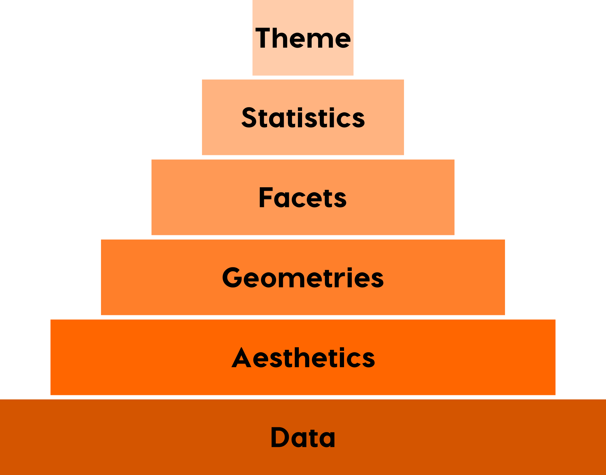
In ggplot2 we build a plot by “adding” commands on top of one another which specify plot layers and design elements. For a standard plot your order will follow this process:
- “Open” the plot with the
ggplot()command and specify the dataset - “Map” data columns to “aesthetic” features of the plot such as axes, colour, size, shape fill, transparency etc.
- Add “geom” layers to visualise your data in the desired way
- Modify “scales” such as colour choices, axis breaks
- Add “theme” design elements to your plot such as axis labels, title, captions, fonts, text sizes, background themes and the orientation of different elemnets
“Adding” layers to your plot is done literally, by ending a ggplot line with the + symbol you can indicate that you wish to add further details on the following line. This can be repeated until your complete plot is built. Using this line-by-line syntax allows your code to be more readable, both for you to make changes in the future and to others trying to understand your work. Additionally we can add line breaks within lines of ggplot code, this is useful to highlight when you are specifying a different argument of the plot and leads to more readable plots, you will see examples of this throughout the tutorial. These line breaks are not necessary for the code to run but are useful to help yourself and others disect the code.
In the following sections we will put this into practice step-by-step.
ggplot2 in RStudio
In this tutorial we code within chunks inside of this tutorial module. In reality you will likely be running your R code with the popular R coding environment RStudio.
When we run a plotting command in RStudio the code will run in the console (as with any other R code) but you will not see the output here. The output will be passed to the “Plots” tab. By default this is in the bottom right quadrant of RStudio alongside the “Files”, “Packages”, “Help” and “Viewer” tabs:
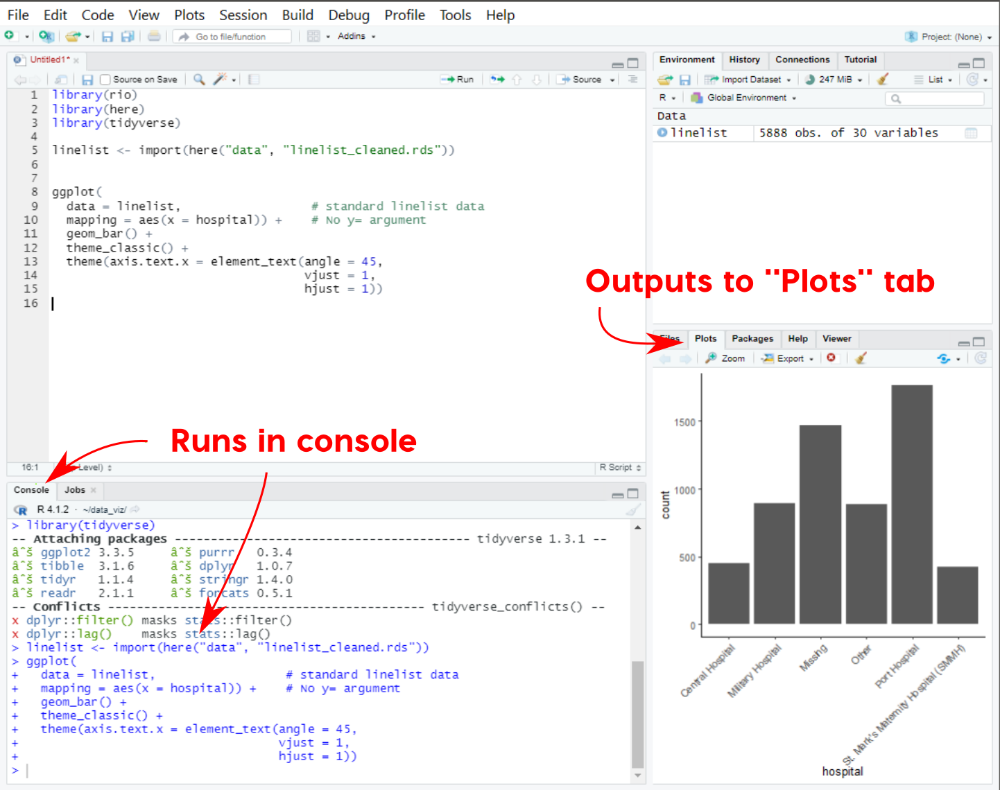
If we save our plot in or R environment by assigning it to a name it will not plot when we run the code, only when we run the name of the plot: 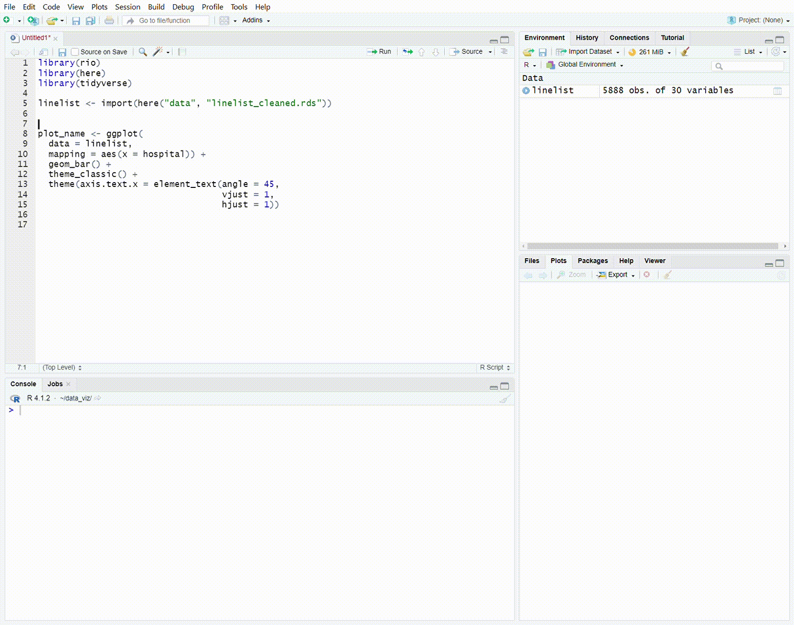
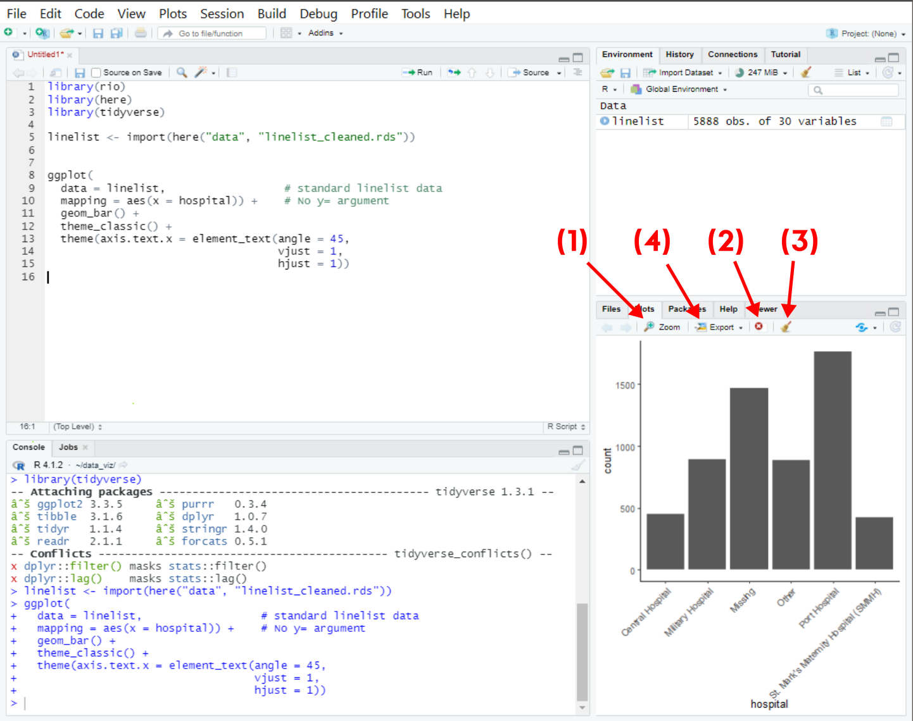
To see your plot in a larger window you can click on “Zoom” (1)
We can also remove plots from the plot tab using the red X button to remove the current plot (2) or the little brush to remove all previous plots (3).
The “Export” button (4) allows us to save plots to a file or copy to our clipboard to paste elsewhere. To save a ggplot() with a function we can use ggsave(). This gives more options than exporting via the RStudio window and is also useful to save multiple plots from the same code.
ggsave() can work in two ways: * Specify the name of the plot object, then the file path and name with extension * For example: ggsave(plot_name, here(“plots”, “plot_name.png”)) * Run the command with only a file path, to save the last plot that was printed * For example: ggsave(here(“plots”, “plot_name.png”))
You can export as png, pdf, jpeg, tiff, bmp, svg, or several other file types, by specifying the file extension in the file path.
You can also specify the arguments width =, height =, and units = (either “in”, “cm”, or “mm”). You can also specify dpi = with a number for plot resolution (e.g. 300). See the function details by entering ?ggsave or reading the documentation online
“Open” the plot
The ggplot2 package is built around the R function ggplot() which is the first command for any ggplot. Running ggplot() in your R console should generate a blank canvas:
ggplot()ggplot()We assign the dataframe we wish to use with the data = argument of this function. In our example this dataframe is called linelist:
ggplot(data = linelist)If you are familiar with the pipe operator (%>%) from our data cleaning tutorial, data can also be passed into a ggplot command using a pipe:
linelist %>%
ggplot()Mapping columns
ggplot(
data = linelist,
mapping = aes(x = age,
y = bmi))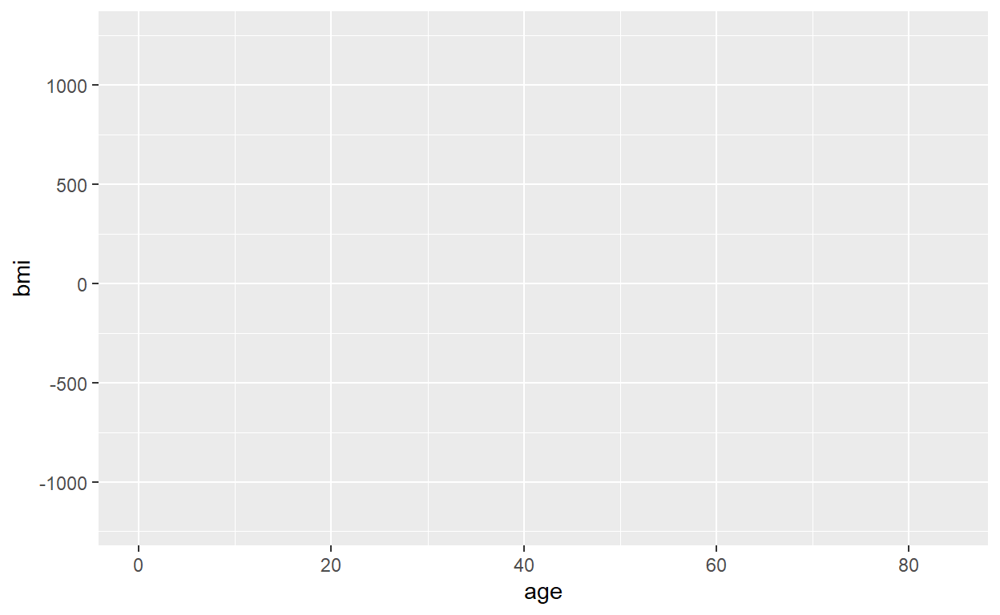
“Aesthetics” are features whose display could vary or each data point. An obvious example are the X and Y co-ordinates but these can also include the color, shape and other properties of the plot which depend on columns in your data. We will get into other aesthetics further into the tutorial.
mapping = aes() assigns plot aesthetics to columns from your data. Any arguments to be input must be placed within the aes() command to be interpreted as dependent on the data.
Here we have set the axes X and Y to the age and bmi columns from the linelist data. You can see this represented on the axes above.
The first 25 rows of the linelist data are reproduced below. Try changing the Y axis to weight rather than BMI in the R window below. You can use the arrows to scroll left and right through the table and find the correct column.
Below is an R exercise where you can edit and write your own code. Using “Run code” will run what you have entered and produce an output, to check your answer against the solution click “Submit Answer”. If you get stuck be sure to click the “Hints” button above the code chunk to get a hint to the solution.
ggplot(
data = linelist,
mapping = aes(x = age,
y = bmi))The weight column is labeled wt_kgggplot(
data = linelist,
mapping = aes(x = age,
y = wt_kg))Note: You may see aes() called in ggplot code without the mapping = argument being specified, as with any R function the arguments do not need to be specifically named as long as they are passed in the order expected by the function. For clarity here we include mapping = but if you see code elsewhere without this it achieves the same result.
Add geoms
As we have seen above, running our ggplot() command with the data attached and X and Y coordinates determined does not give us a completed plot. To do this we need to add geometry with “geom” commands. These all follow a common format of geom_XXXX() where XXXX is replaced with a plot type such as geom_line() or geom_bar() or more general objects to be plotted such as text: geom_text() or a horizontal line: geom_hline(). A full list of available ggplot2 geoms can be found in the ggplot reference document and many more can be added by loading additional packages. Some common “geoms” for epidemiology are listed below:
- Histograms
geom_histogram() - Bar charts
geom_bar()orgeom_col()(These are covered later in the tutorial) - Box plots
geom_boxplot() - Points (eg. scatter plots)
geom_point() - Line graphs
geom_line()(points joined in order of the x-axis variable) orgeom_path()(points joined in the order given in the data) - Trend lines
geom_smooth()
Adding (+) geom_point() to our previous ggplot() call will plot points using the X and Y variables we defined:
ggplot(
data = linelist,
mapping = aes(
x = age,
y = wt_kg))+
geom_point()## Warning: Removed 86 rows containing missing values (geom_point).
You will see a warning when running this code reproduced above. This is due to missing data in the linelist. ggplot2 will automatically drop rows with missing values from simple plots.
We can also plot other simple plots with the same data by switching out the geom_point() for another geom. Below we plot a histogram of ages included in the linelist. This type of plot only requires a single variable. Can you spot what is missing from the code below?
ggplot(
data = linelist,
mapping = aes(x = age))
geom_histogram()remember we need to add layers to our ggplotggplot(
data = linelist,
mapping = aes(x = age)) +
geom_histogram()Other aesthetics
In the previous section we saw examples of plots that assigned columns in the data to both the x-axis and y-axis (e.g. scatterplots) and plots that used only an x-axis (e.g. histograms). As well as these simple aesthetics, we can also adjust elements specific to the type of plot we are using (the geom_*()):
- shape = Display a point with geom_point() as a dot, star, triangle etc.
- fill = The interior color (e.g. of a bar or boxplot)
- color = The exterior line of a bar, boxplot, etc., or the point color if using geom_point()
- size = Size (e.g. line thickness, point size)
- alpha = Transparency (1 = opaque, 0 = invisible)
- binwidth = Width of histogram bins
- width = Width of “bar plot” columns
- linetype = Line type (e.g. solid, dashed, dotted)
These plot object aesthetics can be assigned values in two ways:
- Static values (e.g. fill = “orange”) to apply across all plotted observations
- Assigned outside
aes() - same display for all data
- Assigned outside
ggplot(
data = linelist,
mapping = aes(x = age)) +
geom_histogram(
fill = "orange") NOTE: when we assign a character value such as the fixed color orange, we need to use quotation marks (
NOTE: when we assign a character value such as the fixed color orange, we need to use quotation marks ("orange") whereas when we are mapping an aesthetic to a column name we do not use quotation marks
- A data column (e.g. color = gender) such that display of each observation depends on its value in that column
- Assigned inside
aes() - Dispalys data grouped by selected column
- Assigned inside
ggplot(
data = linelist,
mapping = aes(
x = age,
y = wt_kg)) +
geom_point(
mapping = aes(color = gender))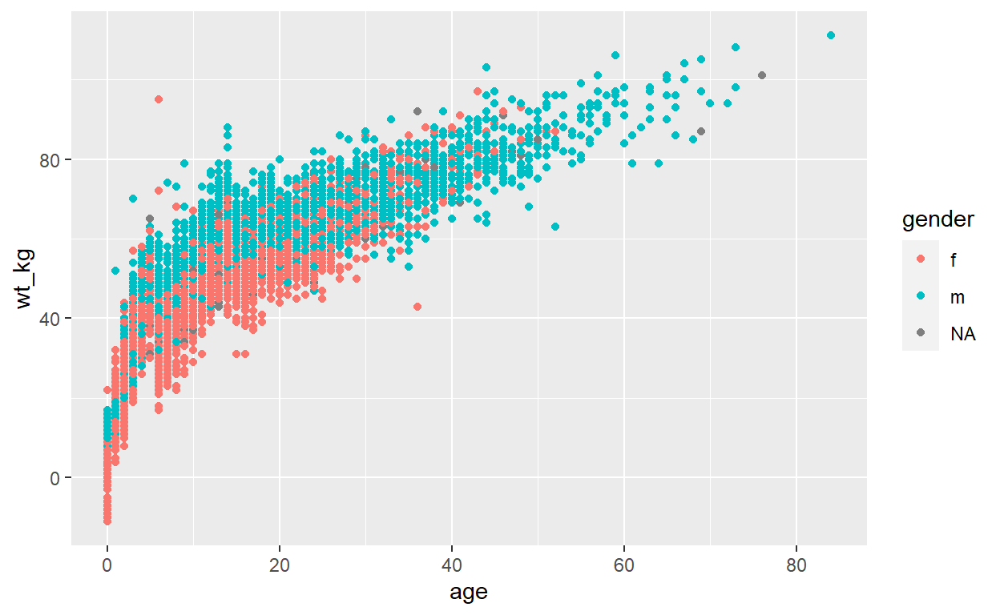
Try changing the histogram plot code below to have the bar fill determined by gender.
ggplot(
data = linelist,
mapping = aes(x = age)) +
geom_histogram(fill = "orange")aes(fill = gender)ggplot(
data = linelist,
mapping = aes(x = age)) +
geom_histogram(
mapping = aes(fill = gender))More examples
For dot and line plots we assign the color using color rather than fill as they are outlines rather than filled objects. Here we also adjust the size (size =) of the points and the opacity (alpha =)(make them more see through; useful for overlaid plots)
ggplot(
data = linelist,
mapping = aes(
x = age,
y = wt_kg)) +
geom_point(
mapping = aes(color = outcome),
size = 2,
alpha = 0.5)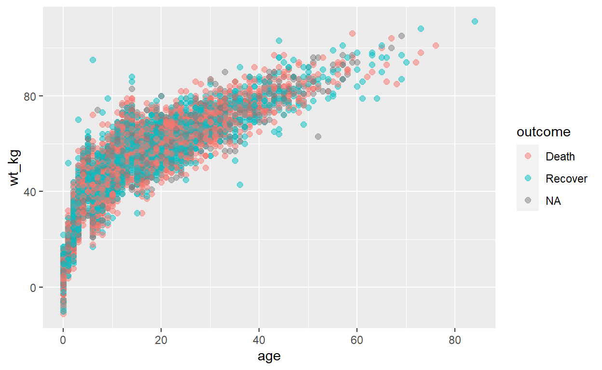
NOTE: here we assign size and alpha to fixed values outside of the mapping = aes() argument, these can also be mapped to columns in our data by placing them inside the argument and specifying a column name to map them to.
We will cover different color options later and how to change the colors assigned to your data. Basic colors for static mapping are built-in with ggplot2:
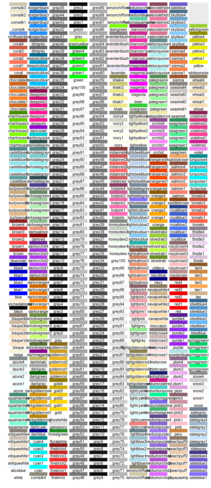
A range of point shapes are also available in R, these can be used to set point shapes. The ones with blue centers below have a fill and so can be filled with a different argument to their colour (outline)
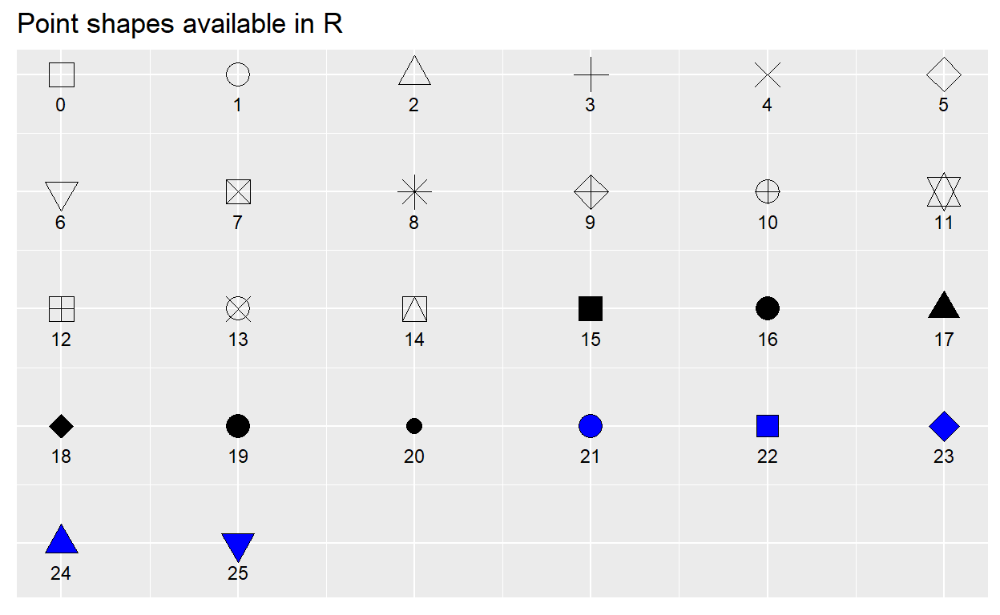
As with the other aesthetics we have seen shape can be dynamic:
ggplot(
data = linelist,
mapping = aes(
x = age,
y = wt_kg)) +
geom_point(
mapping = aes(
shape = gender,
color = age_cat),
size = 3,
alpha = 0.3)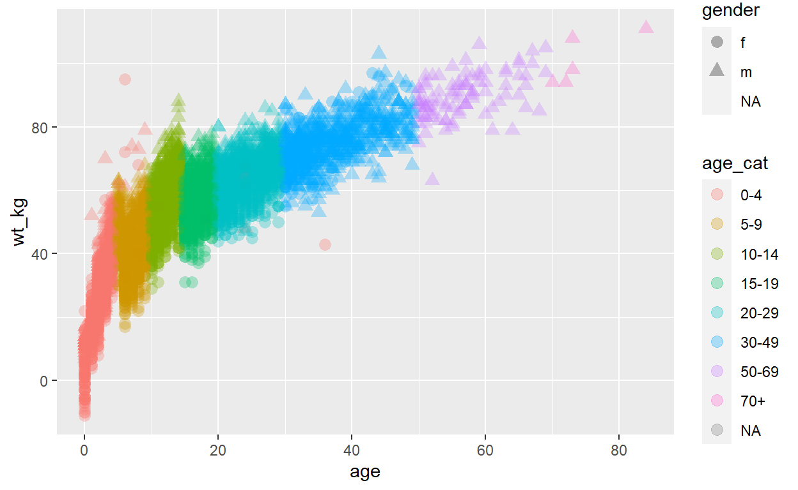
or static:
ggplot(
data = linelist,
mapping = aes(
x = age,
y = wt_kg)) +
geom_point(
mapping = aes(fill = age_cat),
color = "black",
shape = 21,
size = 3,
alpha = 0.3)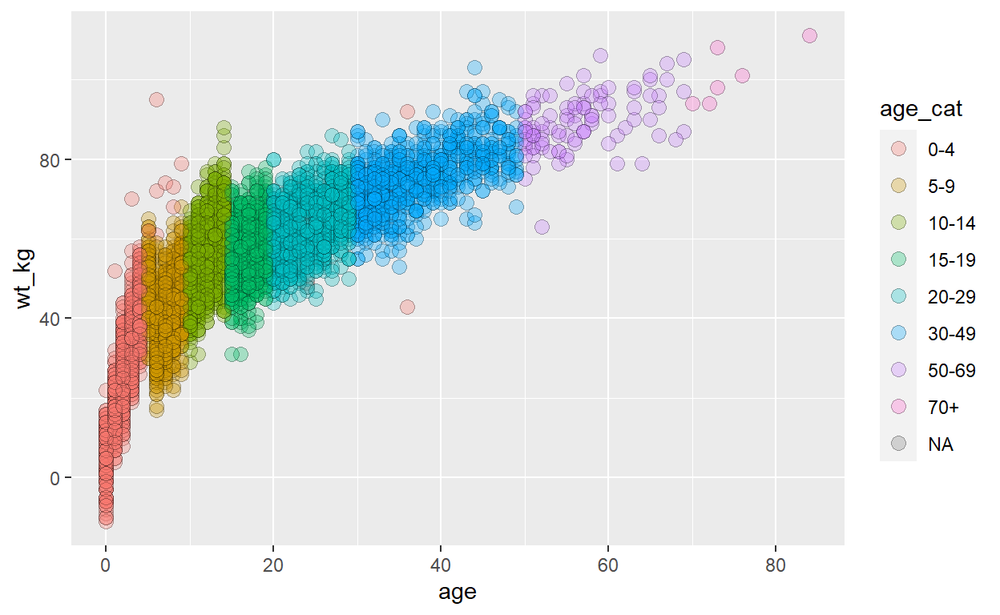
Here we use a shape with fill to allow each point to have a black outline with categorical fill.
Static aesthetics
An aesthetic is static if it applies the same display to all data points in the geom or plot. Static aesthetics are defined outside aes() to a number or character value. egs. color = seagreen size = 3 alpha = 0.5
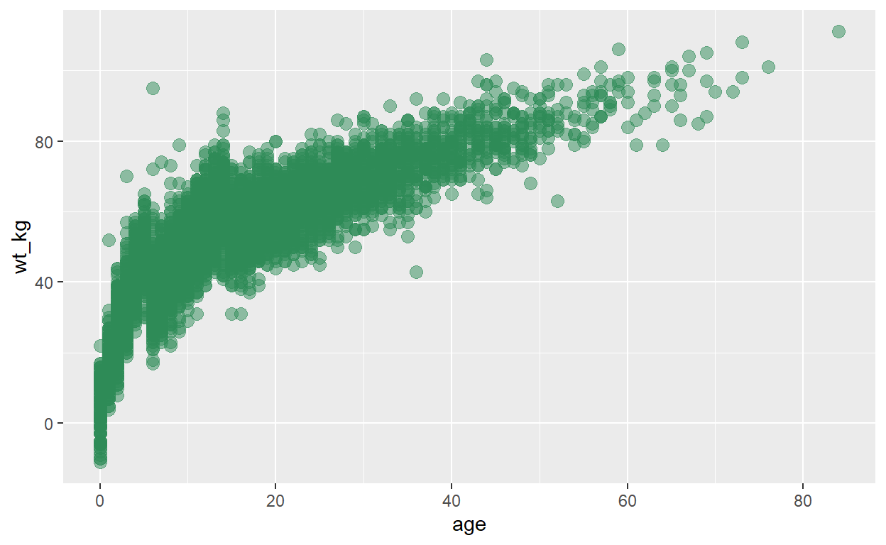
Assigned (dynamic) aesthetics
Dynamic aesthetics are mapped to a column name, and defined inside aes(). This creates “groups” in the plot and generates a legend. The display varies for each data point.
Combining both types
As we have shown in the examples, both types of aesthetic can be combined in one plot to generate the desired outcome.
Placement of aes()
- Dynamic mappings in the initial
ggplot()call will apply to subsequent geoms, unless otherwise indicated - Static aesthetics (e.g. color = “blue”) are not inherited by subsequent geoms
- Mappings written within one geom apply only to that geom
It is good practice to add global option sin the initial ggplot() call such as the coordinates used in the plot. This makes reading the code more easy for others and yourself. The data is also usually global but in some cases you may load different data for individual geoms inside those geoms
Facets
Aesthetics are a good way of showing groups in your data, another way is by faceting. facet_wrap() can be used to produce an individual plot for each unique value of the column passed to it. Put a “~” before the column name in the command
ggplot(
data = linelist,
mapping = aes(x = date_onset)) +
geom_histogram() +
facet_wrap(~source)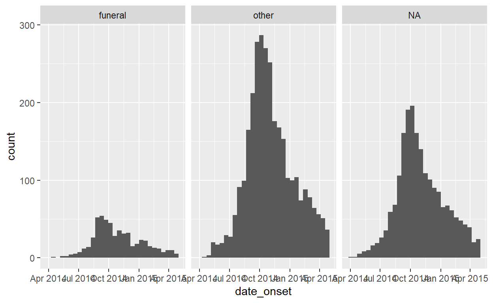
Here we split out the linelist data by source of infection. A key thing to see here is that we must put a “~” before the column name we want to facet by otherwise we will get an error message.
You will also notice that the date axes in these facet plots look terrible by default! We will address this in the scales section of the tutorial.
By default facet_wrap() automatically matches scales between plots. This can be turned off with “free” options passed to scales =
- “free_y”
- “free_x”
- “free” (both x and y)
ggplot(
data = linelist,
mapping = aes(x = date_onset)) +
geom_histogram() +
facet_wrap(
~source,
scales = "free_y")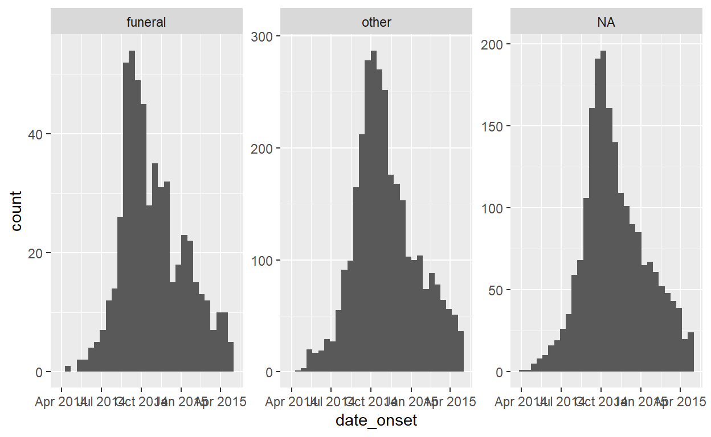
Free axes are generally not recommended as they can mislead an audience not carefully checking your plots
you can also set the number of columns or rows of plots produced with ncol = and nrow =
Try fixing the below code splitting cases by reporting hospital to plot a facet:
- Without a free y axis
- With 2 columns of plots
- With fill set by the source of infection (calls back to aesthetic mapping section)
ggplot(
data = linelist,
mapping = aes(x = date_onset)) +
geom_histogram() +
facet_wrap(
~hospital,
scales = "free_y",
ncol = 4)1. We can remove the scales argument completely as we want to use the default.
2. adust ncol =
3. we want to specify fill = source inside the aes mapping for the histogramggplot(
data = linelist,
mapping = aes(x = date_onset)) +
geom_histogram(mapping = aes(fill = source)) +
facet_wrap(
~hospital,
ncol = 2)We will fix the date (x) axis label overlap later in the tutorial.
Facet by two variables
The “~” signifies “by”. You can place columns on either side. With facet_wrap(), levels are combined into facet titles, appearing alphabetically/by factor level.
ggplot(
data = linelist,
mapping = aes(x = date_onset)) +
geom_histogram(mapping = aes(fill = source)) +
facet_wrap(hospital ~ gender)
To improve on this layout we can instead use the facet_grid() command:
ggplot(
data = linelist,
mapping = aes(x = date_onset)) +
geom_histogram(mapping = aes(fill = source)) +
facet_grid(hospital ~ gender)
Drop levels from facets
The easiest way to drop unwanted levels from your facet plot is to remove them in advance with filter() or drop_na(), functions you will have seen in the data cleaning tutorial.
For ease we can also pipe this amended data straight into ggplot() rather than saving the changes as a new object for plotting.
linelist %>%
drop_na(gender, hospital) %>%
filter(hospital != "Missing") %>%
ggplot(
mapping = aes(x = date_onset)) +
geom_histogram(mapping = aes(fill = source)) +
facet_grid(hospital ~ gender)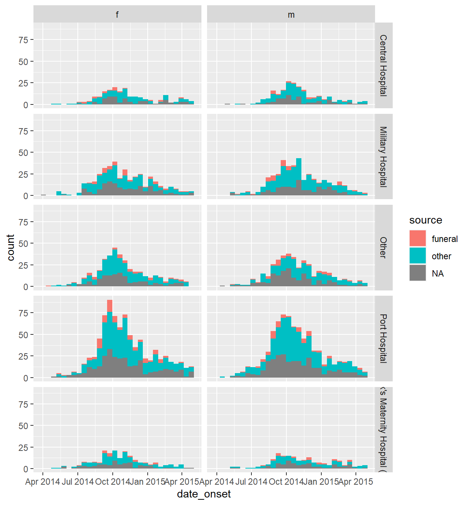 NOTE: here we are piping (%>%) into our plotting function after filtering with dplyr.
gghighlight()
It can be useful to show facets in context of other data for comparison. gghighlight() from the package gghighlight can be used in combination with facets to have this effect.
ggplot(
data = linelist,
mapping = aes(x = date_onset)) +
geom_histogram(mapping = aes(fill = hospital)) +
facet_wrap(~hospital) +
gghighlight()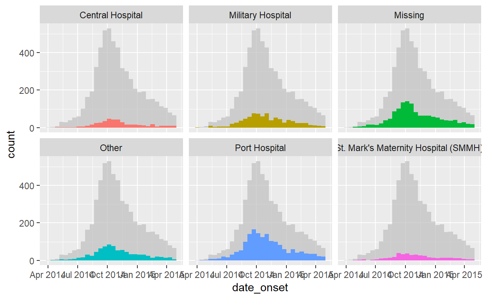
gghighlight can also be added to other types of ggplot. Here we specify we want to highlight the 15-19 year olds in some data grouped from the linelist in this tutorial.
linelist %>%
# get daily counts by age group
group_by(age_cat, date_onset) %>%
count() %>%
ggplot(
mapping = aes(
x = date_onset,
y = n,
color = age_cat)) +
geom_line() +
gghighlight::gghighlight(
age_cat %in% c("15-19"))+
theme(legend.position = "none")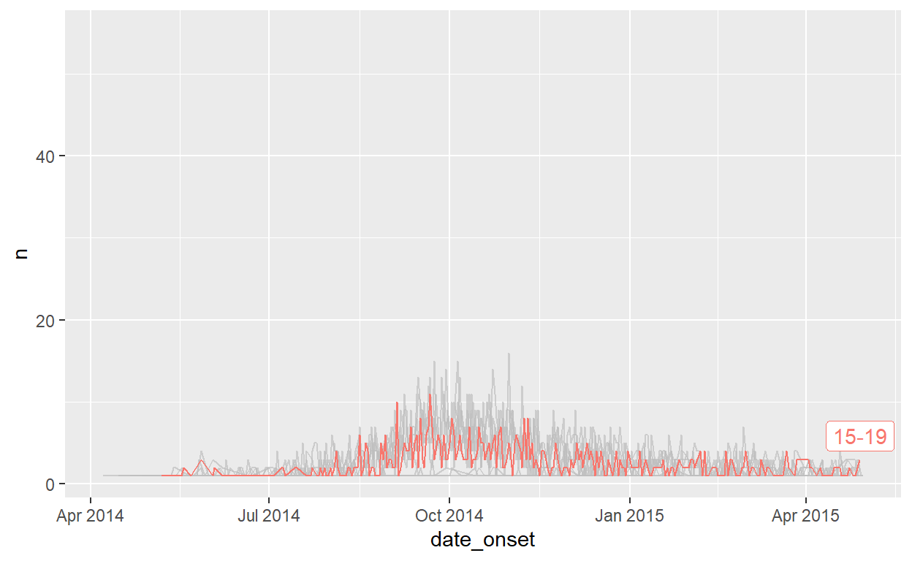
Check the handbook for more information on grouping data
Editing the facet title strips is touched on in the themes section of this tutorial, see This short tutorial for more information on this. The order of the facets can be adjusted by faceting by a factor and reordering the levels. This is covered for barplots in the barplot section of the tutorial.
facet quiz - ways to group data - aesthetic and facet can you think of situations where facets are preferred? facet_wrap vs facet_grid
Below is a short quiz on facets, these are free text questions so there are no wrong answers, let us know what you think!
Scales
Scale commands replace defaults of how the aesthetic mappings manifest, such as:
- Which colors or shapes to display
- The min/max of point sizes
- The min/max and frequency of axes breaks
As a generic formula, these commands are written as: scale_AESTHETIC_METHOD().
scale_: this prefix never changes- AESTHETIC:
_fill_,_color_,_x_,_y_, etc. - METHOD:
_continuous(),_discrete(),_manual(),_date(), etc.
Some examples of scale commands:
| You want to adjust | Scale command |
|---|---|
| continuous y-axis | scale_y_continuous() |
| date x-axis | scale_x_date() |
| categorical x-axis | scale_x_discrete() |
| fill, continuous | scale_fill_continuous() |
| fill, continuous | scale_fill_gradient() |
| color, manual assign | scale_color_manual() |
here we show two different ways to create a continuous color gradient. scale_*_continuous works with pre-built gradient palettes, scale_*_gradient() creates a 2 color gradient, scale_*_gradient2 allows you to also set a midpoint color between these two and scale_gradientn() allows you to create more complex palettes. More information on these functions is available here.
Default scales
ggplot(
data = linelist,
mapping = aes(
x = outcome,
fill = gender)) +
geom_bar()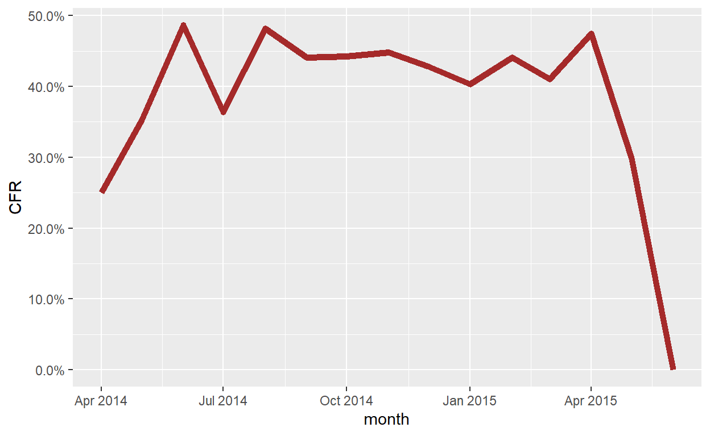
Above, the fill of a bar plot uses the default colors and axis breaks. We can adjust the elements of this plot with a scale_AESTHETIC_METHOD() function added (+) to the end of our ggplot()
Adjust fill
Here we adjust the fill color of the bars manually (scale_fill_manual()). We provide assingments to the values in our dataset (“m” and “f”) within a vector (c()). To assign a colour to the na values we need to specify this with the seperate argument na.value =
ggplot(
data = linelist,
mapping = aes(
x = outcome,
fill = gender)) +
geom_bar() +
scale_fill_manual(
values = c(
"m" = "violetred",
"f" = "aquamarine"),
na.value = "green")
Here we have chosen some ugly colors to highlight what we are changing! Try changing the color for “m” to “dodgerblue” and “f” to “tomato” for a nicer color combination in the code below. Also set NA to be “grey”, a common standard plot color.
ggplot(
data = linelist,
mapping = aes(
x = outcome,
fill = gender)) +
geom_bar() +
scale_fill_manual(
values = c(
"m" = "violetred",
"f" = "aquamarine"),
na.value = "green")ggplot(
data = linelist,
mapping = aes(
x = outcome,
fill = gender)) +
geom_bar() +
scale_fill_manual(
values = c(
"m" = "dodgerblue",
"f" = "tomato"),
na.value = "grey")Built-in palettes
R and ggplot2 come with a number of built-in palettes. As we are working here with discrete data we can use scale_fill_brewer() to access the following palettes rather than specifying our own colors:

As we are working with a discrete scale the middle group of color palettes are most appropriate.
ggplot(
data = linelist,
mapping = aes(
x = outcome,
fill = gender)) +
geom_bar() +
scale_fill_brewer(palette = "Pastel2",
na.value = "grey")
A color-blind friendly palette is also available known as viridis. This comes in discrete and continuous forms scale_fill_viridis_d() and scale_fill_viridis_c():
ggplot(
data = linelist,
mapping = aes(
x = outcome,
fill = gender)) +
geom_bar() +
scale_fill_viridis_d(na.value = "grey")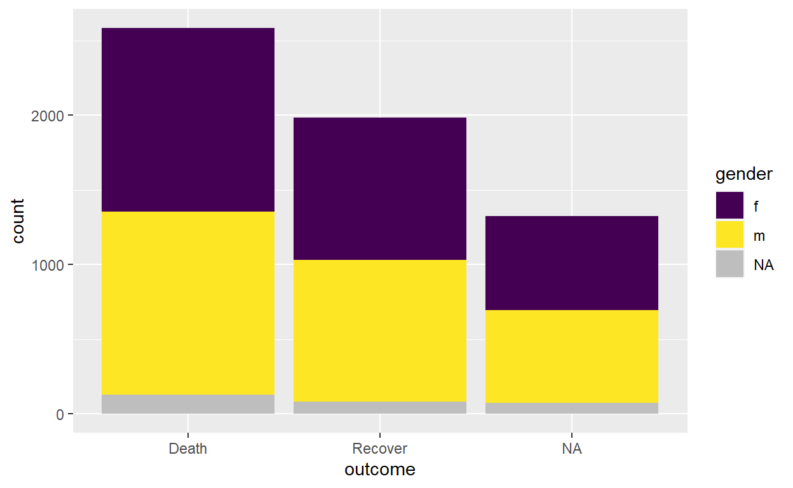
Try applying what you have learned to add a continuous viridis palette to the following plot. Be aware that here we are dealing with a color rather than fill aesthetic. It is best practice to also specify an na.value =
ggplot(
data = linelist,
mapping = aes(
x = age,
y = wt_kg,
color = temp)) +
geom_point() + scale_color_viridis_c(na.value = "grey")ggplot(
data = linelist,
mapping = aes(
x = age,
y = wt_kg,
color = temp)) +
geom_point() +
scale_color_viridis_c(na.value = "grey")Viridis (try with option = "plasma" or “inferno”), and colorbrewer palette functions can be added to any ggplot.
Adjusting y-axis
We can edit axes in a similar way. In a barplot such as this one we have a continuous y-axis and discrete x-axis. Here we might decide that the counts on the y-axis are not descriptive enough so we wish to supply our own break points. In scale_y_continuous() we adjust the y-axis breaks using seq() to define a numeric sequence:
ggplot(
data = linelist,
mapping = aes(
x = outcome,
fill = gender)) +
geom_bar() +
scale_fill_viridis_d(na.value = "grey") +
scale_y_continuous(breaks = seq(from = 0,
to = 3000,
by = 500))
Starting scales at 0
You may have noticed that ggplot2 has a behaviour of expanding your axis beyond the data, with a gap between the values and the axis at the bottom. This can be fixed with the axes scales using the expand = argument.
ggplot(
data = linelist,
mapping = aes(
x = outcome,
fill = gender)) +
geom_bar() +
scale_fill_viridis_d(na.value = "grey") +
scale_y_continuous(breaks = seq(from = 0,
to = 3000,
by = 500),
expand = c(0,0))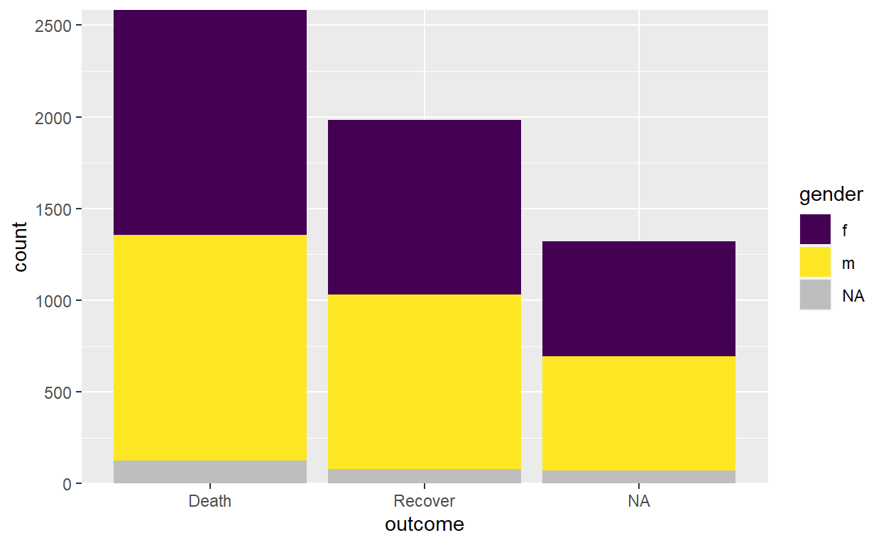
Try applying the same expand = c(0,0) to the discrete x-axis:
ggplot(
data = linelist,
mapping = aes(
x = outcome,
fill = gender)) +
geom_bar() +
scale_fill_viridis_d(na.value = "grey") +
scale_y_continuous(breaks = seq(from = 0,
to = 3000,
by = 500),
expand = c(0,0))ggplot(
data = linelist,
mapping = aes(
x = outcome,
fill = gender)) +
geom_bar() +
scale_fill_viridis_d(na.value = "grey") +
scale_y_continuous(breaks = seq(from = 0,
to = 3000,
by = 500),
expand = c(0,0)) +
scale_x_discrete(expand = c(0,0))Date axis labels
The default scale for date axis labels will vary by the range of your data. Here is an example plot:
ggplot(
data = linelist,
mapping = aes(x = date_onset)) +
geom_histogram()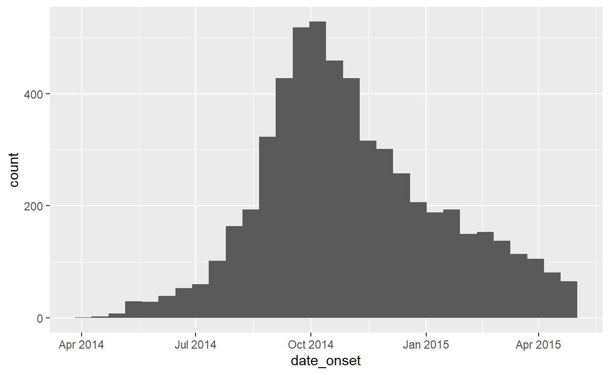
Adjust axis labels with scale_x_date().
Use date_breaks= values like “1 week”, “2 weeks”, or “3 months”.
Note: these are the axis label breaks, the don’t affect the bins of the histogram (bar widths), for tips on geom_histogram() bins, see Epi R Handbook epicurves page
Try setting the date axis breaks to 2 months on the plot from above:
ggplot(
data = linelist,
mapping = aes(x = date_onset)) +
geom_histogram()ggplot(
data = linelist,
mapping = aes(x = date_onset)) +
geom_histogram() +
scale_x_date(date_breaks = "2 months")Date axis labels
We can specify the date labels format with date_labels = using “strptime” syntax - see R documentation for more information on this
"%d %b %Y" for DD MMM YYYY. Below we also include a new line with \n to move the year below the day and month.
ggplot(
data = linelist,
mapping = aes(x = date_onset)) +
geom_histogram() +
scale_x_date(date_breaks = "2 months",
date_labels = "%d %b \n %Y" )See Epi R Handbook Epicurves and Strings pages for more tips
There is also a built-in simplification for date labels using the scales package. Confusingly this is applied using the labels = rather than date_labels = argument. Assigning labels= to label_date_short() from the scales package means the year is not repeated on each label anymore.
ggplot(
data = linelist,
mapping = aes(x = date_onset)) +
geom_histogram() +
scale_x_date(date_breaks = "2 months",
labels = scales::label_date_short() )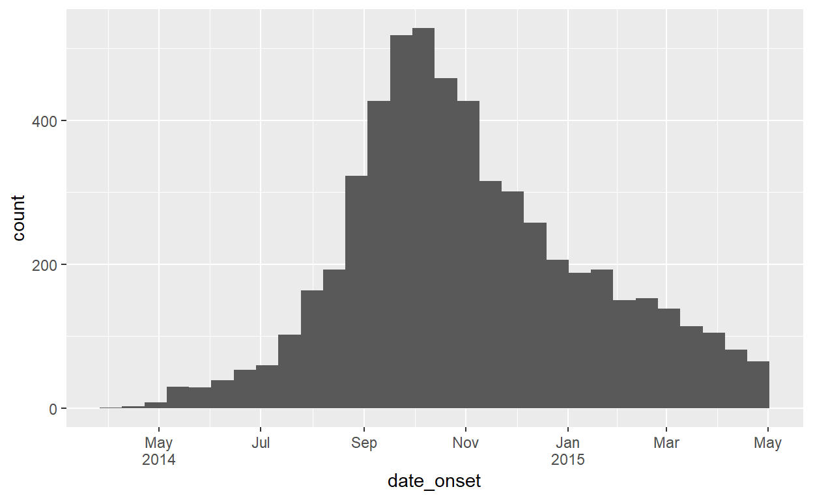
Display percentages
We can easily display proportions as percents with percent() from scales within scale_y_continuous().
Here we plot some case fatality data adapted from the linelist:
| month | cases | deaths | CFR |
|---|---|---|---|
| 2014-04-01 | 4 | 1 | 0.2500000 |
| 2014-05-01 | 34 | 12 | 0.3529412 |
| 2014-06-01 | 72 | 35 | 0.4861111 |
| 2014-07-01 | 143 | 52 | 0.3636364 |
ggplot(
data = CFR_data,
mapping = aes(
x = month,
y = CFR)) +
geom_line(
size = 2,
color = "brown") +
scale_y_continuous(labels = percent)
Plot labels
linelist$hosp_time <- linelist$date_outcome - linelist$date_hospitalisation
ggplot(data = linelist) +
geom_point(
mapping = aes(
x = age,
y = hosp_time,
color = outcome),
alpha = 0.7) +
scale_color_brewer(
palette = "Pastel2",
na.value = "grey") +
ylim(c(0, 70)) +
labs(
title = "Duration of admission",
subtitle = "All hospitals",
x = "Age (years)",
y = "Duration (days)",
caption = "Fictional Ebola data",
color = "Outcome"
)
Use labs() as above to edit the labels on the plot Note: to edit legend title, use the aesthetic that created the legend (e.g. color =).
Here we also use ylim() to set the limits of the y-axis. The same terminology can be applied for the x-axis.
We can also use "\n" to break lines within labels for longer names.
Dynamic labels
We can embed code in str_glue() that updates with the data
str_glue("Data as of {Sys.Date()}")## Data as of 2022-03-09Here we extract the current date (Sys.Date()) in the time zone of our computer to add to the plot.
str_glue("{fmt_count(linelist, is.na(date_onset))} cases missing onset and not shown")## 256 (4.3%) cases missing onset and not shownAnything wrapped in curly brackets ({__}) will be run as R code allowing us to produce labels which will update with values from our data as the data is updated.
Theme elements
Themes are non-data design features (background, text size/color, etc).
Complete themes
These “complete themes” are easy to add.
# Try one of these...
+ theme_bw()
+ theme_classic()
+ theme_dark()
+ theme_gray()
+ theme_minimal()
+ theme_light()
+ theme_void()Try adding the default themes above to this plot to see the changes:
linelist$hosp_time <- linelist$date_outcome - linelist$date_hospitalisation
ggplot(data = linelist) +
geom_point(
mapping = aes(
x = age,
y = hosp_time,
color = outcome),
alpha = 0.7) +
scale_color_brewer(
palette = "Pastel2",
na.value = "grey") +
ylim(c(0, 70)) +
labs(
title = "Duration of admission",
subtitle = "All hospitals",
x = "Age (years)",
y = "Duration (days)",
caption = "Fictional Ebola data",
color = "Outcome"
)Try the argument base_size = 16 inside the theme to quickly increase text size.
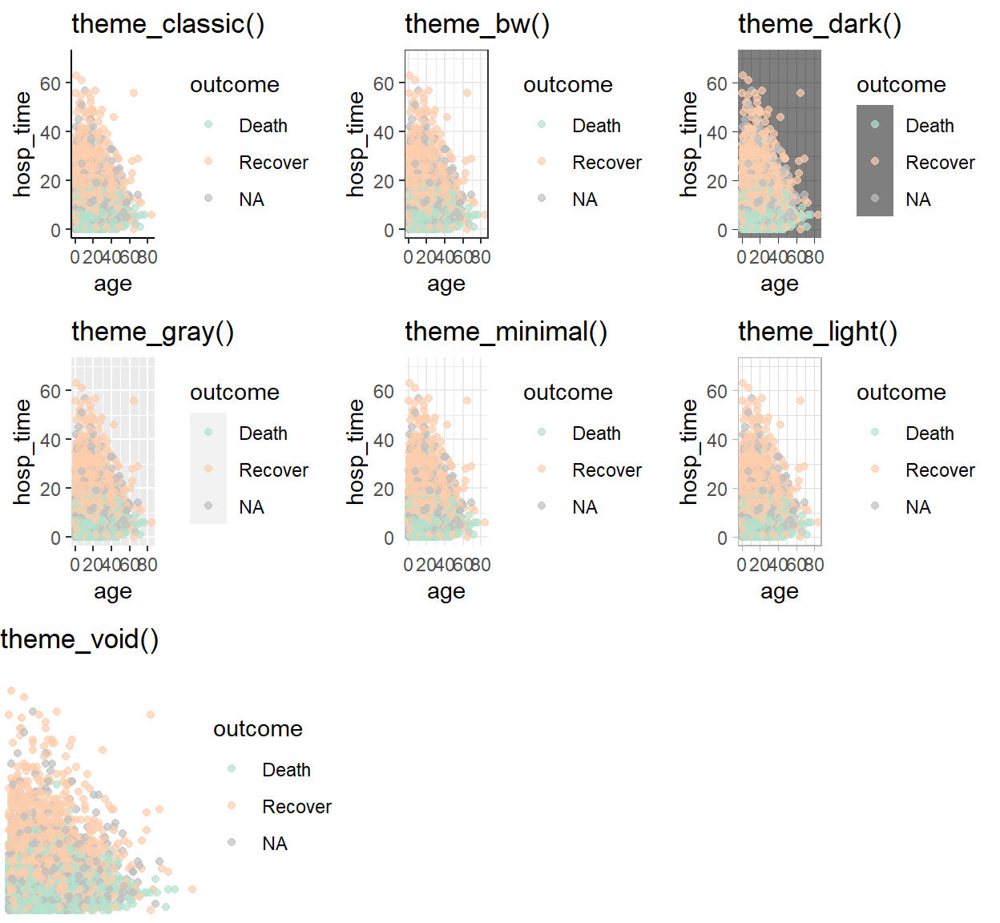
Themes
Micro-adjustments to the theme can be made with theme() as these are mostly small layout and visual details we won’t go into much detail here. More information is available in the handbook. The syntax for themes taxes time to learn and is not used often enough to commit to memory for most R users. See this list of feature-specific arguments. or running theme_get() in your R window to get a list of all theme arguments in the console.
ggplot(data = linelist) +
geom_point(
mapping = aes(
x = age,
y = hosp_time,
color = outcome),
alpha = 0.7) +
scale_color_brewer(
palette = "Pastel2",
na.value = "grey") +
ylim(c(0, 70)) +
labs(
title = "Duration of admission",
subtitle = "All hospitals",
x = "Age (years)",
y = "Duration (days)",
caption = "Fictional Ebola data",
color = "Outcome"
) +
theme_classic(base_size = 16) +
theme(
legend.position = "bottom", # move legend to bottom
plot.title = element_text(color = "red", # title color
size = 20, # title font size
face = "bold"), # title typeface
axis.title.y = element_text(angle = 0)) # rotate y axis title to be horizontal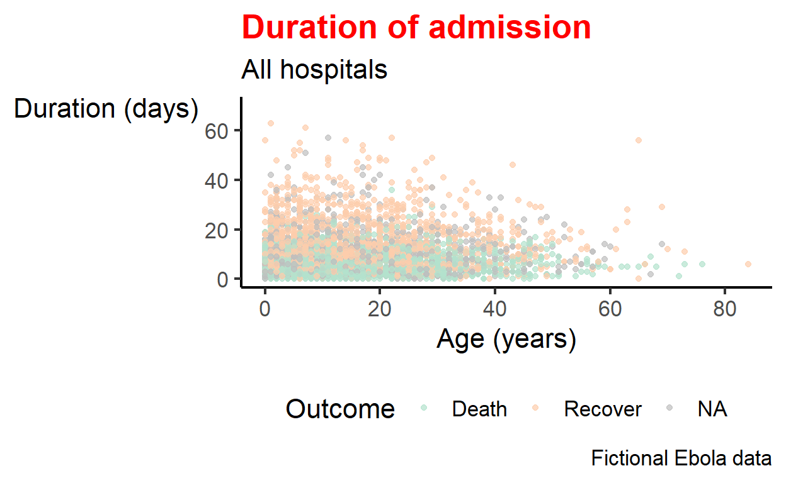
These theme elements follow a similar 2-part syntax much like mapping = aes() where we pass a function to an argument of a higher level function (here theme()).
Remember to add any adjustments after any pre-built themes
some useful theme options are presented below:
theme() argument |
What it adjusts |
|---|---|
plot.title = element_text() |
The title |
plot.subtitle = element_text() |
The subtitle |
plot.caption = element_text() |
The caption (family, face, color, size, angle, vjust, hjust…) |
axis.title = element_text() |
Axis titles (both x and y) (size, face, angle, color…) |
axis.title.x = element_text() |
Axis title x-axis only (use .y for y-axis only) |
axis.text = element_text() |
Axis text (both x and y) |
axis.text.x = element_text() |
Axis text x-axis only (use .y for y-axis only) |
axis.ticks = element_blank() |
Remove axis ticks |
axis.line = element_line() |
Axis lines (colour, size, linetype: solid dashed dotted etc) |
strip.text = element_text() |
Facet strip text (colour, face, size, angle…) |
strip.background = element_rect() |
facet strip (fill, colour, size…) |
The main adjustments you are likely to make regularly are to do with the plot legend.position =. Default options are "top", "bottom", "left", "right" and "none" (to hide the legend completely). The legend position can also be set more specifically with c(x,y) where x and y refer to the position along the x or y axis as a proportion of the total length (ie. bottom right is c(1,0))
Most other theme elements can also be turned off using element_blank() eg turn off minor y-axis grid lines and legend title:
Check your understanding of the basics of themes below:
Common epidemiological plots
We will cover some common epidemiological plots in more detail as these are the most likely types of plots you will come across or want to recreate in your work.
Bar plots
We have already introduced and presented bar plots throughout this tutorial using geom_bar(). There is an additional bar plotting geom_*(), geom_col(). These are both used to make general bar plots from different formats of data. We will also introduce a package to produce epicurves (another bar plot you will likely be familiar with) in the next section.
Use geom_bar() if bar height should reflect the number of rows in the data (e.g. a case linelist) as we have seen in previous examples:
ggplot(
data = linelist, # standard linelist data
mapping = aes(x = hospital)) + # no y = argument
geom_bar() Use geom_col() if there is a numeric column containing the desired bar height (e.g. aggregated count data):
ggplot(
data = linelist_agg, # begin with aggregated count data
mapping = aes(
x = eth_race,
y = n)) + # bar height is value in column "n"
geom_col() Bar plot - count rows
With geom_bar(), the height reflects the number of rows per x-axis group. This works well for linelist data.
ggplot(
data = linelist, # standard linelist data
mapping = aes(x = hospital)) + # No y= argument
geom_bar() +
theme_classic() +
theme(axis.text.x = element_text(angle = 45,
vjust = 1,
hjust = 1))
note: here we use theme adjustments introduced in the previous section. As 45 degree rotated labels rotate around the center of the text we then need to adjust the vertical and horizontal positioning hence vjust and hjust
geom_bar() - show groupings
To achieve “stacked” bars with geom_bar(), assign the grouping column to fill=, within aes() e.g. if we want to group by outcome:
| date_onset | hospital | outcome |
|---|---|---|
| 2014-05-13 | Other | NA |
| 2014-05-13 | Missing | Recover |
| 2014-05-16 | St. Mark’s Maternity Hospital (SMMH) | Recover |
| 2014-05-18 | Port Hospital | NA |
| 2014-05-21 | Military Hospital | Recover |
| 2014-05-22 | Port Hospital | Recover |
ggplot(
data = linelist,
mapping = aes(
x = hospital,
fill = outcome)) +
geom_bar() +
theme(axis.text.x = element_text(angle = 45,
vjust = 1,
hjust = 1))
To have adjacent rather than stacked bars we use position = "dodge" inside the geom_bar() call. Try adding this to the code for the plot above:
ggplot(
data = linelist,
mapping = aes(
x = hospital,
fill = outcome)) +
geom_bar() +
theme(axis.text.x = element_text(angle = 45,
vjust = 1,
hjust = 1))ggplot(
data = linelist,
mapping = aes(
x = hospital,
fill = outcome)) +
geom_bar(position = "dodge") +
theme(axis.text.x = element_text(angle = 45,
vjust = 1,
hjust = 1))Bar plot - Aggregated counts
In contrast, geom_col() uses a column of counts, such as column n in this linelist_hospital dataset:
| hospital | n |
|---|---|
| Central Hospital | 454 |
| Military Hospital | 896 |
| Missing | 1469 |
| Other | 885 |
| Port Hospital | 1762 |
| St. Mark’s Maternity Hospital (SMMH) | 422 |
Column n provides the counts for each hospital which are the bar heights we want in our plot. These need to be assigned as the y-axis for geom_col() unlike in geom_bar() where counting is by row in the data.
ggplot(linelist_hospital) +
geom_col(
mapping = aes(
x = hospital,
y = n)) +
theme(axis.text.x = element_text(angle = 45,
vjust = 1,
hjust = 1))
As you can see this gives the same result as the previous section but allows us to work with aggregated count data which is a common format, especially for secondary data.
geom_col() show groupings
To have “stacked” bars using geom_col(), each plotting group must have its own rows in the data. Use “long”-style data like below:
| hospital | outcome | n |
|---|---|---|
| Central Hospital | Death | 193 |
| Central Hospital | Recover | 165 |
| Central Hospital | NA | 96 |
| Military Hospital | Death | 399 |
| Military Hospital | Recover | 309 |
| Military Hospital | NA | 188 |
ggplot(linelist_hospital_outcome) +
geom_col(
mapping = aes(
x = hospital,
y = n,
fill = outcome)) +
theme(axis.text.x = element_text(angle = 45,
vjust = 1,
hjust = 1))
For more information on pivoting data to “long” and “short” formats see our tidy data tutorial
Bar plot - a common error
If your data look like below (counts) and your plot looks like the one below (bars of same height), ensure you are using geom_col() and not geom_bar()!
| hospital | n |
|---|---|
| Central Hospital | 454 |
| Military Hospital | 896 |
| Missing | 1469 |
| Other | 885 |
| Port Hospital | 1762 |
| St. Mark’s Maternity Hospital (SMMH) | 422 |
ggplot(linelist_hospital) +
geom_bar(mapping = aes(x = hospital)) +
theme(axis.text.x = element_text(angle = 45,
vjust = 1,
hjust = 1))
This plot shows that there is one row per hospital!
Flip axes
It is simple to flip the axes on any ggplot by adding coord_flip(). This is useful for bar plots to improve readability with long bar names.
ggplot(linelist) +
geom_bar(
mapping = aes(
x = hospital,
fill = outcome)) +
theme(legend.position = "top") +
coord_flip() 
Adjust bar order
If we convert any column in our data to class factor we can adjust the order of the “levels” using the names present. Here we use fct_relevel() from the forcats package to convert the hospital names to factor and manually adjust the level order.
linelist$hosp_fac <- fct_relevel(linelist$hospital,
"Missing",
"Other",
"Central Hospital",
"Military Hospital",
"Port Hospital",
"St. Mark's Maternity Hospital (SMMH)")
linelist$hosp_fac ## [1] Other Missing
## [3] St. Mark's Maternity Hospital (SMMH) Port Hospital
## [5] Military Hospital Port Hospital
## [7] Missing Missing
## [9] Missing Missing
## [11] Port Hospital Military Hospital
## [13] Missing Missing
## [15] Other Port Hospital
## [17] Port Hospital Port Hospital
## [19] Missing Other
## [21] Port Hospital Port Hospital
## [23] St. Mark's Maternity Hospital (SMMH) Missing
## [25] Other Missing
## [27] St. Mark's Maternity Hospital (SMMH) Military Hospital
## [29] Port Hospital Central Hospital
## [31] Military Hospital Central Hospital
## [33] Missing Military Hospital
## [35] Other Missing
## [37] Missing Port Hospital
## [39] Port Hospital Port Hospital
## [41] Missing Central Hospital
## [43] Military Hospital Other
## [45] Other Other
## [47] Missing St. Mark's Maternity Hospital (SMMH)
## [49] St. Mark's Maternity Hospital (SMMH) Missing
## [51] Other Missing
## [53] Port Hospital Military Hospital
## [55] Missing St. Mark's Maternity Hospital (SMMH)
## [57] Missing Port Hospital
## [59] Other Other
## [61] Other Military Hospital
## [63] Missing Other
## [65] Port Hospital Other
## [67] Central Hospital Missing
## [69] Port Hospital Missing
## [71] Military Hospital Military Hospital
## [73] Other Other
## [75] Missing Military Hospital
## [77] Missing Other
## [79] Other Central Hospital
## [81] Port Hospital Port Hospital
## [83] Central Hospital Port Hospital
## [85] Port Hospital Other
## [87] Other Central Hospital
## [89] Missing Other
## [91] Missing Missing
## [93] Port Hospital Missing
## [95] Other Missing
## [97] Port Hospital Port Hospital
## [99] Port Hospital Military Hospital
## [101] Missing Missing
## [103] Port Hospital Port Hospital
## [105] Port Hospital Other
## [107] Central Hospital Military Hospital
## [109] Missing Military Hospital
## [111] Port Hospital Central Hospital
## [113] Missing Port Hospital
## [115] Port Hospital Military Hospital
## [117] Port Hospital Central Hospital
## [119] Other Military Hospital
## [121] Military Hospital Port Hospital
## [123] Missing Port Hospital
## [125] Military Hospital Port Hospital
## [127] Port Hospital Port Hospital
## [129] Central Hospital Port Hospital
## [131] Missing Missing
## [133] Other Missing
## [135] St. Mark's Maternity Hospital (SMMH) Missing
## [137] St. Mark's Maternity Hospital (SMMH) Missing
## [139] Central Hospital Missing
## [141] Port Hospital St. Mark's Maternity Hospital (SMMH)
## [143] Military Hospital Missing
## [145] Missing Port Hospital
## [147] Other Port Hospital
## [149] Missing Other
## [151] Other Other
## [153] St. Mark's Maternity Hospital (SMMH) Missing
## [155] St. Mark's Maternity Hospital (SMMH) Port Hospital
## [157] Port Hospital St. Mark's Maternity Hospital (SMMH)
## [159] Other Central Hospital
## [161] Missing Missing
## [163] Missing St. Mark's Maternity Hospital (SMMH)
## [165] Other Port Hospital
## [167] Military Hospital Port Hospital
## [169] St. Mark's Maternity Hospital (SMMH) Missing
## [171] Port Hospital Port Hospital
## [173] Missing Port Hospital
## [175] Military Hospital Military Hospital
## [177] Other Missing
## [179] Other Missing
## [181] Missing Port Hospital
## [183] Central Hospital Military Hospital
## [185] Missing Missing
## [187] Port Hospital Other
## [189] Other Missing
## [191] Port Hospital Missing
## [193] Port Hospital Missing
## [195] Port Hospital Other
## [197] Military Hospital Port Hospital
## [199] Port Hospital Other
## [201] Port Hospital Port Hospital
## [203] Other Other
## [205] Other Central Hospital
## [207] Military Hospital Other
## [209] Missing Missing
## [211] Missing Other
## [213] Port Hospital Port Hospital
## [215] Port Hospital Missing
## [217] Military Hospital Port Hospital
## [219] Military Hospital Port Hospital
## [221] Other Missing
## [223] Port Hospital Military Hospital
## [225] Missing Military Hospital
## [227] Other Port Hospital
## [229] Other Missing
## [231] Military Hospital Central Hospital
## [233] Port Hospital Port Hospital
## [235] Port Hospital Port Hospital
## [237] St. Mark's Maternity Hospital (SMMH) Missing
## [239] Missing Military Hospital
## [241] Central Hospital Missing
## [243] St. Mark's Maternity Hospital (SMMH) Missing
## [245] Port Hospital Central Hospital
## [247] Port Hospital Military Hospital
## [249] Military Hospital Port Hospital
## [251] Missing Port Hospital
## [253] Other Central Hospital
## [255] St. Mark's Maternity Hospital (SMMH) St. Mark's Maternity Hospital (SMMH)
## [257] Missing Other
## [259] Missing Central Hospital
## [261] Port Hospital Missing
## [263] Other St. Mark's Maternity Hospital (SMMH)
## [265] Port Hospital Port Hospital
## [267] Port Hospital Port Hospital
## [269] Military Hospital Military Hospital
## [271] Missing Other
## [273] Port Hospital Missing
## [275] Port Hospital Port Hospital
## [277] Missing Port Hospital
## [279] Other Other
## [281] Port Hospital Port Hospital
## [283] St. Mark's Maternity Hospital (SMMH) Missing
## [285] Missing Other
## [287] Missing Missing
## [289] Military Hospital Other
## [291] Military Hospital Port Hospital
## [293] Missing Port Hospital
## [295] Port Hospital Port Hospital
## [297] Missing Missing
## [299] Missing Missing
## [301] Other Port Hospital
## [303] Missing Missing
## [305] Port Hospital Port Hospital
## [307] Military Hospital St. Mark's Maternity Hospital (SMMH)
## [309] Other Central Hospital
## [311] Other Military Hospital
## [313] Port Hospital St. Mark's Maternity Hospital (SMMH)
## [315] Missing Other
## [317] Port Hospital Port Hospital
## [319] Other Port Hospital
## [321] Central Hospital Military Hospital
## [323] Port Hospital Missing
## [325] Other St. Mark's Maternity Hospital (SMMH)
## [327] Port Hospital St. Mark's Maternity Hospital (SMMH)
## [329] Other Port Hospital
## [331] Central Hospital Missing
## [333] Other Missing
## [335] Central Hospital St. Mark's Maternity Hospital (SMMH)
## [337] Missing Other
## [339] Central Hospital Port Hospital
## [341] Other Port Hospital
## [343] Military Hospital Other
## [345] Missing Port Hospital
## [347] Central Hospital Other
## [349] Missing Port Hospital
## [351] Other Missing
## [353] Other Missing
## [355] Other Missing
## [357] Port Hospital St. Mark's Maternity Hospital (SMMH)
## [359] Military Hospital Port Hospital
## [361] Military Hospital Port Hospital
## [363] Military Hospital Port Hospital
## [365] Military Hospital Port Hospital
## [367] Central Hospital Missing
## [369] Missing Port Hospital
## [371] Other Military Hospital
## [373] Missing Port Hospital
## [375] Port Hospital Port Hospital
## [377] Central Hospital Port Hospital
## [379] Port Hospital Missing
## [381] Port Hospital Port Hospital
## [383] Missing Other
## [385] Other Military Hospital
## [387] Port Hospital Military Hospital
## [389] Port Hospital Port Hospital
## [391] Missing Port Hospital
## [393] Port Hospital Missing
## [395] Port Hospital Military Hospital
## [397] Missing Port Hospital
## [399] Missing Port Hospital
## [401] Port Hospital Port Hospital
## [403] Missing Central Hospital
## [405] St. Mark's Maternity Hospital (SMMH) Missing
## [407] Missing Port Hospital
## [409] Military Hospital Port Hospital
## [411] Military Hospital Port Hospital
## [413] Military Hospital Military Hospital
## [415] Other Military Hospital
## [417] Central Hospital Port Hospital
## [419] Other Military Hospital
## [421] St. Mark's Maternity Hospital (SMMH) Other
## [423] St. Mark's Maternity Hospital (SMMH) Other
## [425] Missing Military Hospital
## [427] Other Central Hospital
## [429] Military Hospital Port Hospital
## [431] St. Mark's Maternity Hospital (SMMH) Other
## [433] Other Other
## [435] Missing Port Hospital
## [437] St. Mark's Maternity Hospital (SMMH) Port Hospital
## [439] Missing Other
## [441] Port Hospital Central Hospital
## [443] Missing Port Hospital
## [445] Central Hospital Missing
## [447] Other Other
## [449] Other Central Hospital
## [451] Port Hospital Missing
## [453] Missing Missing
## [455] Port Hospital Port Hospital
## [457] Military Hospital Port Hospital
## [459] Port Hospital Missing
## [461] Port Hospital Missing
## [463] Port Hospital St. Mark's Maternity Hospital (SMMH)
## [465] St. Mark's Maternity Hospital (SMMH) Missing
## [467] Missing Military Hospital
## [469] Other Military Hospital
## [471] St. Mark's Maternity Hospital (SMMH) Port Hospital
## [473] Military Hospital Missing
## [475] Missing Port Hospital
## [477] Missing Other
## [479] Port Hospital Missing
## [481] St. Mark's Maternity Hospital (SMMH) St. Mark's Maternity Hospital (SMMH)
## [483] Other Port Hospital
## [485] Port Hospital Missing
## [487] Other Military Hospital
## [489] Military Hospital St. Mark's Maternity Hospital (SMMH)
## [491] Other Missing
## [493] Missing Port Hospital
## [495] Port Hospital Port Hospital
## [497] Military Hospital Port Hospital
## [499] Missing Military Hospital
## [501] Port Hospital Port Hospital
## [503] Port Hospital Other
## [505] Central Hospital Central Hospital
## [507] Port Hospital Port Hospital
## [509] St. Mark's Maternity Hospital (SMMH) Military Hospital
## [511] Missing Port Hospital
## [513] Missing Missing
## [515] Port Hospital Military Hospital
## [517] Port Hospital Port Hospital
## [519] Port Hospital Central Hospital
## [521] St. Mark's Maternity Hospital (SMMH) Central Hospital
## [523] Missing Military Hospital
## [525] Central Hospital Missing
## [527] Missing Missing
## [529] Military Hospital Missing
## [531] Other Port Hospital
## [533] Other Central Hospital
## [535] St. Mark's Maternity Hospital (SMMH) Missing
## [537] Port Hospital Other
## [539] Missing Central Hospital
## [541] Other Port Hospital
## [543] Military Hospital Other
## [545] St. Mark's Maternity Hospital (SMMH) Missing
## [547] Port Hospital Port Hospital
## [549] Missing Port Hospital
## [551] Missing Missing
## [553] Missing Other
## [555] Port Hospital Military Hospital
## [557] Missing Port Hospital
## [559] Military Hospital Missing
## [561] Other Other
## [563] Central Hospital Military Hospital
## [565] Military Hospital Port Hospital
## [567] Port Hospital Port Hospital
## [569] Port Hospital Other
## [571] Military Hospital Port Hospital
## [573] Missing Military Hospital
## [575] Port Hospital St. Mark's Maternity Hospital (SMMH)
## [577] Port Hospital Missing
## [579] Central Hospital Port Hospital
## [581] Missing Port Hospital
## [583] Missing Central Hospital
## [585] Military Hospital Missing
## [587] Port Hospital Other
## [589] Other St. Mark's Maternity Hospital (SMMH)
## [591] Port Hospital Port Hospital
## [593] Port Hospital Military Hospital
## [595] Other Missing
## [597] Central Hospital Other
## [599] Port Hospital Military Hospital
## [601] Missing Other
## [603] Military Hospital Port Hospital
## [605] Military Hospital Missing
## [607] Military Hospital Port Hospital
## [609] Port Hospital Central Hospital
## [611] Central Hospital Missing
## [613] Port Hospital Port Hospital
## [615] Other Missing
## [617] Central Hospital Military Hospital
## [619] Military Hospital Missing
## [621] Port Hospital Missing
## [623] Missing Port Hospital
## [625] Port Hospital Port Hospital
## [627] Missing Missing
## [629] Port Hospital Central Hospital
## [631] Central Hospital Military Hospital
## [633] Port Hospital Missing
## [635] St. Mark's Maternity Hospital (SMMH) Port Hospital
## [637] Port Hospital Military Hospital
## [639] Missing Missing
## [641] Other Port Hospital
## [643] St. Mark's Maternity Hospital (SMMH) St. Mark's Maternity Hospital (SMMH)
## [645] St. Mark's Maternity Hospital (SMMH) Port Hospital
## [647] Other St. Mark's Maternity Hospital (SMMH)
## [649] Missing Port Hospital
## [651] Port Hospital St. Mark's Maternity Hospital (SMMH)
## [653] Port Hospital Port Hospital
## [655] Military Hospital Other
## [657] Missing Port Hospital
## [659] Port Hospital St. Mark's Maternity Hospital (SMMH)
## [661] Port Hospital Other
## [663] Central Hospital Missing
## [665] Central Hospital Port Hospital
## [667] Other Port Hospital
## [669] Military Hospital Military Hospital
## [671] Missing Port Hospital
## [673] Port Hospital Port Hospital
## [675] Other Missing
## [677] Military Hospital Port Hospital
## [679] Port Hospital Other
## [681] Central Hospital Military Hospital
## [683] Port Hospital Military Hospital
## [685] Central Hospital Missing
## [687] Missing Military Hospital
## [689] Missing Military Hospital
## [691] Central Hospital Missing
## [693] Missing Port Hospital
## [695] Military Hospital St. Mark's Maternity Hospital (SMMH)
## [697] Other St. Mark's Maternity Hospital (SMMH)
## [699] Central Hospital Other
## [701] Port Hospital Other
## [703] Port Hospital Military Hospital
## [705] Military Hospital Port Hospital
## [707] Other Port Hospital
## [709] Port Hospital Port Hospital
## [711] St. Mark's Maternity Hospital (SMMH) Missing
## [713] Port Hospital St. Mark's Maternity Hospital (SMMH)
## [715] Port Hospital Missing
## [717] Other Military Hospital
## [719] Port Hospital Other
## [721] Missing Port Hospital
## [723] Military Hospital Port Hospital
## [725] Port Hospital Port Hospital
## [727] Port Hospital Missing
## [729] Port Hospital Missing
## [731] Military Hospital Military Hospital
## [733] Military Hospital Military Hospital
## [735] Missing St. Mark's Maternity Hospital (SMMH)
## [737] Port Hospital St. Mark's Maternity Hospital (SMMH)
## [739] Port Hospital Missing
## [741] Missing Port Hospital
## [743] St. Mark's Maternity Hospital (SMMH) Missing
## [745] St. Mark's Maternity Hospital (SMMH) Missing
## [747] Port Hospital Central Hospital
## [749] Other Missing
## [751] Military Hospital Missing
## [753] Port Hospital Missing
## [755] Military Hospital St. Mark's Maternity Hospital (SMMH)
## [757] Port Hospital Port Hospital
## [759] Central Hospital Other
## [761] Port Hospital Port Hospital
## [763] Port Hospital Other
## [765] Other Military Hospital
## [767] Port Hospital Central Hospital
## [769] Missing Other
## [771] Military Hospital Missing
## [773] Military Hospital Missing
## [775] Port Hospital St. Mark's Maternity Hospital (SMMH)
## [777] Other Port Hospital
## [779] Missing Other
## [781] Military Hospital Military Hospital
## [783] Military Hospital Military Hospital
## [785] Military Hospital St. Mark's Maternity Hospital (SMMH)
## [787] Military Hospital Military Hospital
## [789] Port Hospital Missing
## [791] Port Hospital Other
## [793] Port Hospital Other
## [795] Port Hospital Military Hospital
## [797] St. Mark's Maternity Hospital (SMMH) Central Hospital
## [799] Missing Port Hospital
## [801] Other Port Hospital
## [803] Port Hospital Military Hospital
## [805] Missing Missing
## [807] Central Hospital Missing
## [809] Missing Missing
## [811] Missing Port Hospital
## [813] Port Hospital Other
## [815] Military Hospital Port Hospital
## [817] Port Hospital St. Mark's Maternity Hospital (SMMH)
## [819] Port Hospital Missing
## [821] Port Hospital Missing
## [823] Military Hospital Missing
## [825] Missing Port Hospital
## [827] Port Hospital Missing
## [829] Missing Missing
## [831] Other Other
## [833] Port Hospital Port Hospital
## [835] Port Hospital Other
## [837] St. Mark's Maternity Hospital (SMMH) St. Mark's Maternity Hospital (SMMH)
## [839] Port Hospital Port Hospital
## [841] Port Hospital Port Hospital
## [843] Other Port Hospital
## [845] Central Hospital Military Hospital
## [847] Missing Other
## [849] Port Hospital Port Hospital
## [851] Military Hospital Missing
## [853] Missing Port Hospital
## [855] Port Hospital St. Mark's Maternity Hospital (SMMH)
## [857] Missing Missing
## [859] Military Hospital Port Hospital
## [861] Port Hospital Other
## [863] Military Hospital Missing
## [865] Missing Other
## [867] Missing Military Hospital
## [869] Missing Port Hospital
## [871] Port Hospital Missing
## [873] Central Hospital Other
## [875] Port Hospital Other
## [877] Military Hospital Military Hospital
## [879] Missing Port Hospital
## [881] Military Hospital Port Hospital
## [883] Port Hospital Other
## [885] Missing Central Hospital
## [887] Missing Port Hospital
## [889] Port Hospital Military Hospital
## [891] Port Hospital Other
## [893] Port Hospital Other
## [895] Military Hospital Military Hospital
## [897] Port Hospital St. Mark's Maternity Hospital (SMMH)
## [899] Missing Other
## [901] Port Hospital Missing
## [903] Military Hospital Other
## [905] Port Hospital Port Hospital
## [907] Port Hospital Missing
## [909] Port Hospital Central Hospital
## [911] Port Hospital Military Hospital
## [913] Central Hospital Other
## [915] Missing Port Hospital
## [917] Other Other
## [919] Military Hospital Port Hospital
## [921] St. Mark's Maternity Hospital (SMMH) Military Hospital
## [923] Missing Port Hospital
## [925] Port Hospital Central Hospital
## [927] Port Hospital Military Hospital
## [929] Port Hospital Military Hospital
## [931] Other St. Mark's Maternity Hospital (SMMH)
## [933] Military Hospital Port Hospital
## [935] Other Military Hospital
## [937] Military Hospital Central Hospital
## [939] Port Hospital Military Hospital
## [941] Port Hospital Port Hospital
## [943] Central Hospital Missing
## [945] Port Hospital Port Hospital
## [947] Missing Military Hospital
## [949] St. Mark's Maternity Hospital (SMMH) Missing
## [951] Port Hospital Central Hospital
## [953] Missing Port Hospital
## [955] Central Hospital Port Hospital
## [957] Port Hospital Missing
## [959] Military Hospital Missing
## [961] Other Port Hospital
## [963] Missing Central Hospital
## [965] Missing Military Hospital
## [967] St. Mark's Maternity Hospital (SMMH) Military Hospital
## [969] Other Central Hospital
## [971] Missing Port Hospital
## [973] Missing Port Hospital
## [975] Port Hospital Military Hospital
## [977] St. Mark's Maternity Hospital (SMMH) Port Hospital
## [979] Missing Military Hospital
## [981] Missing St. Mark's Maternity Hospital (SMMH)
## [983] Port Hospital Missing
## [985] Port Hospital Central Hospital
## [987] Missing St. Mark's Maternity Hospital (SMMH)
## [989] Central Hospital Other
## [991] Missing Military Hospital
## [993] St. Mark's Maternity Hospital (SMMH) Missing
## [995] Central Hospital Military Hospital
## [997] Military Hospital Missing
## [999] Missing Port Hospital
## [1001] Other Port Hospital
## [1003] Other Port Hospital
## [1005] Missing Missing
## [1007] Port Hospital Missing
## [1009] St. Mark's Maternity Hospital (SMMH) Central Hospital
## [1011] Other Missing
## [1013] Central Hospital Port Hospital
## [1015] Military Hospital St. Mark's Maternity Hospital (SMMH)
## [1017] St. Mark's Maternity Hospital (SMMH) St. Mark's Maternity Hospital (SMMH)
## [1019] Port Hospital Other
## [1021] St. Mark's Maternity Hospital (SMMH) Port Hospital
## [1023] Missing Other
## [1025] Central Hospital Missing
## [1027] Military Hospital Port Hospital
## [1029] Port Hospital Missing
## [1031] Other Central Hospital
## [1033] Central Hospital Missing
## [1035] St. Mark's Maternity Hospital (SMMH) Central Hospital
## [1037] Other Other
## [1039] Missing Other
## [1041] Missing Port Hospital
## [1043] Missing Military Hospital
## [1045] Port Hospital Port Hospital
## [1047] Port Hospital Port Hospital
## [1049] Missing Missing
## [1051] Missing Military Hospital
## [1053] St. Mark's Maternity Hospital (SMMH) Port Hospital
## [1055] Port Hospital Military Hospital
## [1057] Port Hospital St. Mark's Maternity Hospital (SMMH)
## [1059] Military Hospital Military Hospital
## [1061] Military Hospital Missing
## [1063] Other Port Hospital
## [1065] Missing Military Hospital
## [1067] Missing Port Hospital
## [1069] Missing Port Hospital
## [1071] Port Hospital Missing
## [1073] Missing Other
## [1075] Missing Missing
## [1077] Central Hospital Other
## [1079] Port Hospital Military Hospital
## [1081] Missing Other
## [1083] St. Mark's Maternity Hospital (SMMH) Missing
## [1085] Port Hospital Other
## [1087] Military Hospital Missing
## [1089] Port Hospital Other
## [1091] Other Central Hospital
## [1093] Other Missing
## [1095] Other Port Hospital
## [1097] Missing Other
## [1099] Port Hospital Port Hospital
## [1101] Missing St. Mark's Maternity Hospital (SMMH)
## [1103] Missing Missing
## [1105] Other Missing
## [1107] Port Hospital Missing
## [1109] Port Hospital Military Hospital
## [1111] Military Hospital Port Hospital
## [1113] Port Hospital Central Hospital
## [1115] Central Hospital Central Hospital
## [1117] Military Hospital Other
## [1119] Port Hospital Military Hospital
## [1121] Missing Missing
## [1123] Other Port Hospital
## [1125] Port Hospital Other
## [1127] Other Missing
## [1129] Port Hospital Missing
## [1131] Port Hospital Port Hospital
## [1133] Port Hospital Missing
## [1135] Port Hospital Port Hospital
## [1137] Port Hospital Port Hospital
## [1139] Central Hospital Port Hospital
## [1141] Missing Central Hospital
## [1143] Missing St. Mark's Maternity Hospital (SMMH)
## [1145] Military Hospital Port Hospital
## [1147] Missing Port Hospital
## [1149] Military Hospital Port Hospital
## [1151] Missing Military Hospital
## [1153] Central Hospital Missing
## [1155] Other Other
## [1157] Port Hospital Military Hospital
## [1159] Central Hospital Port Hospital
## [1161] Other Port Hospital
## [1163] Missing Port Hospital
## [1165] Missing St. Mark's Maternity Hospital (SMMH)
## [1167] Other Missing
## [1169] Missing Port Hospital
## [1171] Port Hospital Port Hospital
## [1173] Central Hospital Missing
## [1175] Port Hospital Port Hospital
## [1177] Other Missing
## [1179] Other Central Hospital
## [1181] St. Mark's Maternity Hospital (SMMH) Missing
## [1183] Other Port Hospital
## [1185] Other Port Hospital
## [1187] Missing St. Mark's Maternity Hospital (SMMH)
## [1189] Port Hospital Military Hospital
## [1191] Other Port Hospital
## [1193] St. Mark's Maternity Hospital (SMMH) Port Hospital
## [1195] Port Hospital Other
## [1197] Other Missing
## [1199] Military Hospital Missing
## [1201] Other Military Hospital
## [1203] Missing Missing
## [1205] St. Mark's Maternity Hospital (SMMH) Military Hospital
## [1207] Port Hospital Other
## [1209] Port Hospital Central Hospital
## [1211] St. Mark's Maternity Hospital (SMMH) Missing
## [1213] Military Hospital Central Hospital
## [1215] St. Mark's Maternity Hospital (SMMH) Other
## [1217] St. Mark's Maternity Hospital (SMMH) Other
## [1219] Port Hospital Missing
## [1221] Other Military Hospital
## [1223] Missing Missing
## [1225] Port Hospital Port Hospital
## [1227] Other Port Hospital
## [1229] Missing Port Hospital
## [1231] Central Hospital Port Hospital
## [1233] Military Hospital Missing
## [1235] Military Hospital Military Hospital
## [1237] Port Hospital Missing
## [1239] Missing Missing
## [1241] St. Mark's Maternity Hospital (SMMH) Missing
## [1243] Other Missing
## [1245] Missing Port Hospital
## [1247] Missing Port Hospital
## [1249] Missing Missing
## [1251] Central Hospital Other
## [1253] Other Port Hospital
## [1255] Missing Port Hospital
## [1257] Port Hospital Port Hospital
## [1259] Other Other
## [1261] Port Hospital Central Hospital
## [1263] Military Hospital Port Hospital
## [1265] Port Hospital Port Hospital
## [1267] Other Port Hospital
## [1269] Missing Port Hospital
## [1271] St. Mark's Maternity Hospital (SMMH) Other
## [1273] Other Other
## [1275] Other St. Mark's Maternity Hospital (SMMH)
## [1277] Military Hospital Port Hospital
## [1279] Port Hospital Missing
## [1281] Central Hospital Military Hospital
## [1283] St. Mark's Maternity Hospital (SMMH) Port Hospital
## [1285] Central Hospital Port Hospital
## [1287] Other Missing
## [1289] Other Other
## [1291] Port Hospital Port Hospital
## [1293] Other Central Hospital
## [1295] Port Hospital Missing
## [1297] Central Hospital Military Hospital
## [1299] Missing Port Hospital
## [1301] Central Hospital Port Hospital
## [1303] Port Hospital Military Hospital
## [1305] Port Hospital Missing
## [1307] St. Mark's Maternity Hospital (SMMH) Military Hospital
## [1309] Missing Other
## [1311] Port Hospital Missing
## [1313] Missing Military Hospital
## [1315] Port Hospital Military Hospital
## [1317] Port Hospital Port Hospital
## [1319] Military Hospital Port Hospital
## [1321] St. Mark's Maternity Hospital (SMMH) St. Mark's Maternity Hospital (SMMH)
## [1323] Other Port Hospital
## [1325] Missing Other
## [1327] Port Hospital Port Hospital
## [1329] Military Hospital Military Hospital
## [1331] Other Port Hospital
## [1333] Missing Port Hospital
## [1335] St. Mark's Maternity Hospital (SMMH) Port Hospital
## [1337] Missing Missing
## [1339] Missing Missing
## [1341] Port Hospital Central Hospital
## [1343] Port Hospital Port Hospital
## [1345] Port Hospital St. Mark's Maternity Hospital (SMMH)
## [1347] Other Central Hospital
## [1349] Missing Other
## [1351] St. Mark's Maternity Hospital (SMMH) Military Hospital
## [1353] Missing Missing
## [1355] Port Hospital Port Hospital
## [1357] Other Missing
## [1359] Central Hospital Port Hospital
## [1361] Port Hospital Other
## [1363] Central Hospital Missing
## [1365] St. Mark's Maternity Hospital (SMMH) Missing
## [1367] Port Hospital Military Hospital
## [1369] Port Hospital Port Hospital
## [1371] Other Central Hospital
## [1373] Port Hospital Missing
## [1375] Port Hospital Port Hospital
## [1377] Other Central Hospital
## [1379] Other Missing
## [1381] Military Hospital Port Hospital
## [1383] Missing Port Hospital
## [1385] Military Hospital Port Hospital
## [1387] Military Hospital Other
## [1389] Missing Port Hospital
## [1391] Port Hospital Port Hospital
## [1393] Missing St. Mark's Maternity Hospital (SMMH)
## [1395] Port Hospital St. Mark's Maternity Hospital (SMMH)
## [1397] Port Hospital Missing
## [1399] Missing Missing
## [1401] Port Hospital Military Hospital
## [1403] Other Missing
## [1405] Port Hospital Port Hospital
## [1407] Missing Port Hospital
## [1409] Port Hospital Missing
## [1411] Missing Military Hospital
## [1413] Other Other
## [1415] Port Hospital Missing
## [1417] Other St. Mark's Maternity Hospital (SMMH)
## [1419] Other Port Hospital
## [1421] Missing Central Hospital
## [1423] Military Hospital Military Hospital
## [1425] Missing Port Hospital
## [1427] Missing Port Hospital
## [1429] Port Hospital Central Hospital
## [1431] Missing Missing
## [1433] Missing Other
## [1435] Other Military Hospital
## [1437] Central Hospital Missing
## [1439] Port Hospital Port Hospital
## [1441] Military Hospital St. Mark's Maternity Hospital (SMMH)
## [1443] Missing Other
## [1445] St. Mark's Maternity Hospital (SMMH) Port Hospital
## [1447] Other Other
## [1449] Military Hospital Other
## [1451] Missing Military Hospital
## [1453] Military Hospital Port Hospital
## [1455] Missing St. Mark's Maternity Hospital (SMMH)
## [1457] Port Hospital St. Mark's Maternity Hospital (SMMH)
## [1459] Other Other
## [1461] Port Hospital Other
## [1463] Missing Port Hospital
## [1465] Military Hospital Missing
## [1467] Military Hospital Port Hospital
## [1469] Port Hospital Missing
## [1471] Missing Port Hospital
## [1473] Military Hospital Military Hospital
## [1475] Military Hospital Central Hospital
## [1477] Missing Military Hospital
## [1479] Military Hospital Military Hospital
## [1481] Military Hospital Missing
## [1483] St. Mark's Maternity Hospital (SMMH) Port Hospital
## [1485] Military Hospital Missing
## [1487] Port Hospital Port Hospital
## [1489] Missing Military Hospital
## [1491] Missing Missing
## [1493] Missing Port Hospital
## [1495] St. Mark's Maternity Hospital (SMMH) Port Hospital
## [1497] Port Hospital Missing
## [1499] Port Hospital Missing
## [1501] Port Hospital Military Hospital
## [1503] Port Hospital Other
## [1505] Port Hospital Port Hospital
## [1507] Other Other
## [1509] Missing Military Hospital
## [1511] Other Missing
## [1513] Military Hospital Port Hospital
## [1515] Missing Other
## [1517] St. Mark's Maternity Hospital (SMMH) Missing
## [1519] Port Hospital Port Hospital
## [1521] Missing Military Hospital
## [1523] Military Hospital Missing
## [1525] Missing Central Hospital
## [1527] Missing Missing
## [1529] Missing Port Hospital
## [1531] Military Hospital Missing
## [1533] Port Hospital St. Mark's Maternity Hospital (SMMH)
## [1535] Military Hospital Port Hospital
## [1537] Other Other
## [1539] Missing Port Hospital
## [1541] Missing St. Mark's Maternity Hospital (SMMH)
## [1543] Military Hospital Port Hospital
## [1545] Port Hospital Other
## [1547] Port Hospital Other
## [1549] St. Mark's Maternity Hospital (SMMH) Other
## [1551] Port Hospital Port Hospital
## [1553] Missing Missing
## [1555] Port Hospital Missing
## [1557] Port Hospital Missing
## [1559] Missing Military Hospital
## [1561] Port Hospital Military Hospital
## [1563] Missing Military Hospital
## [1565] Port Hospital Missing
## [1567] Missing Other
## [1569] Port Hospital Military Hospital
## [1571] Missing Central Hospital
## [1573] Port Hospital Missing
## [1575] St. Mark's Maternity Hospital (SMMH) Port Hospital
## [1577] Port Hospital Missing
## [1579] Port Hospital Port Hospital
## [1581] Missing Missing
## [1583] Port Hospital Missing
## [1585] Central Hospital Central Hospital
## [1587] Missing St. Mark's Maternity Hospital (SMMH)
## [1589] St. Mark's Maternity Hospital (SMMH) Military Hospital
## [1591] Port Hospital Port Hospital
## [1593] Other Other
## [1595] Other Military Hospital
## [1597] Military Hospital Missing
## [1599] Port Hospital Other
## [1601] Port Hospital Central Hospital
## [1603] Port Hospital Port Hospital
## [1605] Missing Military Hospital
## [1607] Missing Port Hospital
## [1609] Central Hospital Port Hospital
## [1611] Port Hospital Port Hospital
## [1613] Other Other
## [1615] Central Hospital Port Hospital
## [1617] Port Hospital Other
## [1619] Other Other
## [1621] Central Hospital Port Hospital
## [1623] Military Hospital Other
## [1625] Missing Missing
## [1627] Port Hospital Missing
## [1629] Port Hospital Port Hospital
## [1631] Other Missing
## [1633] Missing Port Hospital
## [1635] Central Hospital Missing
## [1637] Military Hospital Missing
## [1639] Port Hospital Other
## [1641] Central Hospital Missing
## [1643] Port Hospital Missing
## [1645] Military Hospital St. Mark's Maternity Hospital (SMMH)
## [1647] Other Missing
## [1649] St. Mark's Maternity Hospital (SMMH) Military Hospital
## [1651] Military Hospital Other
## [1653] Missing Missing
## [1655] Port Hospital Central Hospital
## [1657] Other Central Hospital
## [1659] Missing Missing
## [1661] Missing Port Hospital
## [1663] Port Hospital Missing
## [1665] Port Hospital Port Hospital
## [1667] Military Hospital Port Hospital
## [1669] Other Missing
## [1671] Port Hospital Port Hospital
## [1673] St. Mark's Maternity Hospital (SMMH) Port Hospital
## [1675] Other Missing
## [1677] Port Hospital Other
## [1679] Port Hospital Missing
## [1681] St. Mark's Maternity Hospital (SMMH) Missing
## [1683] Military Hospital Missing
## [1685] Military Hospital Port Hospital
## [1687] Central Hospital Missing
## [1689] Port Hospital Port Hospital
## [1691] Other Missing
## [1693] Missing Military Hospital
## [1695] Military Hospital Missing
## [1697] Other Port Hospital
## [1699] St. Mark's Maternity Hospital (SMMH) Port Hospital
## [1701] St. Mark's Maternity Hospital (SMMH) Missing
## [1703] Port Hospital Other
## [1705] Other Missing
## [1707] Central Hospital Port Hospital
## [1709] Port Hospital Port Hospital
## [1711] Military Hospital Missing
## [1713] Port Hospital Other
## [1715] Port Hospital Port Hospital
## [1717] Central Hospital Other
## [1719] Port Hospital Military Hospital
## [1721] St. Mark's Maternity Hospital (SMMH) Missing
## [1723] Missing Port Hospital
## [1725] Port Hospital Port Hospital
## [1727] Missing Military Hospital
## [1729] St. Mark's Maternity Hospital (SMMH) St. Mark's Maternity Hospital (SMMH)
## [1731] Missing Military Hospital
## [1733] Military Hospital Other
## [1735] St. Mark's Maternity Hospital (SMMH) St. Mark's Maternity Hospital (SMMH)
## [1737] Missing Other
## [1739] Port Hospital Other
## [1741] Other Port Hospital
## [1743] St. Mark's Maternity Hospital (SMMH) Port Hospital
## [1745] Port Hospital Port Hospital
## [1747] Port Hospital Port Hospital
## [1749] Other Missing
## [1751] Central Hospital Missing
## [1753] Port Hospital Military Hospital
## [1755] Military Hospital Port Hospital
## [1757] Missing Other
## [1759] Missing Other
## [1761] Port Hospital Port Hospital
## [1763] Military Hospital Other
## [1765] Port Hospital Other
## [1767] Port Hospital Other
## [1769] Other Port Hospital
## [1771] Military Hospital Missing
## [1773] Port Hospital Port Hospital
## [1775] Port Hospital Port Hospital
## [1777] Central Hospital Other
## [1779] Missing Missing
## [1781] Port Hospital Military Hospital
## [1783] Port Hospital St. Mark's Maternity Hospital (SMMH)
## [1785] Other Port Hospital
## [1787] Port Hospital Missing
## [1789] Port Hospital Other
## [1791] Central Hospital Missing
## [1793] Port Hospital Port Hospital
## [1795] Port Hospital Port Hospital
## [1797] Port Hospital Military Hospital
## [1799] Port Hospital Port Hospital
## [1801] Other Central Hospital
## [1803] Central Hospital Port Hospital
## [1805] Port Hospital Port Hospital
## [1807] Missing Other
## [1809] Port Hospital Central Hospital
## [1811] Missing St. Mark's Maternity Hospital (SMMH)
## [1813] Missing Port Hospital
## [1815] Port Hospital Port Hospital
## [1817] Port Hospital Port Hospital
## [1819] St. Mark's Maternity Hospital (SMMH) Port Hospital
## [1821] Military Hospital St. Mark's Maternity Hospital (SMMH)
## [1823] St. Mark's Maternity Hospital (SMMH) Missing
## [1825] Port Hospital Central Hospital
## [1827] Port Hospital St. Mark's Maternity Hospital (SMMH)
## [1829] Port Hospital Central Hospital
## [1831] Missing Military Hospital
## [1833] Military Hospital Missing
## [1835] Military Hospital Other
## [1837] Missing Missing
## [1839] Other Missing
## [1841] Missing Military Hospital
## [1843] Port Hospital Other
## [1845] St. Mark's Maternity Hospital (SMMH) Military Hospital
## [1847] Military Hospital Central Hospital
## [1849] Military Hospital St. Mark's Maternity Hospital (SMMH)
## [1851] Other Missing
## [1853] Port Hospital Port Hospital
## [1855] Military Hospital Port Hospital
## [1857] Port Hospital Military Hospital
## [1859] Port Hospital St. Mark's Maternity Hospital (SMMH)
## [1861] Military Hospital Central Hospital
## [1863] St. Mark's Maternity Hospital (SMMH) Military Hospital
## [1865] Missing Port Hospital
## [1867] Port Hospital Military Hospital
## [1869] Other Missing
## [1871] Missing Missing
## [1873] Military Hospital Other
## [1875] St. Mark's Maternity Hospital (SMMH) Other
## [1877] St. Mark's Maternity Hospital (SMMH) Missing
## [1879] Missing Missing
## [1881] Missing Other
## [1883] Military Hospital Missing
## [1885] Port Hospital St. Mark's Maternity Hospital (SMMH)
## [1887] Other Central Hospital
## [1889] Missing Other
## [1891] Central Hospital Other
## [1893] Missing Military Hospital
## [1895] Missing St. Mark's Maternity Hospital (SMMH)
## [1897] Missing Port Hospital
## [1899] Central Hospital Central Hospital
## [1901] Port Hospital Missing
## [1903] Port Hospital Missing
## [1905] Missing Port Hospital
## [1907] Port Hospital Missing
## [1909] Port Hospital Missing
## [1911] Port Hospital Port Hospital
## [1913] Port Hospital Missing
## [1915] Military Hospital Port Hospital
## [1917] Port Hospital Missing
## [1919] Military Hospital Port Hospital
## [1921] Military Hospital Other
## [1923] Missing Port Hospital
## [1925] Port Hospital Missing
## [1927] Missing Other
## [1929] Missing Port Hospital
## [1931] Port Hospital Central Hospital
## [1933] Other Port Hospital
## [1935] Military Hospital Central Hospital
## [1937] Port Hospital Missing
## [1939] St. Mark's Maternity Hospital (SMMH) Other
## [1941] Missing Port Hospital
## [1943] Port Hospital Port Hospital
## [1945] Port Hospital Other
## [1947] Missing Military Hospital
## [1949] Other Port Hospital
## [1951] Missing Military Hospital
## [1953] Port Hospital Port Hospital
## [1955] Other Military Hospital
## [1957] Port Hospital Port Hospital
## [1959] St. Mark's Maternity Hospital (SMMH) Other
## [1961] Central Hospital Port Hospital
## [1963] Military Hospital Military Hospital
## [1965] Other Missing
## [1967] Other Port Hospital
## [1969] Port Hospital Port Hospital
## [1971] Port Hospital Other
## [1973] Central Hospital Missing
## [1975] Missing Military Hospital
## [1977] Missing Missing
## [1979] Port Hospital Port Hospital
## [1981] Missing Port Hospital
## [1983] Port Hospital Port Hospital
## [1985] Military Hospital Missing
## [1987] Military Hospital Missing
## [1989] Other Port Hospital
## [1991] Other Other
## [1993] Other Other
## [1995] Military Hospital Port Hospital
## [1997] Missing Missing
## [1999] Missing Port Hospital
## [2001] Military Hospital Port Hospital
## [2003] Port Hospital Missing
## [2005] Other St. Mark's Maternity Hospital (SMMH)
## [2007] Port Hospital Central Hospital
## [2009] Port Hospital Port Hospital
## [2011] Port Hospital Port Hospital
## [2013] Military Hospital Port Hospital
## [2015] Central Hospital Missing
## [2017] Port Hospital Other
## [2019] Other Port Hospital
## [2021] Military Hospital Central Hospital
## [2023] Central Hospital Port Hospital
## [2025] Other Missing
## [2027] Central Hospital St. Mark's Maternity Hospital (SMMH)
## [2029] St. Mark's Maternity Hospital (SMMH) Other
## [2031] Other Missing
## [2033] Missing Port Hospital
## [2035] Missing Port Hospital
## [2037] Port Hospital Port Hospital
## [2039] Central Hospital Central Hospital
## [2041] Missing Missing
## [2043] Missing Other
## [2045] Port Hospital Military Hospital
## [2047] Port Hospital Other
## [2049] Missing Port Hospital
## [2051] Port Hospital Military Hospital
## [2053] Other Central Hospital
## [2055] Port Hospital Other
## [2057] Port Hospital Military Hospital
## [2059] Military Hospital Military Hospital
## [2061] Port Hospital Port Hospital
## [2063] Missing Central Hospital
## [2065] Military Hospital Port Hospital
## [2067] Port Hospital Port Hospital
## [2069] Military Hospital Missing
## [2071] Port Hospital Port Hospital
## [2073] Port Hospital Port Hospital
## [2075] Port Hospital Port Hospital
## [2077] Port Hospital Port Hospital
## [2079] Military Hospital Port Hospital
## [2081] Missing Military Hospital
## [2083] Missing Military Hospital
## [2085] Other Military Hospital
## [2087] Missing Port Hospital
## [2089] Military Hospital Missing
## [2091] St. Mark's Maternity Hospital (SMMH) Other
## [2093] Other Port Hospital
## [2095] Military Hospital Port Hospital
## [2097] Other Military Hospital
## [2099] Missing Military Hospital
## [2101] Port Hospital Other
## [2103] St. Mark's Maternity Hospital (SMMH) Other
## [2105] Port Hospital Port Hospital
## [2107] Port Hospital Military Hospital
## [2109] Port Hospital Missing
## [2111] Missing Military Hospital
## [2113] Missing Central Hospital
## [2115] Port Hospital Central Hospital
## [2117] Military Hospital St. Mark's Maternity Hospital (SMMH)
## [2119] Missing Port Hospital
## [2121] Port Hospital St. Mark's Maternity Hospital (SMMH)
## [2123] Port Hospital Central Hospital
## [2125] Missing Port Hospital
## [2127] Port Hospital Missing
## [2129] Missing Missing
## [2131] Port Hospital Port Hospital
## [2133] Central Hospital Port Hospital
## [2135] Missing Missing
## [2137] Military Hospital Port Hospital
## [2139] Port Hospital Port Hospital
## [2141] Port Hospital Missing
## [2143] Port Hospital Other
## [2145] Military Hospital Missing
## [2147] Missing Military Hospital
## [2149] Missing Missing
## [2151] Port Hospital Missing
## [2153] Other Military Hospital
## [2155] Other Port Hospital
## [2157] St. Mark's Maternity Hospital (SMMH) Port Hospital
## [2159] Port Hospital Missing
## [2161] Central Hospital Missing
## [2163] St. Mark's Maternity Hospital (SMMH) Other
## [2165] Missing Missing
## [2167] Other Port Hospital
## [2169] Missing Port Hospital
## [2171] Missing Other
## [2173] Port Hospital Port Hospital
## [2175] Other Port Hospital
## [2177] Port Hospital St. Mark's Maternity Hospital (SMMH)
## [2179] Port Hospital Other
## [2181] Port Hospital Port Hospital
## [2183] Other Military Hospital
## [2185] Missing Other
## [2187] Central Hospital St. Mark's Maternity Hospital (SMMH)
## [2189] Missing Other
## [2191] Port Hospital Missing
## [2193] Port Hospital Military Hospital
## [2195] St. Mark's Maternity Hospital (SMMH) Port Hospital
## [2197] Other Military Hospital
## [2199] Other Other
## [2201] St. Mark's Maternity Hospital (SMMH) Central Hospital
## [2203] Other Missing
## [2205] Other Other
## [2207] Port Hospital St. Mark's Maternity Hospital (SMMH)
## [2209] Military Hospital Port Hospital
## [2211] Central Hospital Port Hospital
## [2213] Central Hospital Port Hospital
## [2215] Port Hospital Port Hospital
## [2217] Port Hospital Missing
## [2219] Port Hospital Port Hospital
## [2221] Missing Port Hospital
## [2223] St. Mark's Maternity Hospital (SMMH) Port Hospital
## [2225] Military Hospital Port Hospital
## [2227] Central Hospital Military Hospital
## [2229] Central Hospital Missing
## [2231] Military Hospital Missing
## [2233] Other Missing
## [2235] Missing Port Hospital
## [2237] Central Hospital Missing
## [2239] Central Hospital Port Hospital
## [2241] Other Missing
## [2243] Port Hospital Military Hospital
## [2245] Missing Military Hospital
## [2247] Central Hospital Other
## [2249] Port Hospital Port Hospital
## [2251] Other Missing
## [2253] Military Hospital Missing
## [2255] Port Hospital Missing
## [2257] Central Hospital Port Hospital
## [2259] Port Hospital Military Hospital
## [2261] Military Hospital Port Hospital
## [2263] Other Port Hospital
## [2265] Port Hospital Port Hospital
## [2267] St. Mark's Maternity Hospital (SMMH) Port Hospital
## [2269] Military Hospital Missing
## [2271] Central Hospital Missing
## [2273] Other Missing
## [2275] Missing Military Hospital
## [2277] Other Missing
## [2279] Missing Military Hospital
## [2281] Missing Missing
## [2283] Port Hospital Missing
## [2285] Military Hospital Port Hospital
## [2287] Port Hospital Port Hospital
## [2289] Missing Missing
## [2291] Port Hospital Missing
## [2293] St. Mark's Maternity Hospital (SMMH) Port Hospital
## [2295] Missing Military Hospital
## [2297] Other Missing
## [2299] Military Hospital Port Hospital
## [2301] Port Hospital Missing
## [2303] Missing Military Hospital
## [2305] Missing Other
## [2307] Other Port Hospital
## [2309] Military Hospital Other
## [2311] St. Mark's Maternity Hospital (SMMH) Missing
## [2313] Military Hospital Port Hospital
## [2315] Missing Other
## [2317] Military Hospital Other
## [2319] Military Hospital Missing
## [2321] Port Hospital Other
## [2323] Military Hospital Missing
## [2325] Other Other
## [2327] Missing St. Mark's Maternity Hospital (SMMH)
## [2329] Missing St. Mark's Maternity Hospital (SMMH)
## [2331] Port Hospital Missing
## [2333] St. Mark's Maternity Hospital (SMMH) Port Hospital
## [2335] Missing Port Hospital
## [2337] Central Hospital St. Mark's Maternity Hospital (SMMH)
## [2339] Military Hospital Missing
## [2341] Port Hospital Military Hospital
## [2343] Port Hospital Other
## [2345] Missing Port Hospital
## [2347] Central Hospital Missing
## [2349] Missing St. Mark's Maternity Hospital (SMMH)
## [2351] Port Hospital Port Hospital
## [2353] Other Missing
## [2355] Missing Missing
## [2357] Missing Other
## [2359] Military Hospital Other
## [2361] Missing Central Hospital
## [2363] St. Mark's Maternity Hospital (SMMH) Port Hospital
## [2365] Port Hospital Port Hospital
## [2367] Military Hospital Port Hospital
## [2369] Other Missing
## [2371] Port Hospital Missing
## [2373] Port Hospital Other
## [2375] Central Hospital Port Hospital
## [2377] Port Hospital Central Hospital
## [2379] Missing Other
## [2381] St. Mark's Maternity Hospital (SMMH) Military Hospital
## [2383] Missing Missing
## [2385] Port Hospital St. Mark's Maternity Hospital (SMMH)
## [2387] Port Hospital Port Hospital
## [2389] Missing Missing
## [2391] St. Mark's Maternity Hospital (SMMH) Missing
## [2393] Missing Port Hospital
## [2395] Military Hospital Missing
## [2397] Missing Port Hospital
## [2399] Military Hospital Military Hospital
## [2401] Central Hospital Central Hospital
## [2403] Military Hospital Central Hospital
## [2405] Missing Military Hospital
## [2407] Missing St. Mark's Maternity Hospital (SMMH)
## [2409] Other Other
## [2411] Military Hospital St. Mark's Maternity Hospital (SMMH)
## [2413] Port Hospital Other
## [2415] St. Mark's Maternity Hospital (SMMH) Missing
## [2417] St. Mark's Maternity Hospital (SMMH) Other
## [2419] Port Hospital Port Hospital
## [2421] Missing Missing
## [2423] Port Hospital Other
## [2425] Other Other
## [2427] Port Hospital Missing
## [2429] Missing Military Hospital
## [2431] Missing Central Hospital
## [2433] Military Hospital Other
## [2435] Missing Central Hospital
## [2437] Port Hospital Central Hospital
## [2439] Military Hospital Port Hospital
## [2441] Other Missing
## [2443] Other Other
## [2445] Military Hospital Missing
## [2447] Central Hospital Other
## [2449] Port Hospital Port Hospital
## [2451] Central Hospital Missing
## [2453] Other Other
## [2455] Port Hospital Central Hospital
## [2457] Missing Missing
## [2459] Port Hospital Missing
## [2461] Other Central Hospital
## [2463] Missing Other
## [2465] Port Hospital Military Hospital
## [2467] Port Hospital Missing
## [2469] Military Hospital Port Hospital
## [2471] Port Hospital Other
## [2473] Central Hospital Military Hospital
## [2475] Missing Military Hospital
## [2477] Port Hospital Port Hospital
## [2479] Military Hospital Missing
## [2481] Other Other
## [2483] Missing Other
## [2485] Military Hospital Other
## [2487] Military Hospital Missing
## [2489] Port Hospital Port Hospital
## [2491] Central Hospital Missing
## [2493] Military Hospital Military Hospital
## [2495] Port Hospital Military Hospital
## [2497] Port Hospital Other
## [2499] Missing Port Hospital
## [2501] Port Hospital St. Mark's Maternity Hospital (SMMH)
## [2503] Military Hospital Central Hospital
## [2505] Other Other
## [2507] Other Port Hospital
## [2509] Military Hospital Missing
## [2511] Other Central Hospital
## [2513] Military Hospital Missing
## [2515] Military Hospital Central Hospital
## [2517] Missing Missing
## [2519] Central Hospital Missing
## [2521] Port Hospital Military Hospital
## [2523] Military Hospital Missing
## [2525] Central Hospital Port Hospital
## [2527] Military Hospital Missing
## [2529] Missing Port Hospital
## [2531] Port Hospital Missing
## [2533] Other Port Hospital
## [2535] Other Other
## [2537] Other St. Mark's Maternity Hospital (SMMH)
## [2539] St. Mark's Maternity Hospital (SMMH) Missing
## [2541] Military Hospital Missing
## [2543] Central Hospital Port Hospital
## [2545] Military Hospital Central Hospital
## [2547] Other Missing
## [2549] Missing Missing
## [2551] Missing Military Hospital
## [2553] Missing Other
## [2555] Missing Missing
## [2557] Missing Other
## [2559] Missing Other
## [2561] Missing Other
## [2563] Port Hospital St. Mark's Maternity Hospital (SMMH)
## [2565] Port Hospital Port Hospital
## [2567] Port Hospital Port Hospital
## [2569] Missing Missing
## [2571] Central Hospital Missing
## [2573] Missing Missing
## [2575] Missing Port Hospital
## [2577] Other Central Hospital
## [2579] Port Hospital Missing
## [2581] Central Hospital Port Hospital
## [2583] Missing Other
## [2585] Central Hospital Missing
## [2587] Military Hospital Central Hospital
## [2589] Other Port Hospital
## [2591] Missing Missing
## [2593] Missing Military Hospital
## [2595] Missing St. Mark's Maternity Hospital (SMMH)
## [2597] St. Mark's Maternity Hospital (SMMH) Missing
## [2599] Port Hospital Port Hospital
## [2601] Central Hospital Port Hospital
## [2603] Missing Other
## [2605] Missing Missing
## [2607] Port Hospital Military Hospital
## [2609] Missing Central Hospital
## [2611] Port Hospital Military Hospital
## [2613] Other Other
## [2615] Central Hospital Port Hospital
## [2617] Central Hospital Central Hospital
## [2619] Port Hospital Missing
## [2621] Other Military Hospital
## [2623] Port Hospital Military Hospital
## [2625] Other Other
## [2627] Central Hospital Missing
## [2629] Other Military Hospital
## [2631] Other Military Hospital
## [2633] Other Central Hospital
## [2635] Missing Missing
## [2637] Port Hospital St. Mark's Maternity Hospital (SMMH)
## [2639] Missing Military Hospital
## [2641] Other Port Hospital
## [2643] Central Hospital St. Mark's Maternity Hospital (SMMH)
## [2645] Military Hospital Missing
## [2647] Missing Other
## [2649] Missing Missing
## [2651] Other Other
## [2653] Missing Military Hospital
## [2655] Port Hospital Military Hospital
## [2657] Missing Central Hospital
## [2659] Missing Central Hospital
## [2661] Port Hospital Port Hospital
## [2663] Port Hospital Missing
## [2665] Port Hospital Port Hospital
## [2667] Military Hospital Port Hospital
## [2669] Port Hospital Port Hospital
## [2671] Missing Port Hospital
## [2673] Port Hospital St. Mark's Maternity Hospital (SMMH)
## [2675] Port Hospital Port Hospital
## [2677] Port Hospital Missing
## [2679] Military Hospital Port Hospital
## [2681] Port Hospital Port Hospital
## [2683] Military Hospital Military Hospital
## [2685] Port Hospital Other
## [2687] Port Hospital Port Hospital
## [2689] Other Other
## [2691] Missing Missing
## [2693] Port Hospital Port Hospital
## [2695] Missing Missing
## [2697] Missing Port Hospital
## [2699] Port Hospital Port Hospital
## [2701] Missing Other
## [2703] Central Hospital Other
## [2705] Missing Port Hospital
## [2707] Military Hospital Military Hospital
## [2709] Military Hospital Missing
## [2711] Other Other
## [2713] Military Hospital Other
## [2715] Missing Port Hospital
## [2717] Missing Port Hospital
## [2719] Missing St. Mark's Maternity Hospital (SMMH)
## [2721] St. Mark's Maternity Hospital (SMMH) Missing
## [2723] Missing Missing
## [2725] Missing St. Mark's Maternity Hospital (SMMH)
## [2727] Port Hospital St. Mark's Maternity Hospital (SMMH)
## [2729] Port Hospital Missing
## [2731] Military Hospital Other
## [2733] Port Hospital Central Hospital
## [2735] Missing Missing
## [2737] Military Hospital Other
## [2739] Central Hospital Missing
## [2741] Other Missing
## [2743] Missing Military Hospital
## [2745] Other Military Hospital
## [2747] Other Military Hospital
## [2749] Port Hospital Military Hospital
## [2751] Missing Port Hospital
## [2753] Military Hospital St. Mark's Maternity Hospital (SMMH)
## [2755] Port Hospital Military Hospital
## [2757] Military Hospital Missing
## [2759] Other Port Hospital
## [2761] Port Hospital Other
## [2763] Other Port Hospital
## [2765] Central Hospital Other
## [2767] Missing Missing
## [2769] Military Hospital Port Hospital
## [2771] Military Hospital Port Hospital
## [2773] Central Hospital Military Hospital
## [2775] Other Missing
## [2777] Other Central Hospital
## [2779] Missing Missing
## [2781] Other Port Hospital
## [2783] Missing Other
## [2785] Port Hospital Port Hospital
## [2787] Missing St. Mark's Maternity Hospital (SMMH)
## [2789] Port Hospital Missing
## [2791] Port Hospital St. Mark's Maternity Hospital (SMMH)
## [2793] Military Hospital Other
## [2795] Other Port Hospital
## [2797] Missing Military Hospital
## [2799] Port Hospital Central Hospital
## [2801] Central Hospital Military Hospital
## [2803] Port Hospital St. Mark's Maternity Hospital (SMMH)
## [2805] Other Missing
## [2807] Port Hospital Central Hospital
## [2809] Missing Port Hospital
## [2811] Port Hospital Missing
## [2813] Port Hospital Missing
## [2815] Missing Military Hospital
## [2817] Military Hospital Missing
## [2819] Other Military Hospital
## [2821] Military Hospital Central Hospital
## [2823] Missing Military Hospital
## [2825] Missing Military Hospital
## [2827] Port Hospital St. Mark's Maternity Hospital (SMMH)
## [2829] Military Hospital Military Hospital
## [2831] Missing Port Hospital
## [2833] Missing Other
## [2835] Military Hospital St. Mark's Maternity Hospital (SMMH)
## [2837] Port Hospital Port Hospital
## [2839] Missing Military Hospital
## [2841] Port Hospital St. Mark's Maternity Hospital (SMMH)
## [2843] Missing Missing
## [2845] Port Hospital Missing
## [2847] Port Hospital Missing
## [2849] Missing Missing
## [2851] Port Hospital Missing
## [2853] Missing Missing
## [2855] Military Hospital St. Mark's Maternity Hospital (SMMH)
## [2857] Missing Missing
## [2859] Port Hospital Port Hospital
## [2861] Missing Port Hospital
## [2863] Port Hospital Port Hospital
## [2865] Port Hospital Central Hospital
## [2867] Other Military Hospital
## [2869] Missing Other
## [2871] Port Hospital Military Hospital
## [2873] Central Hospital St. Mark's Maternity Hospital (SMMH)
## [2875] Other Central Hospital
## [2877] Port Hospital Port Hospital
## [2879] Military Hospital Other
## [2881] St. Mark's Maternity Hospital (SMMH) Port Hospital
## [2883] Central Hospital Missing
## [2885] Port Hospital Other
## [2887] Port Hospital Port Hospital
## [2889] Other Central Hospital
## [2891] Port Hospital St. Mark's Maternity Hospital (SMMH)
## [2893] Port Hospital Missing
## [2895] Central Hospital Port Hospital
## [2897] Other Other
## [2899] Military Hospital Central Hospital
## [2901] Military Hospital Other
## [2903] Other Port Hospital
## [2905] Port Hospital Port Hospital
## [2907] Port Hospital Port Hospital
## [2909] Central Hospital Port Hospital
## [2911] Missing Other
## [2913] Central Hospital Central Hospital
## [2915] Military Hospital Central Hospital
## [2917] Port Hospital Missing
## [2919] Port Hospital Military Hospital
## [2921] Central Hospital Missing
## [2923] Port Hospital Military Hospital
## [2925] Port Hospital Military Hospital
## [2927] Missing Port Hospital
## [2929] Missing St. Mark's Maternity Hospital (SMMH)
## [2931] Military Hospital Port Hospital
## [2933] Other Central Hospital
## [2935] Port Hospital Port Hospital
## [2937] Port Hospital Other
## [2939] Port Hospital Port Hospital
## [2941] Missing Missing
## [2943] Missing Missing
## [2945] Other St. Mark's Maternity Hospital (SMMH)
## [2947] Port Hospital Port Hospital
## [2949] Central Hospital Military Hospital
## [2951] Missing Missing
## [2953] Port Hospital Missing
## [2955] Other Central Hospital
## [2957] St. Mark's Maternity Hospital (SMMH) St. Mark's Maternity Hospital (SMMH)
## [2959] Other Missing
## [2961] Missing Missing
## [2963] Military Hospital Other
## [2965] Port Hospital Other
## [2967] Military Hospital Other
## [2969] Military Hospital Military Hospital
## [2971] Port Hospital Other
## [2973] Central Hospital Military Hospital
## [2975] Missing Missing
## [2977] Other Other
## [2979] Missing Central Hospital
## [2981] Other Missing
## [2983] St. Mark's Maternity Hospital (SMMH) Port Hospital
## [2985] Central Hospital St. Mark's Maternity Hospital (SMMH)
## [2987] Military Hospital St. Mark's Maternity Hospital (SMMH)
## [2989] Military Hospital Port Hospital
## [2991] Other Military Hospital
## [2993] Port Hospital Port Hospital
## [2995] Military Hospital Military Hospital
## [2997] Port Hospital Other
## [2999] Central Hospital St. Mark's Maternity Hospital (SMMH)
## [3001] Port Hospital Port Hospital
## [3003] Port Hospital Port Hospital
## [3005] Missing Missing
## [3007] Port Hospital Port Hospital
## [3009] Other Military Hospital
## [3011] Port Hospital Central Hospital
## [3013] Military Hospital Other
## [3015] Other Port Hospital
## [3017] Other Military Hospital
## [3019] Military Hospital St. Mark's Maternity Hospital (SMMH)
## [3021] Military Hospital Military Hospital
## [3023] Missing Military Hospital
## [3025] Other Missing
## [3027] Port Hospital Other
## [3029] Missing Military Hospital
## [3031] Port Hospital Military Hospital
## [3033] Port Hospital Port Hospital
## [3035] Military Hospital Port Hospital
## [3037] Military Hospital Port Hospital
## [3039] Other Port Hospital
## [3041] Military Hospital Central Hospital
## [3043] Port Hospital Other
## [3045] Port Hospital Port Hospital
## [3047] Military Hospital Military Hospital
## [3049] Missing Port Hospital
## [3051] Port Hospital Military Hospital
## [3053] Port Hospital Missing
## [3055] Other Military Hospital
## [3057] St. Mark's Maternity Hospital (SMMH) Port Hospital
## [3059] Military Hospital Military Hospital
## [3061] Missing Port Hospital
## [3063] Port Hospital Central Hospital
## [3065] Port Hospital Port Hospital
## [3067] St. Mark's Maternity Hospital (SMMH) Port Hospital
## [3069] Missing Missing
## [3071] Port Hospital Port Hospital
## [3073] St. Mark's Maternity Hospital (SMMH) Missing
## [3075] Port Hospital Central Hospital
## [3077] Central Hospital Port Hospital
## [3079] Other Central Hospital
## [3081] Port Hospital Port Hospital
## [3083] Central Hospital Other
## [3085] Port Hospital Other
## [3087] Other Port Hospital
## [3089] Central Hospital St. Mark's Maternity Hospital (SMMH)
## [3091] Port Hospital Other
## [3093] Other Port Hospital
## [3095] Missing Missing
## [3097] Other Central Hospital
## [3099] Missing St. Mark's Maternity Hospital (SMMH)
## [3101] Central Hospital St. Mark's Maternity Hospital (SMMH)
## [3103] Other Military Hospital
## [3105] Missing Missing
## [3107] Port Hospital Port Hospital
## [3109] Military Hospital Other
## [3111] St. Mark's Maternity Hospital (SMMH) Missing
## [3113] Port Hospital Port Hospital
## [3115] Central Hospital Other
## [3117] Other Missing
## [3119] Missing Military Hospital
## [3121] Other Military Hospital
## [3123] Military Hospital St. Mark's Maternity Hospital (SMMH)
## [3125] Port Hospital Military Hospital
## [3127] Port Hospital Port Hospital
## [3129] Missing Port Hospital
## [3131] Missing Missing
## [3133] Missing Missing
## [3135] Port Hospital Military Hospital
## [3137] Other Missing
## [3139] Missing Other
## [3141] St. Mark's Maternity Hospital (SMMH) Central Hospital
## [3143] Other Port Hospital
## [3145] Port Hospital Missing
## [3147] Port Hospital Missing
## [3149] Port Hospital Missing
## [3151] Port Hospital Other
## [3153] Other Port Hospital
## [3155] Port Hospital Missing
## [3157] Military Hospital St. Mark's Maternity Hospital (SMMH)
## [3159] Missing Missing
## [3161] Military Hospital Missing
## [3163] Other Missing
## [3165] Military Hospital Missing
## [3167] Port Hospital Military Hospital
## [3169] Other Central Hospital
## [3171] Military Hospital Central Hospital
## [3173] Other Other
## [3175] Missing Port Hospital
## [3177] Port Hospital Central Hospital
## [3179] Port Hospital Other
## [3181] Military Hospital Port Hospital
## [3183] St. Mark's Maternity Hospital (SMMH) Central Hospital
## [3185] Missing Port Hospital
## [3187] Port Hospital Port Hospital
## [3189] St. Mark's Maternity Hospital (SMMH) Port Hospital
## [3191] Missing Missing
## [3193] Port Hospital Missing
## [3195] Other Military Hospital
## [3197] Missing Central Hospital
## [3199] St. Mark's Maternity Hospital (SMMH) Port Hospital
## [3201] Military Hospital Military Hospital
## [3203] Missing Port Hospital
## [3205] St. Mark's Maternity Hospital (SMMH) Military Hospital
## [3207] Missing Central Hospital
## [3209] Military Hospital Missing
## [3211] Missing Central Hospital
## [3213] Port Hospital Military Hospital
## [3215] Other Port Hospital
## [3217] Port Hospital Port Hospital
## [3219] Port Hospital Port Hospital
## [3221] Other Port Hospital
## [3223] St. Mark's Maternity Hospital (SMMH) Missing
## [3225] Port Hospital Other
## [3227] Other Other
## [3229] Central Hospital Missing
## [3231] Port Hospital Missing
## [3233] St. Mark's Maternity Hospital (SMMH) Port Hospital
## [3235] Port Hospital Central Hospital
## [3237] Military Hospital Other
## [3239] Port Hospital Other
## [3241] Other Other
## [3243] Missing Other
## [3245] Port Hospital Other
## [3247] Central Hospital Port Hospital
## [3249] Port Hospital Port Hospital
## [3251] Port Hospital Port Hospital
## [3253] Port Hospital Port Hospital
## [3255] St. Mark's Maternity Hospital (SMMH) Missing
## [3257] Port Hospital Port Hospital
## [3259] Military Hospital Missing
## [3261] Other Missing
## [3263] Port Hospital Port Hospital
## [3265] Port Hospital Missing
## [3267] Other Port Hospital
## [3269] Port Hospital Port Hospital
## [3271] Port Hospital Port Hospital
## [3273] Port Hospital Port Hospital
## [3275] Port Hospital Port Hospital
## [3277] Port Hospital Missing
## [3279] Military Hospital Military Hospital
## [3281] Port Hospital Other
## [3283] Port Hospital Central Hospital
## [3285] Other Central Hospital
## [3287] Other Other
## [3289] Military Hospital Other
## [3291] Port Hospital Port Hospital
## [3293] Central Hospital Military Hospital
## [3295] Central Hospital St. Mark's Maternity Hospital (SMMH)
## [3297] Missing Central Hospital
## [3299] St. Mark's Maternity Hospital (SMMH) Military Hospital
## [3301] St. Mark's Maternity Hospital (SMMH) Other
## [3303] Military Hospital Port Hospital
## [3305] Central Hospital Port Hospital
## [3307] Port Hospital St. Mark's Maternity Hospital (SMMH)
## [3309] Missing Port Hospital
## [3311] St. Mark's Maternity Hospital (SMMH) Central Hospital
## [3313] Port Hospital Port Hospital
## [3315] Missing Missing
## [3317] Port Hospital Port Hospital
## [3319] St. Mark's Maternity Hospital (SMMH) Missing
## [3321] Port Hospital Port Hospital
## [3323] Port Hospital Central Hospital
## [3325] Military Hospital St. Mark's Maternity Hospital (SMMH)
## [3327] Other Military Hospital
## [3329] Port Hospital Military Hospital
## [3331] Central Hospital Port Hospital
## [3333] Missing Missing
## [3335] Missing Military Hospital
## [3337] Military Hospital St. Mark's Maternity Hospital (SMMH)
## [3339] Military Hospital Port Hospital
## [3341] Missing Port Hospital
## [3343] Port Hospital Missing
## [3345] St. Mark's Maternity Hospital (SMMH) Other
## [3347] Port Hospital Other
## [3349] Military Hospital Missing
## [3351] Port Hospital Port Hospital
## [3353] Missing Port Hospital
## [3355] Port Hospital Missing
## [3357] Military Hospital St. Mark's Maternity Hospital (SMMH)
## [3359] Port Hospital Missing
## [3361] Military Hospital Military Hospital
## [3363] Port Hospital St. Mark's Maternity Hospital (SMMH)
## [3365] Missing Other
## [3367] Port Hospital St. Mark's Maternity Hospital (SMMH)
## [3369] Missing Other
## [3371] Port Hospital Central Hospital
## [3373] Military Hospital Military Hospital
## [3375] Port Hospital Port Hospital
## [3377] Port Hospital Other
## [3379] Military Hospital Port Hospital
## [3381] Port Hospital Missing
## [3383] Central Hospital Port Hospital
## [3385] Military Hospital Other
## [3387] Port Hospital Port Hospital
## [3389] Missing Port Hospital
## [3391] Missing Other
## [3393] Missing Port Hospital
## [3395] Missing Port Hospital
## [3397] Military Hospital Port Hospital
## [3399] Other Other
## [3401] Military Hospital Other
## [3403] Military Hospital Other
## [3405] Port Hospital Military Hospital
## [3407] St. Mark's Maternity Hospital (SMMH) Central Hospital
## [3409] Port Hospital Central Hospital
## [3411] Missing Port Hospital
## [3413] Port Hospital Military Hospital
## [3415] Port Hospital Military Hospital
## [3417] Other Port Hospital
## [3419] Missing Other
## [3421] Military Hospital Military Hospital
## [3423] Other Other
## [3425] Military Hospital Port Hospital
## [3427] Port Hospital Military Hospital
## [3429] Other Central Hospital
## [3431] Central Hospital Military Hospital
## [3433] Missing Military Hospital
## [3435] Port Hospital Missing
## [3437] Military Hospital Other
## [3439] Missing Other
## [3441] Military Hospital Military Hospital
## [3443] Missing Military Hospital
## [3445] Missing Port Hospital
## [3447] Port Hospital Port Hospital
## [3449] Missing Other
## [3451] St. Mark's Maternity Hospital (SMMH) Central Hospital
## [3453] Military Hospital Port Hospital
## [3455] Missing Port Hospital
## [3457] Missing Port Hospital
## [3459] Missing Central Hospital
## [3461] Missing Port Hospital
## [3463] Other Port Hospital
## [3465] Missing Military Hospital
## [3467] Missing Other
## [3469] Military Hospital Missing
## [3471] Other Missing
## [3473] Other Missing
## [3475] Port Hospital Port Hospital
## [3477] Port Hospital Missing
## [3479] Missing Military Hospital
## [3481] Port Hospital Missing
## [3483] Missing Port Hospital
## [3485] Other Missing
## [3487] Military Hospital Missing
## [3489] Missing Port Hospital
## [3491] Port Hospital Port Hospital
## [3493] Military Hospital Military Hospital
## [3495] Other Port Hospital
## [3497] Port Hospital Port Hospital
## [3499] Other Other
## [3501] Missing Port Hospital
## [3503] Port Hospital Port Hospital
## [3505] Missing Other
## [3507] Military Hospital Other
## [3509] Missing Port Hospital
## [3511] Missing Port Hospital
## [3513] Central Hospital Port Hospital
## [3515] Missing Missing
## [3517] Port Hospital Other
## [3519] Missing Port Hospital
## [3521] St. Mark's Maternity Hospital (SMMH) Missing
## [3523] Missing Missing
## [3525] Port Hospital Port Hospital
## [3527] Port Hospital Military Hospital
## [3529] Central Hospital Central Hospital
## [3531] Missing Port Hospital
## [3533] Military Hospital Other
## [3535] St. Mark's Maternity Hospital (SMMH) Missing
## [3537] Other Central Hospital
## [3539] Military Hospital Central Hospital
## [3541] Port Hospital Port Hospital
## [3543] St. Mark's Maternity Hospital (SMMH) Missing
## [3545] Port Hospital Port Hospital
## [3547] Port Hospital Missing
## [3549] Military Hospital Missing
## [3551] Missing Port Hospital
## [3553] Military Hospital Missing
## [3555] Port Hospital Military Hospital
## [3557] Port Hospital Military Hospital
## [3559] Missing Military Hospital
## [3561] Port Hospital St. Mark's Maternity Hospital (SMMH)
## [3563] Military Hospital Port Hospital
## [3565] Military Hospital Port Hospital
## [3567] Other Port Hospital
## [3569] Port Hospital Other
## [3571] Central Hospital Port Hospital
## [3573] Port Hospital Missing
## [3575] Military Hospital Missing
## [3577] Military Hospital Other
## [3579] Central Hospital Military Hospital
## [3581] Military Hospital Port Hospital
## [3583] Central Hospital Military Hospital
## [3585] Other Missing
## [3587] Missing Other
## [3589] Port Hospital Missing
## [3591] Military Hospital St. Mark's Maternity Hospital (SMMH)
## [3593] Military Hospital Port Hospital
## [3595] Missing Port Hospital
## [3597] Missing Port Hospital
## [3599] Central Hospital Port Hospital
## [3601] Missing Port Hospital
## [3603] St. Mark's Maternity Hospital (SMMH) Central Hospital
## [3605] Other Other
## [3607] Port Hospital Missing
## [3609] Other Central Hospital
## [3611] Port Hospital Missing
## [3613] Missing Missing
## [3615] Port Hospital Port Hospital
## [3617] Port Hospital Military Hospital
## [3619] Port Hospital St. Mark's Maternity Hospital (SMMH)
## [3621] Military Hospital Missing
## [3623] Missing Port Hospital
## [3625] Port Hospital Other
## [3627] Port Hospital Missing
## [3629] Other Missing
## [3631] Missing Military Hospital
## [3633] Missing Missing
## [3635] Port Hospital Missing
## [3637] Missing Port Hospital
## [3639] Port Hospital St. Mark's Maternity Hospital (SMMH)
## [3641] Other Missing
## [3643] Port Hospital Military Hospital
## [3645] St. Mark's Maternity Hospital (SMMH) Missing
## [3647] Port Hospital Port Hospital
## [3649] Other Military Hospital
## [3651] Military Hospital Missing
## [3653] St. Mark's Maternity Hospital (SMMH) Other
## [3655] Missing Port Hospital
## [3657] Port Hospital Port Hospital
## [3659] Military Hospital Missing
## [3661] Missing Central Hospital
## [3663] Missing Central Hospital
## [3665] Port Hospital Missing
## [3667] Military Hospital Central Hospital
## [3669] St. Mark's Maternity Hospital (SMMH) Other
## [3671] Port Hospital Port Hospital
## [3673] St. Mark's Maternity Hospital (SMMH) Missing
## [3675] Other Port Hospital
## [3677] Other Other
## [3679] Missing Other
## [3681] Missing St. Mark's Maternity Hospital (SMMH)
## [3683] Port Hospital St. Mark's Maternity Hospital (SMMH)
## [3685] Central Hospital Port Hospital
## [3687] Missing Other
## [3689] Military Hospital Missing
## [3691] Other Military Hospital
## [3693] Port Hospital Other
## [3695] Port Hospital Other
## [3697] Port Hospital Missing
## [3699] Port Hospital Other
## [3701] Missing Other
## [3703] Other Missing
## [3705] Port Hospital Missing
## [3707] Missing Port Hospital
## [3709] Port Hospital Missing
## [3711] Port Hospital Military Hospital
## [3713] Port Hospital Port Hospital
## [3715] Missing Other
## [3717] St. Mark's Maternity Hospital (SMMH) Other
## [3719] Missing Port Hospital
## [3721] Port Hospital Missing
## [3723] Missing Port Hospital
## [3725] St. Mark's Maternity Hospital (SMMH) Missing
## [3727] Central Hospital Port Hospital
## [3729] Central Hospital Port Hospital
## [3731] Missing Military Hospital
## [3733] Missing Other
## [3735] Other Other
## [3737] Military Hospital Missing
## [3739] Other Port Hospital
## [3741] Other Military Hospital
## [3743] Missing St. Mark's Maternity Hospital (SMMH)
## [3745] Military Hospital Missing
## [3747] Missing Missing
## [3749] Other Port Hospital
## [3751] Military Hospital Port Hospital
## [3753] Missing Missing
## [3755] Other Port Hospital
## [3757] Missing Missing
## [3759] Military Hospital Port Hospital
## [3761] Port Hospital Port Hospital
## [3763] St. Mark's Maternity Hospital (SMMH) Missing
## [3765] Port Hospital Military Hospital
## [3767] Military Hospital Missing
## [3769] Missing Missing
## [3771] Port Hospital Missing
## [3773] Central Hospital Central Hospital
## [3775] St. Mark's Maternity Hospital (SMMH) Other
## [3777] Other Missing
## [3779] St. Mark's Maternity Hospital (SMMH) Missing
## [3781] Missing Military Hospital
## [3783] Military Hospital Other
## [3785] Military Hospital Port Hospital
## [3787] Missing Other
## [3789] Port Hospital Military Hospital
## [3791] Missing Port Hospital
## [3793] Other Military Hospital
## [3795] Missing Missing
## [3797] Port Hospital Missing
## [3799] Military Hospital Missing
## [3801] Central Hospital St. Mark's Maternity Hospital (SMMH)
## [3803] Missing Central Hospital
## [3805] Central Hospital St. Mark's Maternity Hospital (SMMH)
## [3807] St. Mark's Maternity Hospital (SMMH) Central Hospital
## [3809] Other Port Hospital
## [3811] Military Hospital Other
## [3813] Missing Military Hospital
## [3815] Missing Other
## [3817] Missing Other
## [3819] Port Hospital Other
## [3821] Port Hospital Central Hospital
## [3823] Military Hospital Other
## [3825] St. Mark's Maternity Hospital (SMMH) Port Hospital
## [3827] St. Mark's Maternity Hospital (SMMH) Port Hospital
## [3829] Port Hospital Other
## [3831] Missing St. Mark's Maternity Hospital (SMMH)
## [3833] Missing Other
## [3835] Military Hospital Missing
## [3837] Central Hospital St. Mark's Maternity Hospital (SMMH)
## [3839] Missing St. Mark's Maternity Hospital (SMMH)
## [3841] Port Hospital Military Hospital
## [3843] Military Hospital St. Mark's Maternity Hospital (SMMH)
## [3845] Other Missing
## [3847] Other Port Hospital
## [3849] Missing Military Hospital
## [3851] St. Mark's Maternity Hospital (SMMH) Missing
## [3853] Military Hospital Other
## [3855] Other Central Hospital
## [3857] Missing Military Hospital
## [3859] Central Hospital Missing
## [3861] Central Hospital Other
## [3863] Military Hospital Port Hospital
## [3865] Military Hospital Port Hospital
## [3867] Missing Missing
## [3869] Military Hospital Port Hospital
## [3871] Military Hospital Port Hospital
## [3873] Port Hospital Missing
## [3875] Port Hospital Military Hospital
## [3877] Military Hospital Military Hospital
## [3879] Missing Port Hospital
## [3881] Missing Port Hospital
## [3883] Military Hospital Missing
## [3885] Missing Missing
## [3887] Military Hospital Missing
## [3889] Missing Port Hospital
## [3891] Missing Military Hospital
## [3893] Military Hospital Port Hospital
## [3895] Other Missing
## [3897] Central Hospital Military Hospital
## [3899] Missing Central Hospital
## [3901] Port Hospital Port Hospital
## [3903] Military Hospital Missing
## [3905] Missing Military Hospital
## [3907] Missing Port Hospital
## [3909] Military Hospital Missing
## [3911] Missing Other
## [3913] Other Missing
## [3915] Other Central Hospital
## [3917] Missing Port Hospital
## [3919] Other Missing
## [3921] Missing Missing
## [3923] Missing Port Hospital
## [3925] Missing Military Hospital
## [3927] Port Hospital Military Hospital
## [3929] Other Port Hospital
## [3931] Missing Other
## [3933] Military Hospital Military Hospital
## [3935] Port Hospital Other
## [3937] Port Hospital Other
## [3939] Port Hospital Central Hospital
## [3941] Missing St. Mark's Maternity Hospital (SMMH)
## [3943] Other Port Hospital
## [3945] Military Hospital Port Hospital
## [3947] St. Mark's Maternity Hospital (SMMH) Military Hospital
## [3949] Port Hospital Other
## [3951] St. Mark's Maternity Hospital (SMMH) Port Hospital
## [3953] Military Hospital Military Hospital
## [3955] Central Hospital Missing
## [3957] Other Missing
## [3959] Missing Military Hospital
## [3961] Other Missing
## [3963] Military Hospital Central Hospital
## [3965] Port Hospital Other
## [3967] Missing Port Hospital
## [3969] Missing Missing
## [3971] Port Hospital Missing
## [3973] Other Military Hospital
## [3975] Port Hospital St. Mark's Maternity Hospital (SMMH)
## [3977] Port Hospital Other
## [3979] Missing Central Hospital
## [3981] St. Mark's Maternity Hospital (SMMH) Port Hospital
## [3983] Military Hospital Military Hospital
## [3985] Other St. Mark's Maternity Hospital (SMMH)
## [3987] Port Hospital Other
## [3989] Military Hospital Port Hospital
## [3991] Port Hospital Port Hospital
## [3993] Missing St. Mark's Maternity Hospital (SMMH)
## [3995] Missing Military Hospital
## [3997] Port Hospital Port Hospital
## [3999] Port Hospital Other
## [4001] Central Hospital St. Mark's Maternity Hospital (SMMH)
## [4003] Port Hospital Port Hospital
## [4005] Military Hospital St. Mark's Maternity Hospital (SMMH)
## [4007] Central Hospital Military Hospital
## [4009] Central Hospital Port Hospital
## [4011] Port Hospital Missing
## [4013] Other Port Hospital
## [4015] Missing Other
## [4017] Missing Missing
## [4019] Port Hospital Military Hospital
## [4021] Missing Port Hospital
## [4023] Military Hospital Port Hospital
## [4025] Other Port Hospital
## [4027] Military Hospital Missing
## [4029] Military Hospital Port Hospital
## [4031] Missing Port Hospital
## [4033] Missing Central Hospital
## [4035] Port Hospital Missing
## [4037] Other Port Hospital
## [4039] Missing Other
## [4041] St. Mark's Maternity Hospital (SMMH) Port Hospital
## [4043] Missing Missing
## [4045] Military Hospital Other
## [4047] Military Hospital Missing
## [4049] Port Hospital Missing
## [4051] Other Military Hospital
## [4053] Missing Port Hospital
## [4055] Military Hospital Missing
## [4057] Other Military Hospital
## [4059] Other Port Hospital
## [4061] St. Mark's Maternity Hospital (SMMH) Other
## [4063] Port Hospital St. Mark's Maternity Hospital (SMMH)
## [4065] Port Hospital Other
## [4067] Missing Missing
## [4069] Port Hospital Military Hospital
## [4071] Missing Port Hospital
## [4073] Port Hospital St. Mark's Maternity Hospital (SMMH)
## [4075] St. Mark's Maternity Hospital (SMMH) Missing
## [4077] Port Hospital Port Hospital
## [4079] Port Hospital Other
## [4081] Missing Missing
## [4083] St. Mark's Maternity Hospital (SMMH) Other
## [4085] Missing Other
## [4087] Missing Missing
## [4089] Military Hospital Port Hospital
## [4091] St. Mark's Maternity Hospital (SMMH) Port Hospital
## [4093] Port Hospital Military Hospital
## [4095] Military Hospital Other
## [4097] Other Port Hospital
## [4099] Other Central Hospital
## [4101] Military Hospital Other
## [4103] Other Missing
## [4105] Missing Missing
## [4107] Central Hospital Missing
## [4109] Other Missing
## [4111] Other Other
## [4113] Port Hospital Port Hospital
## [4115] Missing Port Hospital
## [4117] Port Hospital Port Hospital
## [4119] Port Hospital Military Hospital
## [4121] Port Hospital Missing
## [4123] Missing Central Hospital
## [4125] Other Port Hospital
## [4127] Missing Port Hospital
## [4129] Central Hospital Port Hospital
## [4131] Missing St. Mark's Maternity Hospital (SMMH)
## [4133] St. Mark's Maternity Hospital (SMMH) Missing
## [4135] Military Hospital Military Hospital
## [4137] St. Mark's Maternity Hospital (SMMH) Missing
## [4139] Port Hospital Other
## [4141] Missing Port Hospital
## [4143] Missing Central Hospital
## [4145] Central Hospital Port Hospital
## [4147] Missing Port Hospital
## [4149] Other Military Hospital
## [4151] Missing Central Hospital
## [4153] Missing Missing
## [4155] Port Hospital Port Hospital
## [4157] Central Hospital Military Hospital
## [4159] Other Military Hospital
## [4161] Port Hospital St. Mark's Maternity Hospital (SMMH)
## [4163] Port Hospital Missing
## [4165] St. Mark's Maternity Hospital (SMMH) Port Hospital
## [4167] St. Mark's Maternity Hospital (SMMH) Port Hospital
## [4169] Military Hospital Missing
## [4171] Port Hospital Missing
## [4173] Missing Port Hospital
## [4175] Port Hospital Other
## [4177] Central Hospital Missing
## [4179] Military Hospital St. Mark's Maternity Hospital (SMMH)
## [4181] Military Hospital St. Mark's Maternity Hospital (SMMH)
## [4183] Port Hospital Missing
## [4185] Central Hospital Missing
## [4187] Missing Other
## [4189] Missing Central Hospital
## [4191] Missing St. Mark's Maternity Hospital (SMMH)
## [4193] Military Hospital Central Hospital
## [4195] Central Hospital Military Hospital
## [4197] Military Hospital Missing
## [4199] Port Hospital Missing
## [4201] Central Hospital Port Hospital
## [4203] Military Hospital Military Hospital
## [4205] Port Hospital Military Hospital
## [4207] Port Hospital Central Hospital
## [4209] Missing Port Hospital
## [4211] Port Hospital Other
## [4213] Military Hospital Central Hospital
## [4215] Military Hospital Missing
## [4217] Missing Military Hospital
## [4219] Other Port Hospital
## [4221] Missing Central Hospital
## [4223] Port Hospital Port Hospital
## [4225] St. Mark's Maternity Hospital (SMMH) Other
## [4227] Other Port Hospital
## [4229] Port Hospital Port Hospital
## [4231] Missing Port Hospital
## [4233] Port Hospital Port Hospital
## [4235] St. Mark's Maternity Hospital (SMMH) Central Hospital
## [4237] Port Hospital Missing
## [4239] Port Hospital Port Hospital
## [4241] Military Hospital Missing
## [4243] Missing Other
## [4245] Missing Missing
## [4247] Central Hospital Missing
## [4249] Other Missing
## [4251] Missing Central Hospital
## [4253] Port Hospital Military Hospital
## [4255] Military Hospital Missing
## [4257] Military Hospital Military Hospital
## [4259] Military Hospital Missing
## [4261] Military Hospital Port Hospital
## [4263] Missing Missing
## [4265] Port Hospital Missing
## [4267] Missing St. Mark's Maternity Hospital (SMMH)
## [4269] Other Port Hospital
## [4271] Port Hospital Military Hospital
## [4273] Missing Port Hospital
## [4275] Other Other
## [4277] Military Hospital Missing
## [4279] Other Military Hospital
## [4281] Missing Other
## [4283] Port Hospital Missing
## [4285] Missing Port Hospital
## [4287] Military Hospital Other
## [4289] Missing St. Mark's Maternity Hospital (SMMH)
## [4291] Missing Missing
## [4293] Port Hospital Missing
## [4295] Port Hospital Port Hospital
## [4297] Port Hospital Missing
## [4299] Other Port Hospital
## [4301] St. Mark's Maternity Hospital (SMMH) Port Hospital
## [4303] Port Hospital Missing
## [4305] Military Hospital Port Hospital
## [4307] Military Hospital Port Hospital
## [4309] Port Hospital Missing
## [4311] Port Hospital Missing
## [4313] Port Hospital Port Hospital
## [4315] Port Hospital Other
## [4317] Port Hospital Military Hospital
## [4319] Other Central Hospital
## [4321] Military Hospital Other
## [4323] Missing Other
## [4325] Port Hospital Military Hospital
## [4327] Port Hospital Port Hospital
## [4329] Military Hospital Missing
## [4331] St. Mark's Maternity Hospital (SMMH) St. Mark's Maternity Hospital (SMMH)
## [4333] St. Mark's Maternity Hospital (SMMH) St. Mark's Maternity Hospital (SMMH)
## [4335] Central Hospital St. Mark's Maternity Hospital (SMMH)
## [4337] Port Hospital Port Hospital
## [4339] Missing Central Hospital
## [4341] Port Hospital Military Hospital
## [4343] Port Hospital Port Hospital
## [4345] Port Hospital Military Hospital
## [4347] Military Hospital Military Hospital
## [4349] Port Hospital St. Mark's Maternity Hospital (SMMH)
## [4351] Military Hospital Port Hospital
## [4353] Port Hospital Other
## [4355] Other Central Hospital
## [4357] Port Hospital Military Hospital
## [4359] Port Hospital St. Mark's Maternity Hospital (SMMH)
## [4361] St. Mark's Maternity Hospital (SMMH) Missing
## [4363] Other Port Hospital
## [4365] Missing St. Mark's Maternity Hospital (SMMH)
## [4367] Missing Missing
## [4369] Missing Other
## [4371] Port Hospital Port Hospital
## [4373] Other Central Hospital
## [4375] Missing Military Hospital
## [4377] Port Hospital Port Hospital
## [4379] Port Hospital Missing
## [4381] Other Missing
## [4383] Port Hospital Missing
## [4385] Other Port Hospital
## [4387] St. Mark's Maternity Hospital (SMMH) Central Hospital
## [4389] Other Missing
## [4391] Missing Other
## [4393] Port Hospital Other
## [4395] Missing Central Hospital
## [4397] Missing Missing
## [4399] Military Hospital Missing
## [4401] Port Hospital Missing
## [4403] Missing Central Hospital
## [4405] Port Hospital Military Hospital
## [4407] Military Hospital Missing
## [4409] Other Port Hospital
## [4411] Missing Other
## [4413] Other Missing
## [4415] Military Hospital Military Hospital
## [4417] Port Hospital Missing
## [4419] St. Mark's Maternity Hospital (SMMH) Other
## [4421] Central Hospital Military Hospital
## [4423] Missing Port Hospital
## [4425] Military Hospital Military Hospital
## [4427] Port Hospital St. Mark's Maternity Hospital (SMMH)
## [4429] Other Missing
## [4431] Port Hospital Other
## [4433] Port Hospital Missing
## [4435] Port Hospital Port Hospital
## [4437] Port Hospital Missing
## [4439] Missing Missing
## [4441] Missing Missing
## [4443] Missing Missing
## [4445] Missing Other
## [4447] Military Hospital Military Hospital
## [4449] St. Mark's Maternity Hospital (SMMH) Port Hospital
## [4451] Port Hospital Port Hospital
## [4453] Missing St. Mark's Maternity Hospital (SMMH)
## [4455] Port Hospital Port Hospital
## [4457] Missing Other
## [4459] Port Hospital Missing
## [4461] Port Hospital Port Hospital
## [4463] Central Hospital Military Hospital
## [4465] Port Hospital Missing
## [4467] Port Hospital Port Hospital
## [4469] Missing Port Hospital
## [4471] Port Hospital Central Hospital
## [4473] Military Hospital Port Hospital
## [4475] Port Hospital Port Hospital
## [4477] Missing Missing
## [4479] Military Hospital Central Hospital
## [4481] Central Hospital Missing
## [4483] Port Hospital Central Hospital
## [4485] Other Port Hospital
## [4487] Other Port Hospital
## [4489] Missing Port Hospital
## [4491] Missing Missing
## [4493] St. Mark's Maternity Hospital (SMMH) Missing
## [4495] Port Hospital Port Hospital
## [4497] St. Mark's Maternity Hospital (SMMH) Central Hospital
## [4499] Central Hospital Military Hospital
## [4501] Military Hospital Other
## [4503] Military Hospital Military Hospital
## [4505] Central Hospital Central Hospital
## [4507] Port Hospital Missing
## [4509] St. Mark's Maternity Hospital (SMMH) Central Hospital
## [4511] Missing Other
## [4513] Missing Port Hospital
## [4515] Missing Other
## [4517] Military Hospital Port Hospital
## [4519] Other Port Hospital
## [4521] St. Mark's Maternity Hospital (SMMH) Other
## [4523] Other Other
## [4525] Missing Military Hospital
## [4527] Port Hospital Missing
## [4529] Missing Missing
## [4531] Missing Port Hospital
## [4533] Central Hospital Other
## [4535] Central Hospital Port Hospital
## [4537] Other Port Hospital
## [4539] Missing Missing
## [4541] Central Hospital Central Hospital
## [4543] Port Hospital Missing
## [4545] Port Hospital Central Hospital
## [4547] St. Mark's Maternity Hospital (SMMH) Missing
## [4549] Port Hospital Other
## [4551] Military Hospital Port Hospital
## [4553] Missing Missing
## [4555] Central Hospital Military Hospital
## [4557] Military Hospital St. Mark's Maternity Hospital (SMMH)
## [4559] Other Port Hospital
## [4561] Port Hospital Missing
## [4563] Other Missing
## [4565] Port Hospital Central Hospital
## [4567] Military Hospital Central Hospital
## [4569] Missing Missing
## [4571] Port Hospital Missing
## [4573] Missing Central Hospital
## [4575] Military Hospital St. Mark's Maternity Hospital (SMMH)
## [4577] Other Missing
## [4579] St. Mark's Maternity Hospital (SMMH) Port Hospital
## [4581] Port Hospital Port Hospital
## [4583] Port Hospital Central Hospital
## [4585] Military Hospital Missing
## [4587] Central Hospital Port Hospital
## [4589] Port Hospital Other
## [4591] Military Hospital Port Hospital
## [4593] Other Other
## [4595] Missing Other
## [4597] Central Hospital Missing
## [4599] Other Missing
## [4601] Military Hospital Military Hospital
## [4603] Military Hospital Military Hospital
## [4605] Port Hospital Other
## [4607] Military Hospital Military Hospital
## [4609] Missing Port Hospital
## [4611] Port Hospital Other
## [4613] St. Mark's Maternity Hospital (SMMH) Missing
## [4615] Missing Military Hospital
## [4617] Military Hospital Military Hospital
## [4619] Port Hospital St. Mark's Maternity Hospital (SMMH)
## [4621] Other St. Mark's Maternity Hospital (SMMH)
## [4623] St. Mark's Maternity Hospital (SMMH) Port Hospital
## [4625] Military Hospital Missing
## [4627] Missing Missing
## [4629] Missing Other
## [4631] Missing Other
## [4633] Missing Port Hospital
## [4635] Missing Central Hospital
## [4637] Missing Port Hospital
## [4639] Port Hospital Missing
## [4641] Missing Central Hospital
## [4643] Port Hospital Missing
## [4645] St. Mark's Maternity Hospital (SMMH) Other
## [4647] Port Hospital Other
## [4649] Missing Port Hospital
## [4651] Other Military Hospital
## [4653] Missing Missing
## [4655] Port Hospital Missing
## [4657] Military Hospital Port Hospital
## [4659] Port Hospital Other
## [4661] Military Hospital Military Hospital
## [4663] Other Port Hospital
## [4665] Port Hospital Missing
## [4667] St. Mark's Maternity Hospital (SMMH) Other
## [4669] Port Hospital Military Hospital
## [4671] St. Mark's Maternity Hospital (SMMH) Other
## [4673] Port Hospital Missing
## [4675] St. Mark's Maternity Hospital (SMMH) Central Hospital
## [4677] Missing Central Hospital
## [4679] Other Missing
## [4681] Missing Military Hospital
## [4683] Port Hospital Port Hospital
## [4685] Port Hospital Central Hospital
## [4687] Port Hospital Port Hospital
## [4689] Other Other
## [4691] Missing Port Hospital
## [4693] Other Port Hospital
## [4695] Other Missing
## [4697] Port Hospital Central Hospital
## [4699] Other Port Hospital
## [4701] Port Hospital St. Mark's Maternity Hospital (SMMH)
## [4703] Missing Port Hospital
## [4705] Military Hospital Other
## [4707] Port Hospital St. Mark's Maternity Hospital (SMMH)
## [4709] St. Mark's Maternity Hospital (SMMH) Other
## [4711] Military Hospital Port Hospital
## [4713] Port Hospital Military Hospital
## [4715] Missing Other
## [4717] Port Hospital St. Mark's Maternity Hospital (SMMH)
## [4719] Military Hospital Port Hospital
## [4721] Military Hospital Military Hospital
## [4723] Port Hospital Missing
## [4725] Port Hospital St. Mark's Maternity Hospital (SMMH)
## [4727] Port Hospital Missing
## [4729] Port Hospital Military Hospital
## [4731] Port Hospital Military Hospital
## [4733] Missing Military Hospital
## [4735] St. Mark's Maternity Hospital (SMMH) Military Hospital
## [4737] Missing Military Hospital
## [4739] Missing Port Hospital
## [4741] Military Hospital Port Hospital
## [4743] Central Hospital Other
## [4745] Port Hospital Port Hospital
## [4747] Port Hospital Other
## [4749] Central Hospital Military Hospital
## [4751] Port Hospital Port Hospital
## [4753] Missing Port Hospital
## [4755] Central Hospital Central Hospital
## [4757] Port Hospital Other
## [4759] Port Hospital Military Hospital
## [4761] St. Mark's Maternity Hospital (SMMH) Missing
## [4763] Port Hospital Other
## [4765] Port Hospital Port Hospital
## [4767] Military Hospital Other
## [4769] Other Port Hospital
## [4771] Missing Other
## [4773] Port Hospital Other
## [4775] Military Hospital Port Hospital
## [4777] Military Hospital Port Hospital
## [4779] St. Mark's Maternity Hospital (SMMH) Military Hospital
## [4781] Missing Missing
## [4783] Port Hospital Military Hospital
## [4785] Missing Port Hospital
## [4787] Military Hospital Missing
## [4789] Central Hospital Military Hospital
## [4791] Central Hospital Missing
## [4793] Port Hospital Missing
## [4795] Missing Other
## [4797] Missing Other
## [4799] Military Hospital Port Hospital
## [4801] Missing Central Hospital
## [4803] Other Port Hospital
## [4805] St. Mark's Maternity Hospital (SMMH) Missing
## [4807] Other Port Hospital
## [4809] Missing Other
## [4811] Port Hospital Port Hospital
## [4813] St. Mark's Maternity Hospital (SMMH) Missing
## [4815] Port Hospital Military Hospital
## [4817] Missing Central Hospital
## [4819] Port Hospital Missing
## [4821] Other Military Hospital
## [4823] Port Hospital Central Hospital
## [4825] Port Hospital Military Hospital
## [4827] Military Hospital Other
## [4829] Port Hospital Military Hospital
## [4831] Port Hospital Port Hospital
## [4833] Other Central Hospital
## [4835] St. Mark's Maternity Hospital (SMMH) Port Hospital
## [4837] Port Hospital St. Mark's Maternity Hospital (SMMH)
## [4839] Military Hospital Missing
## [4841] Port Hospital Military Hospital
## [4843] Central Hospital Military Hospital
## [4845] Military Hospital Central Hospital
## [4847] Military Hospital St. Mark's Maternity Hospital (SMMH)
## [4849] Central Hospital Other
## [4851] Military Hospital St. Mark's Maternity Hospital (SMMH)
## [4853] Other Military Hospital
## [4855] Missing Missing
## [4857] Central Hospital Port Hospital
## [4859] Port Hospital Missing
## [4861] Central Hospital Military Hospital
## [4863] Port Hospital Port Hospital
## [4865] Central Hospital Missing
## [4867] Port Hospital Missing
## [4869] Port Hospital Port Hospital
## [4871] Missing St. Mark's Maternity Hospital (SMMH)
## [4873] Military Hospital Port Hospital
## [4875] Military Hospital Port Hospital
## [4877] Military Hospital Central Hospital
## [4879] Missing Port Hospital
## [4881] Missing Missing
## [4883] Central Hospital Missing
## [4885] Port Hospital Other
## [4887] Port Hospital Missing
## [4889] Missing Military Hospital
## [4891] St. Mark's Maternity Hospital (SMMH) Other
## [4893] Military Hospital Other
## [4895] Military Hospital Military Hospital
## [4897] Other St. Mark's Maternity Hospital (SMMH)
## [4899] Port Hospital Port Hospital
## [4901] Missing Port Hospital
## [4903] Port Hospital Port Hospital
## [4905] Missing Military Hospital
## [4907] Port Hospital Missing
## [4909] Port Hospital Missing
## [4911] Missing Port Hospital
## [4913] Other Missing
## [4915] Port Hospital Port Hospital
## [4917] Missing Other
## [4919] Missing Port Hospital
## [4921] St. Mark's Maternity Hospital (SMMH) Port Hospital
## [4923] Missing Port Hospital
## [4925] Port Hospital Port Hospital
## [4927] Port Hospital Missing
## [4929] Military Hospital Missing
## [4931] Other Military Hospital
## [4933] Port Hospital Port Hospital
## [4935] Missing Other
## [4937] Missing St. Mark's Maternity Hospital (SMMH)
## [4939] Missing Port Hospital
## [4941] Central Hospital Military Hospital
## [4943] Port Hospital Port Hospital
## [4945] Port Hospital Missing
## [4947] Missing Port Hospital
## [4949] Missing Military Hospital
## [4951] Missing Missing
## [4953] St. Mark's Maternity Hospital (SMMH) Military Hospital
## [4955] St. Mark's Maternity Hospital (SMMH) St. Mark's Maternity Hospital (SMMH)
## [4957] Missing St. Mark's Maternity Hospital (SMMH)
## [4959] Other Missing
## [4961] Port Hospital Other
## [4963] Other Port Hospital
## [4965] Port Hospital Missing
## [4967] Missing Missing
## [4969] Missing Missing
## [4971] Missing Military Hospital
## [4973] Missing Military Hospital
## [4975] Military Hospital Port Hospital
## [4977] Port Hospital Other
## [4979] Port Hospital Missing
## [4981] Port Hospital Central Hospital
## [4983] Port Hospital Other
## [4985] Port Hospital Other
## [4987] Port Hospital St. Mark's Maternity Hospital (SMMH)
## [4989] St. Mark's Maternity Hospital (SMMH) Military Hospital
## [4991] St. Mark's Maternity Hospital (SMMH) Port Hospital
## [4993] Military Hospital Military Hospital
## [4995] Military Hospital Military Hospital
## [4997] Port Hospital Central Hospital
## [4999] Missing Military Hospital
## [5001] Military Hospital Port Hospital
## [5003] Military Hospital Port Hospital
## [5005] Missing Military Hospital
## [5007] Missing Other
## [5009] Missing Port Hospital
## [5011] Port Hospital Central Hospital
## [5013] Missing Military Hospital
## [5015] Other Other
## [5017] Port Hospital Port Hospital
## [5019] Port Hospital Military Hospital
## [5021] Missing Missing
## [5023] Missing Missing
## [5025] St. Mark's Maternity Hospital (SMMH) Military Hospital
## [5027] Central Hospital Port Hospital
## [5029] Military Hospital St. Mark's Maternity Hospital (SMMH)
## [5031] Other St. Mark's Maternity Hospital (SMMH)
## [5033] Port Hospital Port Hospital
## [5035] Other Missing
## [5037] Missing Port Hospital
## [5039] Other Port Hospital
## [5041] Military Hospital Other
## [5043] Missing Central Hospital
## [5045] Missing St. Mark's Maternity Hospital (SMMH)
## [5047] Military Hospital Military Hospital
## [5049] Port Hospital Other
## [5051] Military Hospital Military Hospital
## [5053] Central Hospital Missing
## [5055] Military Hospital Missing
## [5057] Other Missing
## [5059] Port Hospital Central Hospital
## [5061] Central Hospital Missing
## [5063] Missing Military Hospital
## [5065] Military Hospital Military Hospital
## [5067] Port Hospital Missing
## [5069] Port Hospital Port Hospital
## [5071] Missing Other
## [5073] Missing Port Hospital
## [5075] Military Hospital Port Hospital
## [5077] Missing Missing
## [5079] Other Missing
## [5081] Port Hospital Other
## [5083] Other Missing
## [5085] Port Hospital Military Hospital
## [5087] Other Port Hospital
## [5089] Port Hospital Port Hospital
## [5091] Military Hospital Other
## [5093] Missing Port Hospital
## [5095] Missing Military Hospital
## [5097] Other Missing
## [5099] Port Hospital Military Hospital
## [5101] Port Hospital Missing
## [5103] Missing Port Hospital
## [5105] Military Hospital Port Hospital
## [5107] Military Hospital St. Mark's Maternity Hospital (SMMH)
## [5109] St. Mark's Maternity Hospital (SMMH) Missing
## [5111] St. Mark's Maternity Hospital (SMMH) Port Hospital
## [5113] Other Missing
## [5115] Military Hospital Central Hospital
## [5117] Port Hospital Missing
## [5119] Missing Port Hospital
## [5121] Military Hospital Missing
## [5123] St. Mark's Maternity Hospital (SMMH) Other
## [5125] Central Hospital Military Hospital
## [5127] Missing Military Hospital
## [5129] Missing Missing
## [5131] St. Mark's Maternity Hospital (SMMH) Port Hospital
## [5133] Port Hospital Military Hospital
## [5135] Military Hospital Missing
## [5137] Port Hospital St. Mark's Maternity Hospital (SMMH)
## [5139] Missing Port Hospital
## [5141] Other Military Hospital
## [5143] Missing Central Hospital
## [5145] Other Central Hospital
## [5147] Port Hospital St. Mark's Maternity Hospital (SMMH)
## [5149] Other Port Hospital
## [5151] Port Hospital Port Hospital
## [5153] Central Hospital Port Hospital
## [5155] Other Missing
## [5157] Missing Other
## [5159] Missing Port Hospital
## [5161] Missing Port Hospital
## [5163] Port Hospital Missing
## [5165] Missing Missing
## [5167] Port Hospital Other
## [5169] Port Hospital Military Hospital
## [5171] Missing St. Mark's Maternity Hospital (SMMH)
## [5173] Central Hospital Missing
## [5175] Port Hospital Central Hospital
## [5177] Military Hospital Port Hospital
## [5179] Military Hospital Missing
## [5181] Other Port Hospital
## [5183] Port Hospital Other
## [5185] Port Hospital Other
## [5187] Missing St. Mark's Maternity Hospital (SMMH)
## [5189] St. Mark's Maternity Hospital (SMMH) Other
## [5191] Port Hospital Port Hospital
## [5193] Other Military Hospital
## [5195] Port Hospital Missing
## [5197] Port Hospital Other
## [5199] Port Hospital Military Hospital
## [5201] Port Hospital Military Hospital
## [5203] Port Hospital Missing
## [5205] Central Hospital Other
## [5207] Port Hospital Port Hospital
## [5209] Central Hospital Missing
## [5211] Missing Missing
## [5213] Military Hospital Other
## [5215] Military Hospital Other
## [5217] Missing Port Hospital
## [5219] Missing Port Hospital
## [5221] Missing Other
## [5223] Port Hospital Military Hospital
## [5225] Military Hospital Other
## [5227] Other Military Hospital
## [5229] Other Missing
## [5231] Port Hospital Port Hospital
## [5233] Port Hospital Missing
## [5235] Port Hospital St. Mark's Maternity Hospital (SMMH)
## [5237] Missing Port Hospital
## [5239] Port Hospital Military Hospital
## [5241] Port Hospital Missing
## [5243] Missing Central Hospital
## [5245] Central Hospital Missing
## [5247] Port Hospital Missing
## [5249] Central Hospital Missing
## [5251] Missing Missing
## [5253] Military Hospital Military Hospital
## [5255] Military Hospital Other
## [5257] St. Mark's Maternity Hospital (SMMH) Other
## [5259] Port Hospital Missing
## [5261] Military Hospital Port Hospital
## [5263] Military Hospital Missing
## [5265] Missing Missing
## [5267] Military Hospital Military Hospital
## [5269] Port Hospital Port Hospital
## [5271] Port Hospital Military Hospital
## [5273] Missing Missing
## [5275] Missing Other
## [5277] Missing Port Hospital
## [5279] Port Hospital Military Hospital
## [5281] Missing Port Hospital
## [5283] Port Hospital Military Hospital
## [5285] Other Missing
## [5287] Port Hospital Missing
## [5289] Other Missing
## [5291] St. Mark's Maternity Hospital (SMMH) St. Mark's Maternity Hospital (SMMH)
## [5293] Military Hospital Missing
## [5295] Missing Military Hospital
## [5297] St. Mark's Maternity Hospital (SMMH) Missing
## [5299] Port Hospital Port Hospital
## [5301] Port Hospital Port Hospital
## [5303] Other Port Hospital
## [5305] Other Military Hospital
## [5307] Missing Port Hospital
## [5309] Other Central Hospital
## [5311] Port Hospital Missing
## [5313] Missing Military Hospital
## [5315] Missing St. Mark's Maternity Hospital (SMMH)
## [5317] Port Hospital Port Hospital
## [5319] Missing Military Hospital
## [5321] Port Hospital Military Hospital
## [5323] St. Mark's Maternity Hospital (SMMH) Port Hospital
## [5325] Port Hospital Port Hospital
## [5327] Port Hospital Other
## [5329] Military Hospital Other
## [5331] Other Other
## [5333] St. Mark's Maternity Hospital (SMMH) Port Hospital
## [5335] Port Hospital Other
## [5337] Missing Missing
## [5339] St. Mark's Maternity Hospital (SMMH) Port Hospital
## [5341] Port Hospital Military Hospital
## [5343] Missing Missing
## [5345] Central Hospital Missing
## [5347] Missing Port Hospital
## [5349] Military Hospital Missing
## [5351] Missing Missing
## [5353] Port Hospital Other
## [5355] Port Hospital Military Hospital
## [5357] Missing Port Hospital
## [5359] Port Hospital Missing
## [5361] Port Hospital Other
## [5363] Missing Missing
## [5365] Missing Missing
## [5367] Central Hospital Port Hospital
## [5369] Port Hospital Port Hospital
## [5371] Central Hospital Missing
## [5373] Missing St. Mark's Maternity Hospital (SMMH)
## [5375] Central Hospital Missing
## [5377] Military Hospital Missing
## [5379] Military Hospital St. Mark's Maternity Hospital (SMMH)
## [5381] Missing Port Hospital
## [5383] Military Hospital Other
## [5385] Port Hospital St. Mark's Maternity Hospital (SMMH)
## [5387] Port Hospital Military Hospital
## [5389] Missing Central Hospital
## [5391] Missing Missing
## [5393] Central Hospital Central Hospital
## [5395] Central Hospital Central Hospital
## [5397] Missing Other
## [5399] St. Mark's Maternity Hospital (SMMH) Port Hospital
## [5401] Port Hospital Missing
## [5403] Missing Port Hospital
## [5405] Port Hospital Other
## [5407] St. Mark's Maternity Hospital (SMMH) Missing
## [5409] Other Other
## [5411] Port Hospital Port Hospital
## [5413] Central Hospital Port Hospital
## [5415] St. Mark's Maternity Hospital (SMMH) Other
## [5417] Missing St. Mark's Maternity Hospital (SMMH)
## [5419] Port Hospital Military Hospital
## [5421] Missing Missing
## [5423] Missing Military Hospital
## [5425] Port Hospital Missing
## [5427] Missing Port Hospital
## [5429] Port Hospital Military Hospital
## [5431] Missing Port Hospital
## [5433] Military Hospital Military Hospital
## [5435] Other Central Hospital
## [5437] Port Hospital Port Hospital
## [5439] Missing St. Mark's Maternity Hospital (SMMH)
## [5441] Central Hospital Missing
## [5443] Port Hospital Central Hospital
## [5445] Port Hospital Other
## [5447] Other Port Hospital
## [5449] Missing Missing
## [5451] Military Hospital Other
## [5453] Missing Missing
## [5455] St. Mark's Maternity Hospital (SMMH) Port Hospital
## [5457] Port Hospital Military Hospital
## [5459] Missing Missing
## [5461] Port Hospital Missing
## [5463] Military Hospital Other
## [5465] Missing Missing
## [5467] Missing Central Hospital
## [5469] Other Other
## [5471] Port Hospital Port Hospital
## [5473] Other Missing
## [5475] Other Central Hospital
## [5477] Missing St. Mark's Maternity Hospital (SMMH)
## [5479] Missing Other
## [5481] Port Hospital Other
## [5483] Port Hospital Port Hospital
## [5485] Other Missing
## [5487] Missing Port Hospital
## [5489] Military Hospital Central Hospital
## [5491] Port Hospital Port Hospital
## [5493] Other Central Hospital
## [5495] Other Missing
## [5497] Military Hospital Missing
## [5499] Port Hospital Missing
## [5501] St. Mark's Maternity Hospital (SMMH) Missing
## [5503] Missing Port Hospital
## [5505] Other Missing
## [5507] Port Hospital Military Hospital
## [5509] Central Hospital St. Mark's Maternity Hospital (SMMH)
## [5511] Other Military Hospital
## [5513] Military Hospital Port Hospital
## [5515] Port Hospital Port Hospital
## [5517] Missing Port Hospital
## [5519] Port Hospital Military Hospital
## [5521] Military Hospital Missing
## [5523] Port Hospital Military Hospital
## [5525] St. Mark's Maternity Hospital (SMMH) Military Hospital
## [5527] Port Hospital Port Hospital
## [5529] Missing Port Hospital
## [5531] Military Hospital Missing
## [5533] Other Port Hospital
## [5535] Missing St. Mark's Maternity Hospital (SMMH)
## [5537] Missing Military Hospital
## [5539] Central Hospital Central Hospital
## [5541] Port Hospital Missing
## [5543] Port Hospital Port Hospital
## [5545] Port Hospital Port Hospital
## [5547] St. Mark's Maternity Hospital (SMMH) Port Hospital
## [5549] Port Hospital Port Hospital
## [5551] Military Hospital Port Hospital
## [5553] Military Hospital Military Hospital
## [5555] Port Hospital St. Mark's Maternity Hospital (SMMH)
## [5557] Port Hospital Central Hospital
## [5559] Port Hospital St. Mark's Maternity Hospital (SMMH)
## [5561] Military Hospital Missing
## [5563] Missing Missing
## [5565] Port Hospital Port Hospital
## [5567] Missing Military Hospital
## [5569] Other Military Hospital
## [5571] St. Mark's Maternity Hospital (SMMH) Central Hospital
## [5573] Missing St. Mark's Maternity Hospital (SMMH)
## [5575] Missing Central Hospital
## [5577] Port Hospital Port Hospital
## [5579] Other Port Hospital
## [5581] Military Hospital Port Hospital
## [5583] Other Port Hospital
## [5585] Missing Central Hospital
## [5587] Central Hospital Other
## [5589] Military Hospital St. Mark's Maternity Hospital (SMMH)
## [5591] Central Hospital Missing
## [5593] Port Hospital Missing
## [5595] Port Hospital Port Hospital
## [5597] Port Hospital Missing
## [5599] Missing Missing
## [5601] Other Military Hospital
## [5603] Port Hospital Missing
## [5605] Missing Missing
## [5607] Port Hospital Missing
## [5609] Port Hospital Port Hospital
## [5611] Other Other
## [5613] Missing Other
## [5615] Other Missing
## [5617] Military Hospital Port Hospital
## [5619] Port Hospital Port Hospital
## [5621] Other Port Hospital
## [5623] Other Port Hospital
## [5625] Other Missing
## [5627] Missing Military Hospital
## [5629] Port Hospital Port Hospital
## [5631] St. Mark's Maternity Hospital (SMMH) Other
## [5633] St. Mark's Maternity Hospital (SMMH) Other
## [5635] Missing Military Hospital
## [5637] Missing Other
## [5639] Port Hospital Port Hospital
## [5641] Other Missing
## [5643] Other Port Hospital
## [5645] Port Hospital Port Hospital
## [5647] Port Hospital Port Hospital
## [5649] Port Hospital Military Hospital
## [5651] Central Hospital Port Hospital
## [5653] Missing Military Hospital
## [5655] Missing St. Mark's Maternity Hospital (SMMH)
## [5657] St. Mark's Maternity Hospital (SMMH) Military Hospital
## [5659] St. Mark's Maternity Hospital (SMMH) Port Hospital
## [5661] Missing Other
## [5663] Port Hospital St. Mark's Maternity Hospital (SMMH)
## [5665] Military Hospital Central Hospital
## [5667] Military Hospital Other
## [5669] Military Hospital Port Hospital
## [5671] St. Mark's Maternity Hospital (SMMH) Military Hospital
## [5673] Port Hospital Central Hospital
## [5675] Port Hospital Military Hospital
## [5677] Port Hospital St. Mark's Maternity Hospital (SMMH)
## [5679] Military Hospital Missing
## [5681] Missing Missing
## [5683] Military Hospital Port Hospital
## [5685] Missing Military Hospital
## [5687] Other Port Hospital
## [5689] Military Hospital Missing
## [5691] Port Hospital Central Hospital
## [5693] Port Hospital Other
## [5695] Port Hospital Missing
## [5697] Missing Port Hospital
## [5699] Missing Central Hospital
## [5701] Missing Central Hospital
## [5703] Missing Central Hospital
## [5705] Military Hospital Military Hospital
## [5707] Port Hospital St. Mark's Maternity Hospital (SMMH)
## [5709] Port Hospital Central Hospital
## [5711] Military Hospital Other
## [5713] Central Hospital Missing
## [5715] Port Hospital St. Mark's Maternity Hospital (SMMH)
## [5717] Military Hospital Military Hospital
## [5719] Other Port Hospital
## [5721] Missing Port Hospital
## [5723] Missing Port Hospital
## [5725] Port Hospital Military Hospital
## [5727] Port Hospital Other
## [5729] Military Hospital Central Hospital
## [5731] Other Military Hospital
## [5733] Missing Missing
## [5735] Missing Port Hospital
## [5737] Other Other
## [5739] Other Missing
## [5741] Military Hospital Military Hospital
## [5743] Port Hospital Other
## [5745] Other Military Hospital
## [5747] Port Hospital Missing
## [5749] Missing Missing
## [5751] Missing Military Hospital
## [5753] Military Hospital Port Hospital
## [5755] Military Hospital Military Hospital
## [5757] Port Hospital Missing
## [5759] Military Hospital Missing
## [5761] Military Hospital Other
## [5763] St. Mark's Maternity Hospital (SMMH) Port Hospital
## [5765] Missing Central Hospital
## [5767] Other Port Hospital
## [5769] Military Hospital Port Hospital
## [5771] Military Hospital Port Hospital
## [5773] Missing Other
## [5775] Port Hospital Military Hospital
## [5777] Missing Port Hospital
## [5779] Port Hospital Military Hospital
## [5781] Missing Other
## [5783] Other Missing
## [5785] Missing Missing
## [5787] Missing Other
## [5789] St. Mark's Maternity Hospital (SMMH) Port Hospital
## [5791] Military Hospital Other
## [5793] Port Hospital Military Hospital
## [5795] Missing St. Mark's Maternity Hospital (SMMH)
## [5797] Missing Military Hospital
## [5799] Port Hospital Military Hospital
## [5801] Missing Missing
## [5803] St. Mark's Maternity Hospital (SMMH) Other
## [5805] Port Hospital Port Hospital
## [5807] Missing Central Hospital
## [5809] Port Hospital Military Hospital
## [5811] Missing Other
## [5813] Military Hospital Port Hospital
## [5815] Port Hospital Missing
## [5817] Port Hospital Port Hospital
## [5819] Port Hospital Other
## [5821] Port Hospital St. Mark's Maternity Hospital (SMMH)
## [5823] Missing Other
## [5825] Port Hospital Military Hospital
## [5827] Port Hospital Missing
## [5829] Other Military Hospital
## [5831] Port Hospital Military Hospital
## [5833] Missing Port Hospital
## [5835] Other Missing
## [5837] Missing Military Hospital
## [5839] Other Missing
## [5841] St. Mark's Maternity Hospital (SMMH) St. Mark's Maternity Hospital (SMMH)
## [5843] Missing Military Hospital
## [5845] Port Hospital Port Hospital
## [5847] Military Hospital Port Hospital
## [5849] Port Hospital Other
## [5851] Military Hospital Port Hospital
## [5853] Missing Other
## [5855] Missing Other
## [5857] Port Hospital Missing
## [5859] Port Hospital Other
## [5861] Missing Missing
## [5863] Port Hospital Port Hospital
## [5865] Port Hospital Other
## [5867] Port Hospital Central Hospital
## [5869] Other Missing
## [5871] Missing St. Mark's Maternity Hospital (SMMH)
## [5873] Port Hospital St. Mark's Maternity Hospital (SMMH)
## [5875] Central Hospital Military Hospital
## [5877] Missing Port Hospital
## [5879] Port Hospital Other
## [5881] Other Port Hospital
## [5883] Missing Military Hospital
## [5885] Port Hospital Missing
## [5887] Port Hospital Port Hospital
## 6 Levels: Missing Other Central Hospital Military Hospital ... St. Mark's Maternity Hospital (SMMH)ggplot(linelist) +
geom_bar(
mapping = aes(
x = hosp_fac,
fill = outcome)) +
theme(legend.position = "top") +
coord_flip() 
[See the Epi R Handbook page on factors.]
Forcats also has functions to automatically adjust factor levels. fct_infreq() orders x-axis position and stacks (fill) by frequency:
ggplot(linelist) +
geom_bar(
mapping = aes(
x = fct_infreq(hosp_fac),
fill = fct_infreq(outcome))) +
theme(legend.position = "top") +
coord_flip() 
The Y-axis and legend titles will now be renamed to the command used to assign them. See the section on plot labels for how to change this.
NOTE: here the Missing bar is stacked in order along with the others by frequency, if missing values were assigned to NA they would appear at the end of the barplot
Reverse order
To reverse order, use fct_rev(), which can be wrapped around other functions.
ggplot(linelist) +
geom_bar(
mapping = aes(
x = fct_rev(fct_infreq(hospital)),
fill = fct_rev(fct_infreq(outcome)))) +
theme(legend.position = "top") +
coord_flip()
Bar width
The width of bars can be adjusted with the width = argument in both geom_col() and geom_bar()

Be wary of adjusting width for date bars (e.g. month) - use geom_histogram() instead and change the bin breaks to the breaks you want between bars.
Try going back through the previous sections and adjust the code for the geom_col() plot above to show: 1. Bars with fill color determined by outcome 2. Bars dodged so different outcomes are next to each-other, not stacked
ggplot(linelist_hospital_outcome) +
geom_col(
mapping = aes(
x = hospital,
y = n)
, width = 0.5) +
theme_classic() +
theme(axis.text.x = element_text(angle = 45,
vjust = 1,
hjust = 1))ggplot(linelist_hospital_outcome) +
geom_col(
mapping = aes(
x = hospital,
y = n,
fill = outcome),
width = 0.5,
position = "dodge") +
theme_classic() +
theme(axis.text.x = element_text(angle = 45,
vjust = 1,
hjust = 1))Display counts
Often you will want to display the counts for each group shown on your geom_col() or geom_bar() plots as with stacked bars these can be hard to interpret visually.
To display the count, use geom_col() with geom_text(). Assign aes(label=) to the height values (here this is n from our dataset). To get this to work the label aesthetic needs to be assigned in the ggplot() function call not the geom_col() call. The position= arg in geom_text() can specify the position on the bar to display the value, here we chose the middle, 0.5.
ggplot(
data = linelist_hospital_outcome,
mapping = aes(
x = hospital,
y = n,
fill = outcome,
label = n)) +
geom_col() +
geom_text(
size = 3,
position = position_stack(vjust = 0.5)) +
theme(axis.text.x = element_text(angle = 45,
vjust = 1,
hjust = 1))
For a geom_bar() plot we need to specify the x aesthetic in the ggplot() rather than geom_bar() function call so it can be picked up by geom_text(). Here as the counts are calculated within the plotting function rather than in the input table we need to use unfamiliar syntax to say that we want to take the count (stat = 'count') and label with this count data (aes(label = ..count..)).
ggplot(linelist, mapping = aes(
x = fct_rev(fct_infreq(hospital)),
fill = fct_rev(fct_infreq(outcome)))) +
geom_bar() +
geom_text(stat = 'count',
aes(label = ..count..),
position = position_stack(vjust = 0.5)) +
theme(legend.position = "top") +
coord_flip()
Below is a quick quiz on bar plots with ggplot2
Epidemic cuves
An epidemic curve or epicurve is a specialized histogram showing the progression of illness in an outbreak over time. There are two approaches that we suggest:
- Use the incidence2 package
- Fast, simple, and modifiable with ggplot additions
- Use ggplot’s
geom_histogram()- Most customizeability
- Most complex code
- Most customizeability
Here we will focus on incidence2 a specialized R package developed for outbreak analysis with convenient functions to help you with plotting epicurves. See the Epi R handbook’s Epicurves page for detailed examples using incidence2 and building histograms from scratch with geom_histogram(). Full documentation for incidence2 is available here.
Incidence object
Create an incidence object from your linelist data, the interval and date index can be customised for different reporting periods and to plot based on onset or infection for example.
weekly <- incidence(
x = linelist, # dataset
date_index = date_onset, # date column
interval = "week") # time bin interval Plot the incidence object
plot(weekly)Try changing the time interval in the plot by editing this code. You can use numbers and time periods such as “6 weeks” or “2 months”. For Sunday weeks we can use “Sunday weeks” or “MMWR week” as often used in weekly reporting.
time_int <- incidence(
x = linelist, # dataset
date_index = date_onset, # date column
interval = "Sunday weeks")
plot(time_int)Groups
To show groups, we need to specify them with groups = in the incidence() command:
weekly <- incidence(
x = linelist,
date_index = date_onset,
interval = "week",
groups = hospital) AND with fill = in the plot() command:
plot(weekly, fill = hospital)
If grouping by multiple columns, nest them in both places within c():
groups = c(hospital, gender)ggplot2 additions
As the epicurves package is built on ggplot2 we can add themes, scales, labels etc. from ggplot2 to our epicurve plot with +
plot(weekly, fill = hospital) +
scale_y_continuous(
expand = c(0,0),
breaks = seq(0,300,50)) +
theme_classic() +
theme(legend.position = "top") +
labs(fill = "Primary care \n location")
Dates
Do not adjust incidence2 epicurves with scale_x_date(), Instead, use custom incidence2 arguments in plot(). centre_dates = which is set to TRUE by default must be set to FALSE for custom date formats to be used. See the handbook pages on working with dates to learn more about the strptime syntax used to display dates.
plot(weekly,
fill = hospital,
centre_dates = FALSE, # This must be false for custom date formats
date_format = "%Y-%m-%d", # set date format inside the plot() command
angle = 30)+
scale_y_continuous(
expand = c(0,0),
breaks = seq(0,300,50)) +
theme(legend.position = "top") +
labs(fill = "Primary care \n location")
When we call plot() on an incidence() object R detects the class and runs the function plot.incidence2() in the background so look fo r this function in documentation to find additional arguments and defaults.
Show cases
For small outbreaks, the style show_cases = TRUE may be helpful. This splits out individual cases as square blocks on the epicurve:
small_outbreak <- linelist %>%
filter(
hospital == "Central Hospital",
date_onset >= as.Date("2015-03-01")) %>%
incidence(
date_index = date_onset,
interval = "Sunday weeks",
groups = gender)
plot(small_outbreak,
fill = gender,
show_cases = TRUE)+
theme(legend.position = "bottom")+
labs(
title = "Central hospital by gender")
This example also shows how we can pipe data directly into the incidence function if we are filtering or making changes with dplyr.
Color palettes
As we mentioned in the scales section of this document we can use scale_fill_viridis_d() for palettes that are color-blind friendly. Here we use the inferno option from this palette. As the incidence plot is built on ggplot2 we can directly add this color scale to the plot as with any other ggplot.

plot(weekly, fill = hospital)+
theme(legend.position = "top") +
scale_fill_viridis_d(
option = "inferno",
name = "Hospital",
na.value = "grey") An example solution:
plot(weekly, fill = hospital) +
theme(legend.position = "top") +
scale_fill_brewer(palette = "Set1")Aggregated counts
You can also use incidence2 on data that are aggregated counts. Here we create some aggregated data from our linelist dataset but you are also likely to come across this format of data for larger outbreaks. To learn more about aggregating and dis-aggregating data see our tidy data and data cleaning tutorials.
| day | outcome | n |
|---|---|---|
| 2015-04-26 | NA | 3 |
| 2015-04-27 | Death | 3 |
| 2015-04-27 | Recover | 2 |
| 2015-04-27 | NA | 2 |
| 2015-04-28 | Death | 3 |
| 2015-04-28 | Recover | 4 |
| 2015-04-28 | NA | 1 |
| 2015-04-29 | Death | 1 |
| 2015-04-29 | NA | 1 |
| 2015-04-30 | Death | 2 |
We can plot this data with the incidence2 package in the same way as we did for the linelist data, first creating an incidence() object and then using plot() to visualize. In the same way as geom_bar() and geom_col() in the barplots section, aggregated counts require us to specify which column contains count data. Here we do this with count = inside the incidence() function.
died_curve <- incidence(
linelist_day_counts, # dataset with counts aggregated by day
date_index = day, # column with dates
count = n, # column with counts
interval = "week", # aggregate daily counts up to weeks
groups = outcome # group by outcome
)
# plot the weekly incidence epi curve, with stacked bars by outcome
plot(died_curve, # incidence object
fill = outcome) + # color the bars by outcome
labs(x = "Week of onset", y = "Incidence") # edit labels with standard ggplot function
Below is a short quiz on plotting epicurves with incidence2. See the handbook section on epicurves for more details, including how to build your own more customisable epicurves using the ggplot2 function geom_histogram()
Demographic pyramids
We suggest two ways to make age pyramids:
Use the apyramid package - simple, easy
Use ggplot2 - more customizable, but opportunity for error
We will focus on apyramid here as this is the most intuitive way to construct most age pyramids, for details on other plotting methods and the complete documentation for apyramid see the Epi R Handbook page on demographic pyramids and the package vignette for more information.
The function age_pyramid() from apyramid offers an easy interface to produce age pyramids. Here we split by gender and the function will drop NA values automatically, showing only M and F on either side of the pyramid. We use the age_cat column from our data to specify the age groupings we wish to show:
age_pyramid(
data = linelist,
age_group = "age_cat",
split_by = "gender")
Customizing the plot
We can edit some of the key elements of this plot within the function. Some key changes you are likely to want to make are:
- Percentages instead of raw counts on the x-axis
- No mid-point shown
- Specify our own colors
We can also add ggplot2 themes and other elements to these plots, in a similar way to the incidence2 package.
age_pyramid(
data = linelist,
age_group = "age_cat",
split_by = "gender",
proportional = TRUE, # 1.
show_midpoint = FALSE, # 2.
pal = c("darkgreen", "brown")) + # 3.
theme_minimal(base_size = 10) +
labs(
title = "Age and Gender",
subtitle = "Fictional Ebola data",
x = "Percent of total",
y = "Age group",
fill = "Gender",
caption = "Caption here")
Showing other groupings
We can show stacked bars on the age pyramid to represent other columns in the data with stack_by =. The color palette will now be used for this data rather than the sides of the pyramid so adjust the colors as desired / required for columns with larger numbers of categories.
age_pyramid(
data = linelist,
age_group = "age_cat",
split_by = "gender",
stack_by = "outcome",
proportional = TRUE,
show_midpoint = FALSE,
pal = c("slateblue4", "dodgerblue", "grey"))+
theme_minimal(base_size = 10)
Note that again any NA outcomes are not shown in this plot by default, we can show NA with na.rm = FALSE inside the age_pyramid() function to show NA values for age, gender and outcome or adjust our dataset to assign NA to a different value for outcome if we want to visualize only this
Dynamic labels - example
Here we will combine the age pyramids in the previous section with the dynamic labels we mentioned in the scales section. These labels show useful statistics from the data and will update as the dataset is changed. For this we use the str_glue() function from the package stringr. str_glue allows us to run R code within the caption label within curly brackets ({}). A simple example is creating something such as a number of individuals to add to a plot:
str_glue("n = {nrow(linelist)}")## n = 5888For complicated str_glue() scenarios, define the dynamic components outside the quotation marks.
fmt_count() from epikit is useful to count and display rows:
str_glue("{missing} missing age or gender; not shown.",
missing = fmt_count(linelist, is.na(gender) | is.na(age_cat))
)## 278 (4.7%) missing age or gender; not shown.Max/Min dates can be wrapped in format() from base to adjust the display. See the epiRhandbook section on strptime syntax.
str_glue("reported cases {min_date} - {max_date}",
min_date = format(min(linelist$date_onset, na.rm=T), "%B %d %Y"),
max_date = format(max(linelist$date_onset, na.rm=T), "%B %d %Y")
)## reported cases April 07 2014 - April 30 2015We can apply these str_glue() captions to our plots within labs() as with other labels:

Point labels
Another useful aspect of ggplot2 is the ability to label specific points. To demonstrate labeling points, we create a new dataset that summarizes CFR and median age by hospital.
hosp_CFR_age <- linelist %>%
group_by(hospital) %>%
summarise(
cases = n(),
deaths = sum(outcome == "Death",
na.rm=T),
CFR = deaths/cases,
med_age = median(age, na.rm=T) )| hospital | cases | deaths | CFR | med_age |
|---|---|---|---|---|
| Central Hospital | 454 | 193 | 0.4251101 | 12 |
| Military Hospital | 896 | 399 | 0.4453125 | 14 |
| Missing | 1469 | 611 | 0.4159292 | 13 |
| Other | 885 | 395 | 0.4463277 | 13 |
| Port Hospital | 1762 | 785 | 0.4455165 | 14 |
We can plot these data as points, and label them with geom_text()… but it does not look very good. As before to set labels label = must be within the aes() of ggplot() not within the geom_*() so that it can be passed to the geom_text() labeling function.
ggplot(
data = hosp_CFR_age,
mapping = aes(
x = med_age,
y = CFR,
label = hospital)) +
geom_point() +
geom_text()
Labels usually look much improved by using geom_label_repel() from the ggrepel package.
ggplot(
data = hosp_CFR_age,
mapping = aes(
x = med_age,
y = CFR,
label = hospital)) +
geom_point() +
geom_label_repel()
In the example below we are trying to scale the size of our points to show the number of cases but if you run this code you will see that the labels are also scaled by size. There are two ways we can fix this code to have equally sized labels, we can move size = cases to the mappping = aes() argument of geom_point() rather than in ggplot(). Can you think of a way to change the size of the labels to a fixed value of 5 inside geom_label_repel()?
ggplot(
data = hosp_CFR_age,
mapping = aes(
x = med_age,
y = CFR,
size = cases,
label = hospital)) +
geom_point() +
geom_label_repel()We learnt how to assign an aesthetic to a fixed value in the aesthetics section. ggplot(
data = hosp_CFR_age,
mapping = aes(
x = med_age,
y = CFR,
size = cases,
label = hospital)) +
geom_point() +
geom_label_repel(size = 3)Dynamic labels
label = can also be assigned complex values with str_glue():
ggplot(
data = hosp_CFR_age,
mapping = aes(
x = med_age,
y = CFR,
size = cases,
label = str_glue(
"{hospital}\n{cases} cases"))) +
geom_point() +
geom_label_repel(size = 3)
Another good tip is to use comma() from the scales package to make numbers display with comma separators every three digits:
ggplot(
data = hosp_CFR_age,
mapping = aes(
x = med_age,
y = CFR,
size = cases,
label = str_glue(
"{hospital}\n{comma(cases)} cases"))) +
geom_point() +
geom_label_repel(size = 5)
See the many other useful functions in scales.
Combining plots
cowplot
The cowplot package allows us to combine multiple plots, while aligning elements such as axes. For date axes, ensure the same limits in both plots.
Define two plots and save as objects in R. In this example the first will be a histogram of reported cases by date of onset.
plot1 <- linelist %>%
ggplot(
mapping = aes(
x = date_onset),
binwidth = 7)+
geom_histogram()+
theme_minimal()+
scale_y_continuous(expand = c(0,0))+
scale_x_date(
limits = c(
as.Date("2014-05-01"),
max(linelist$date_onset, na.rm=T)),
date_breaks = "months",
labels = scales::label_date_short(),
expand = c(0,0))
Here we adjust the date axis to start at the binning of May and end with the max onset date from the dataset so we can enxure this matches across our two plots
Our second plot shows the mean age of cases with onset in each week over the same time period. Here we use a line plot (geom_line()) to link the mean values and a ribbon plot (geom_ribbon()) to show the 95% confidence interval around the mean.
Data is summarized from the larger linelist by first grouping by date of onset and then calculating a confidence interval and mean age using the Hmisc function mean_cl_normal() which assumes a normal distribution of the underlying data.
plot2 <- linelist %>%
group_by(week = floor_date(date_onset, "week")) %>%
summarise(ci = list(mean_cl_normal(age) %>% rename(mean=y, lwr=ymin, upr=ymax))) %>%
unnest(c(ci)) %>%
ggplot(
mapping = aes(
x = week,
y = mean,
ymin = lwr,
ymax = upr))+
geom_ribbon(alpha = 0.5, fill = "green", color = "green")+
geom_line(size = 2, color = "darkgreen")+
scale_x_date(
limits = c(
as.Date("2014-05-01"),
max(linelist$date_onset, na.rm=T)),
date_breaks = "months",
labels = scales::label_date_short(),
expand = c(0,0))+
coord_cartesian(ylim = c(0, 60))+
theme_minimal()+
labs(
y = "Weekly mean age (95%CI)",
x = "Month")
We then use the cowplot function plot_grid() to align and plot the two plots together:
plot_grid(plot1, plot2, rel_heights = c(1, 1), ncol = 1, align = "hv", labels = "auto")
Here align = "hv" specifies that we wish to horizontally and vertically align the plots, Options are "none" (default), "hv" (as here), "h" (horizontal), and "v" (vertical) We can also adjust the relative heights and widths of the plots (rel_heights = and rel_widths =) if we want one to be taller or wider etc. labels = "auto" automatically generates the a and b labels shown in lower case, "AUTO" will give upper case labels and if we want to specify our own labels we can do this with a vector (c()). The default is to have no labels so if we remove labels = no labels will be shown.
A full list of available options for this function is available in the cowplot documentation.
Have a go applying some of these options to the plot:
plot_grid(plot1,
plot2,
rel_heights = c(1, 1),
ncol = 1,
align = "hv",
labels = "auto")plot_grid() calls can also be recursively placed inside each-other to generate more complex plot layouts:
plot_grid(plot1,
plot_grid(plot1,
plot2,
rel_heights = c(1, 1),
ncol = 1,
align = "hv",
labels = c("B", "C")),
rel_heights = c(1, 1),
ncol = 2,
align = "hv",
labels = c("A", NA))
Dual axes
You can also use cowplot to overlap two plots and create a “dual-axis” plot. Here we want to use the cowplot default theme (theme_cowplot()) which helps us to produce plots with transparent backgrounds.
First let us clean up the onset date plot with nicer axis labels and the cowplot theme:
plot1 <- linelist %>%
ggplot(
mapping = aes(
x = date_onset),
binwidth = 7) +
geom_histogram(color = "darkblue", fill = "cornflowerblue", alpha = 0.5) +
theme_cowplot() +
scale_y_continuous(expand = c(0,0)) +
scale_x_date(
limits = c(
as.Date("2014-05-01"),
max(linelist$date_onset, na.rm=T)),
date_breaks = "months",
labels = scales::label_date_short(),
expand = c(0,0)) +
labs(x = "",
y = "Weekly incidence")+
theme(axis.text.y = element_text(color = "darkblue", face = "bold"),
axis.title.y = element_text(color = "darkblue", face = "bold"))
And create a second plot of CFR over time by week. For this plot we want to move the continuous Y-axis to the right with position = "right" so we don’t get overlapping axes on the combined plot.

We can then align the two plots with align_plots() and plot with ggdraw():
aligned <- align_plots(plot1, plot2, align = "hv")
combined <- ggdraw(aligned[[1]]) + draw_plot(aligned[[2]])
combined
Simple interactive plots
Use ggplotly() from the plotly package to easily make most ggplots interactive. The best way to do this is to first save your ggplot to an R object and then call this within ggplotly()
# Provide the name of a defined plot into ggplotly()
plotly::ggplotly(bar_plot)This allows you to view tooltips with the data used to create the plot, zoom, screenshot and other basic interactive functions by default but can be built up to produce robust interactive plots for use in reports, dashboards etc. See the handboo pages on interactive plotting for more information.
Point-and-click ggplot2
Now that you’ve learned the basic syntax the esquisse package allows point-and-click creation of (simple) ggplots!
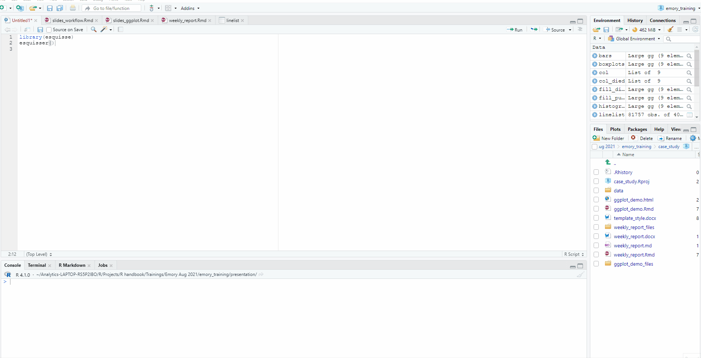
Data structure
ggplot2 works best when the dataset is in “long” format, where each variable has its own column. We recommend that you become familiar with pivot_longer() from dplyr (see the Epi R Handbook pivoting page). And the tutorials on data cleaning and tidy data.
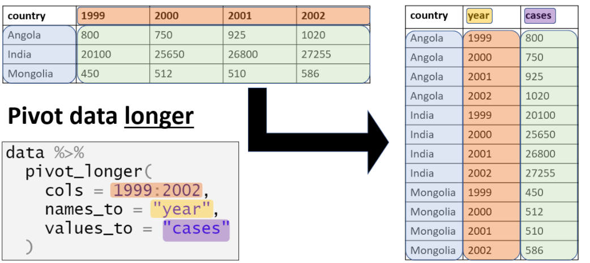
Next steps
Much more detailed breakdowns of all the arguments and functions of ggplot and associated packages covered in this tutorial are included in the data visualization sections of the handbook. Specifically the ggplot basics, ggplot tips, epidemic curves demographic pyramid and interactive plotting chapters. The handbook also covers further plotting methods in R and ggplot2 such as heatmaps, diagrams, combinations analysis, transmission chains, phylogenetic trees and GIS mapping techniques and links to further resources for these types of visualization.
Some good example plots with accompanying code can be found on the R graph gallery to use for inspiration with your own plotting goals and projects.